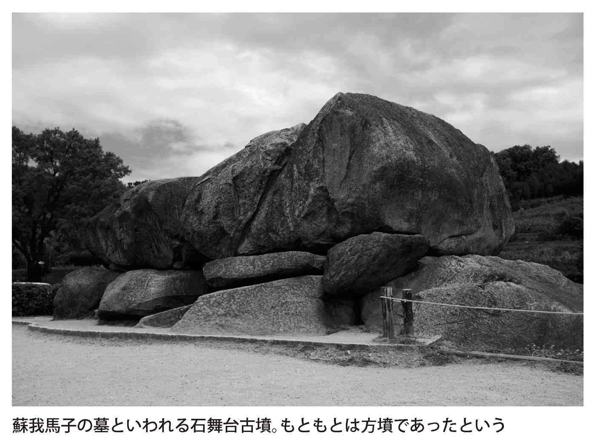
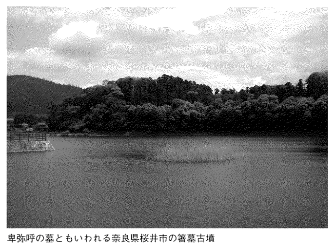
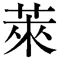
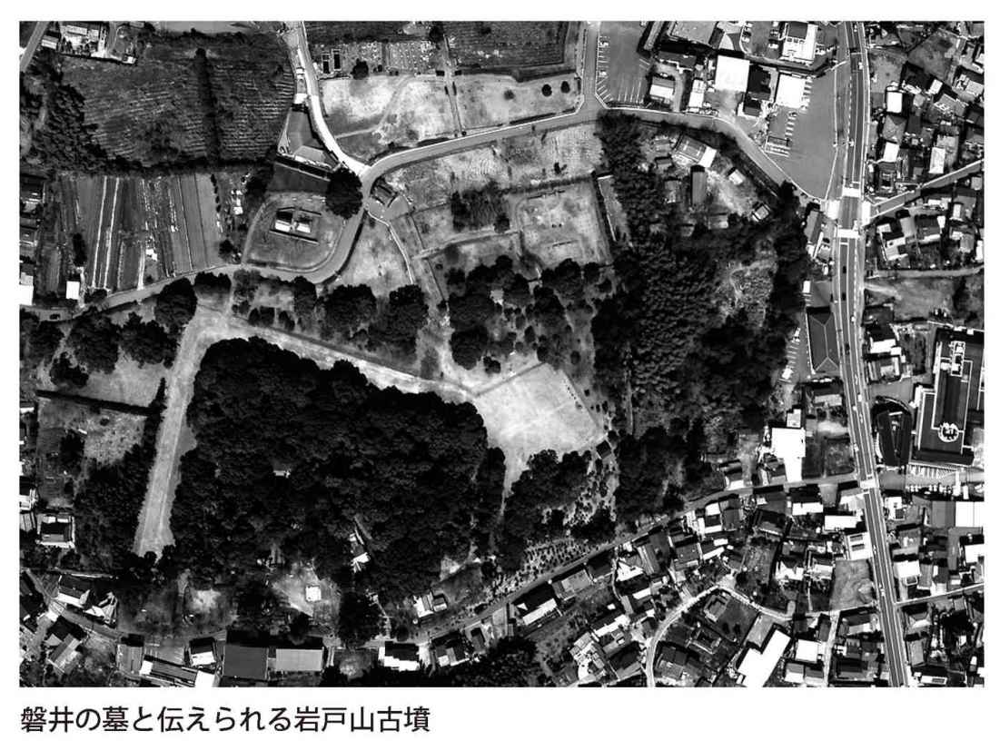

| 古代史 キーパーソンたちの意外な「その後」 | |
| 日本博学倶楽部 | |
| (2017) | |

古代史 キーパーソンたちの意外な「その後」
日本博学倶楽部
無限に広がると通説を覆す新発見の連続......。変わり続ける日本の古代史は、大変魅力あるテーマである。すべてがといっても過言ではない日本古代史にあって、今回焦点を当てたのは、有史以前から平安時代に至る日本黎明期に登場した、歴史の担い手たちの「その後」である。
たとえば、誰もが知っている聖徳太子。仏教を広めるとともに、憲法十七条や冠位十二階を定めて国内政治を発展させ、遣隋使を派遣しては、中国の隋と対等外交をおこなおうと試みた人物である。古代史に一大変革をもたらす業績を残した人物であるが、じつはその活動期間は非常に短く、遣隋使派遣後、政治の表舞台から忽然と姿を消しているのだ。彼は一体どこで何をしていたのだろうか？
また、万葉歌人・大伴家持は、晩年歌作りをやめているが、その理由はどこにあるのか？ 「その後」を追うことで、意外な真実が見えてくる。
さらに、通説上は非業の死を遂げている者が、意外な形で生存していたという伝説もある。たとえば、蘇我馬子と対立して討ち取られた物部守屋。彼が東北に逃れ、一大国家を築いたという内容を記す文書が現存しているのだ。また、磐井の乱で討たれたはずの筑紫の国造・磐井についても、生存説がささやかれている。
その後をたどることで意外な人間性が浮き彫りになる例の一つが、雄略天皇である。彼は、皇位を巡る争いの中で競争相手をことごとく殺害し、血で血を洗う闘争の果てに即位に至った。すると、その後の人生はこれまでの殺伐とした雰囲気とは一転。正史は、色を好む非常に人間臭い天皇の姿を伝えるようになる。
記録が少ない日本の古代にあって、ほとんどの人物がその最期を記されることなく歴史の闇に姿を消している。そのため通説に加えて珍説・奇説といった、諸説が入り混じる状況にある。だが、そこには権力者の転落人生あり、苦労人の逆転人生あり、に包まれた晩年の意外な姿ありと、大変興味深い人生模様が展開されている。
本書を読めば、日本史のを担った人々が織り成す、こうした「その後」のドラマを存分に楽しむことができるだろう。古代人の意外な素顔に迫るとともに、古代史にまつわるの解明の一端を楽しんでいただければ幸いである。
日本博学倶楽部
古代史 キーパーソンたちの意外な「その後」 目次
あまりに短い活動期間！ 斑鳩宮に移り住んでからのに包まれた日々とは？
蘇我氏の専横を打ち倒し、大化の改新を推し進めた気鋭の皇子は暴君と化した!?
中大兄皇子とともに大化の改新を成し遂げた功労者の最期は中毒死!?
遣隋使の大任を果たした外交官が帰国後に直面した大ピンチとは？
竈の煙が見えないことから国民の窮乏を知り、税を免除した聖帝の抱いた悩みとは？
権力の絶頂に達するや、末法思想におののく日々を迎えた御堂関白
蘇我氏の全盛の基礎を築いた権力者の晩年は、失策の連発だった!?
生涯現役！ 蝦夷地平定の大功を立てた征夷大将軍が死の直前に鎮圧した内乱とは？
藤原広嗣の乱後、遷都を繰り返した大仏建立の天皇
長岡京へ遷都したのに、また遷都！ 二度の遷都に至った意外な理由
征旅に倒れた古代の英雄は、大白鳥になって飛び立った!?
左遷されたエリート官僚は、なぜ死後〝天神様〟になったのか？
蘇我氏は悪者ではなかった!? 乙巳の変で滅んだ入鹿が雷神になったワケ
「大悪天皇」といわれた雄略天皇は、即位後、女グセがめっぽう悪くなった！
皇位簒奪を狙う異母兄を倒した勇者は、民衆を恐怖のどん底に叩き込んだ!?
美しき伝説的女流歌人は、なんとも哀れな晩年を送っていた!?
魏に使いを送った邪馬台国の女王は、霊能力が衰えたために殺害された!?
天武・天智の二人の天皇に愛され、恋の三角関係が古代最大の内乱の原因に!?
聖武天皇の皇后は祟りを恐れ、法華滅罪寺で贖罪の晩年を送っていた！
乙巳の変を目撃した女帝は、再び即位した後に石造物に夢中になった!?
文武天皇の養育にあたった野心家の乳母は、同じく野心家の藤原不比等と重婚した！
藤原仲麻呂の乱に連座して都を追放された皇女は、再び流刑の憂き目に遭う！
孝徳天皇の皇后になるも、夫を見捨てて実兄との不倫関係に走った？
二人の親王と不倫の恋に燃えた美女が大抜された仕事とは？
随筆の傑作を残した才女が落ちぶれた晩年に切った啖呵とは？
王位を巡って理不尽な死を遂げた井上内親王は、その後、怨霊譚の主人公に！
壬申の乱に敗れた悲劇の皇子は、じつは房総半島に逃げ延びていた!?
万葉歌人、宮廷歌人として活躍した歌の名手は水死させられていた!?
五度の失敗を重ね来朝した高僧......じつは彼の目は見えていた!?
伊豆に流された修験道の開祖は、新羅へ渡って王になった!?
「貧窮問答歌」で有名な歌人の晩年は、意外と裕福だった!?
秦の始皇帝をペテンにかけた方士が日本に渡来して神武天皇になった!?
弥生時代になっても存在しつづけていた前時代の文明継承者たち
反乱に失敗した北九州の盟主は、本当は生きていた!?
朝廷軍に敗れた蘇我氏のライバルは東北に逃れていた!?
皇位簒奪に失敗した皇子が、神社の神主となって生き延びていた!?
異例の出世を果たした怪僧が巨根の持ち主にされてしまったわけとは？
コラム 邪馬台国論争の結末――幻の女王国はどうなったのか!?
壬申の乱に勝利し、律令国家の基礎を築いた大帝が晩年に抱えていた悩みとは？
帰国に失敗し、死んだと思われた遣唐留学生
口封じのために殺された？ 崇峻天皇を殺した暗殺者の最期
評価が逆転!? 恐ろしい鬼から英雄となった蝦夷の族長
嵯峨天皇を感嘆させた文人は、遣唐使を放棄して配流の憂き目に遭った！
長屋王の変の首謀者たちが絶頂の果てに迎えた皮肉な末路とは？
蘇我入鹿を暗殺した刺客は、同年に別の斬殺事件にも起用されていた!?
大納言・藤原元方は、死後怨霊となって冷泉天皇の血筋を呪った!?
異母弟に裏切られた忠臣、妻子八人とともに自害に及ぶ！
藤原仲麻呂と懇意だった淳仁天皇は、明治時代まで天皇と認められなかった！
朝鮮への遠征を命じられた武将にまつわる悲しき物語とは？
日本に仏教を伝えた百済の王が戦場で迎えた無残な死！
改革の半ばで中大兄皇子に見捨てられた天皇の寂しき晩年
コラム 三角縁神獣鏡論争の結末――卑弥呼の鏡はどこへ消えたのか!?
遣唐使として活躍した秀才は、帰国後、軍師となって藤原仲麻呂の乱を平定した！
朝廷から弾圧された民衆に人気の僧が一転、大僧正に！
日本初の相撲取りは、皇族への殉死を廃止して埴輪を作った！
多大な業績を残してきたにもかかわらず、表舞台から姿を消した一族
陰謀により出家させられてからも捨て切れなかった奔放な女性関係
道鏡の皇位簒奪を防いだ清廉の士は、土木事業家に転身した!?
『万葉集』編纂後、突然歌作りをやめてしまった理由とは!?
唐の高僧・鑑真の招聘に尽力した僧は、帰国後、民衆救済に奔走した！
二十六代天皇が大和に移ったのは、即位後二十年も後のことだった!?
釈三尊像を残した仏工集団「止利派」は、大化の改新を境に姿を消した！
死んだはずの神武天皇の兄が高千穂に戻って鬼退治をしていた!?
奴隷に身をやつした兄弟が、皇位に就いた後におこなった復讐の数々
土佐から帰京した歌人は、摂関家へ接近して〝食い扶持〟を得ていた!?
雷を捕まえた雄略天皇の側近は、なんと死んでからも雷を捕まえた!?
崇峻天皇の皇子が出羽三山に祀られているのはどうしてか？
政争に敗れて左遷されるも、九州の豪族の人望を集め異民族の侵入を撃退！
コラム 金印真贋論争の結末――志賀島の大発見は贋作だったのか!?
奈良の旧都がたどった悲運...... 平安遷都後にいったい何があったのか？
徐々に小さくなっていった!? かつては高さ九六メートルもあった出雲大社
律令国家を建設した二人の天皇の陵墓にふりかかった災難とは？
三種の神器の一つである神剣がたどった数奇な運命とは？
貴族のあいだで大流行し、 けの対象も次第にエスカレート！
けの対象も次第にエスカレート！
聖徳太子も食べていた!? ミルクやチーズが姿を消していた納得の理由とは？
壬申の乱後、徹底的に破壊されて跡形もなくなったのはなぜか？
正倉院蔵の一〇〇以上の甲冑は、恵美押勝の乱で使われてしまった！
七五七年の派遣停止後、各地から集められた防人たちはどうしたのか？
古代文化の象徴の一つ、「銅鐸」が「記紀」に登場しないのはなぜか!?
東大寺の大仏に目を入れた筆は、いまも正倉院に眠っている！
コラム 任那論争の結末――志朝鮮半島に日本府はあったのか!?
図版作成：イクサデザイン
装丁：多田和博
装丁写真：ＰＰＳ通信社
日本人の祖先は、アジア大陸で狩猟生活を送っていた人々が獲物を追って、当時地続きだった海峡を渡ってやってきたと考えられている。やがて彼らは土器を作り始め、その土器の形態から、縄文時代と呼ばれる社会を形成した。
この時代はかなり長く続いたと推測されているが、晩期になると大陸から稲作がもたらされ、狩猟生活が栽培生活に移行したことで、人々が集団で定住するムラという社会形態が登場。弥生時代へと移っていく。
ただ稲作は、その収穫に頼る豊かな者と、技術を知らず、稲作に不慣れで収穫が少ない不安定な生活者という格差を生む。ムラという集団のなかに、富める支配者と、貧しい被支配者という上下関係を作ったのである。
そして、これが国家の誕生に結びつく。優れたリーダーに率いられたムラが周囲を駆逐して大きなムラとなり、それを統治するムラも生まれてクニを形成していく。西暦五七年に後漢王朝に遣使した奴国や、二三九年に魏王朝に遣使した邪馬台国などはこの過程で登場したクニである。これら日本各地のクニをまとめ上げた最初の存在が大和政権と呼ばれている国家で、その権力は放射状に広がり、日本初の統一政権となっていった。
この間の経過は、神話も含めて『古事記』や『日本書紀』といった我が国初の歴史書に記録されている。虚実入り交じったものというのが現在の評価だが、大筋では日本誕生の物語といってよい。
とはいえ、六世紀ごろの段階では、大和政権に対し地方の権力者が従属するまでには至っていなかった。不安定な地位にあった大和朝廷を中央集権国家にし、日本の文化の発展に寄与したのが、七世紀初頭に登場した聖徳太子だった。彼は豪族・蘇我氏とともに、伝来したばかりの仏教の興隆に尽力して人心を一つにし、隣国である中国にならった国家づくりを目指した。
しかし、聖徳太子の死後、強力な支援者であった蘇我氏が大和朝廷の頂点に君臨する大王（天皇）をないがしろにした政治を展開し、専横の色合いを強めていく。これを憂えた中臣鎌足は中大兄皇子と結託し、六四五年、蘇我氏本宗家の当主・入鹿を討った。
これ以降、中大兄皇子を中心に大化の改新が推し進められ、律令制度が整備されて国家の姿がはっきりしてくる。この国家体制は、大化の改新の首謀者だった中大兄皇子、つまりのちの天智天皇の時代になって形が整い、やがて文武天皇の時代に大宝律令が完成し、実を結ぶのであるが、それまでには産みの苦しみを味わわねばならなかった。
律令制度は、豪族や旧氏族を窮地に追い込み、支配者層に大きな変革をもたらした。その一方、朝廷においては、天智天皇の死後、次期天皇の地位を巡って内部抗争が勃発する。それに各氏族が便乗する形で、六七二年、天智天皇の子・大友皇子と天智天皇の弟・大海人皇子のあいだで壬申の乱が起こった。この乱に勝利した大海人皇子は天武天皇となり、次の持統天皇の時代にかけて諸改革を推進していくのである。
こうした過程で、突出した一族が現れる。天皇と朝廷の権力が絶対的な中央集権体制において、その中枢にいるためには、天皇との血縁関係が強力にはたらく。つまり、一族から皇后を出したり、一族の娘が天皇の皇子を産んで次代の天皇になったりすることで、陰の権力が手に入るのだ。この力を利用して奈良時代に権力を手にしたのが、中臣鎌足の子孫にあたる藤原氏であった。
藤原不比等が娘の光明子を首皇子（のちの聖武天皇）の后とすると、不比等の子たちは政敵長屋王を追い落として光明子を皇后へと昇格させる。こうして権力の基盤を固めた藤原氏は、奈良時代以降の政界を牛耳ることになる。
とくに延暦十三（七九四）年の平安遷都後は、一族の娘に天皇の子を産ませ、その子を帝位に就けて外戚という地位を確保、朝廷での重職に就き続けて実際に政治を司った。貞観八（八六六）年の応天門の変ののちに藤原良房が皇族以外で初の摂政となると、その養子基経は、宇多天皇の治世に関白となる。平安期の藤原氏はこれらの地位を独占して、摂関政治という一時代を築いていくのである。
しかし金と権力に執着し、朝廷内ばかりでなく、民衆の離反をも招き、貴族政治の終焉につながる武士の台頭を許したこともまた、藤原氏の政治だった。平安時代の末期には貴族の警護役だった武士階級が台頭。
やがて世は中世へと移っていく。
あまりに短い活動期間！ 斑鳩宮に移り住んでからのに包まれた日々とは？
推古元（五九三）年に推古天皇の摂政となった聖徳太子は、「冠位十二階」を定め、「憲法十七条」を制定するなど、律令に先駆ける国内政治体制を整え、中央集権化を推し進めたことがよく知られている。また、小野妹子を遣隋使として大陸に派遣し、中国の王朝・隋との対等外交を試みたことも、歴史的評価が高い。ほかにも法隆寺や四天王寺を建立するなど、仏教興隆に寄与したという功績も見逃せない。
しかし、これほどの業績を残していながら、その活動期間は意外に短い。
聖徳太子の生年は敏達三（五七四）年、没年は推古三十（六二二）年とするのが通説となっているが、冠位十二階と憲法十七条という改革は、推古十一（六〇三）～推古十二（六〇四）年におこなわれている。さらに推古十五（六〇七）年に遣隋使を派遣して以降、太子の政治的業績に目ぼしいものはなくなる。政治の表舞台から姿を消してしまうのだ。
では、亡くなるまでの十五年間に聖徳太子が何をしていたかというと、どうも法隆寺近くに造営していた斑鳩宮で仏教三昧の暮らしを送っていたらしい。この時期の彼の手によるものと伝えられる、仏典に関する書も残されている。
『日本書紀』によれば、太子は推古二十六（六一八）年から病の床についたとされているが、『伝暦』という書では、同年に太子が南河内磯長山に自分のを築かせており、その工事の検分に出向いて指図していたことがわかる。といえば、霊を祀る建物である。太子の死は推古三十（六二二）年のことであり、その四年も前から自分の堂の準備をしているところに、太子が死を予感していたことが感じ取れる。
これをもとに、『世界遺産 飛鳥・法隆寺の』の著者、有賀訓氏は、晩年の聖徳太子は、深い虚無感や絶望感を募らせていたのではないかと推論している。根拠としているのは、太子が「世間皆虚仮」と口にしていたという点だ。これは「現実の世界は仮のものにすぎない」という意味だが、太子は改革を成し遂げたあと、仏典を読みふけり、仏教により深く傾倒していく過程で、虚無感にとらわれるようになったというのだ。
有賀説はまた、太子が死の前日に、「自分は今夜、死ぬだろう。お前も一緒に死ぬだろう」と夫人の一人・膳大郎女に告げており、そのとおりになった点に疑問を投げかけている。夫婦がそろって一日のうちに亡くなるなどめったにあることではない。よって、心中だったのではないかというのである。
また、ほかの太子関連の史料では、推古二十九（六二一）年の暮れに太子の生母が亡くなり、一月から太子が病床につくと、二月二十一日に太子の看病をしていた夫人が先に没して、翌日に太子が息を引き取ったという時系列になっている。短期間のうちに一家を見舞った死に、古代大和政権でありがちだった、勢力争いによる暗殺説もささやかれる。
蘇我氏の専横を打ち倒し、大化の改新を推し進めた気鋭の皇子は暴君と化した!?
七世紀の日本――。時の皇極天皇の皇子・中大兄皇子は、天皇をないがしろにする蘇我氏の専横に憤りを感じていた。ある蹴鞠の会において、同じように国の行く末を憂えていた中臣鎌足と出会った皇子は、皇極四（六四五）年、権力をほしいままにしていた蘇我本宗家の当主・蘇我入鹿を討った。史上名高い乙巳の変である。このクーデターを成功させた中大兄皇子は、皇太子として国政の中心に位置して、班田制や、税制の改革方針を示した「改新の詔」を発するなど、政治改革に手をつけたことが評価されている。
まさに、理想に燃える若き政治家の大活躍であるが、これは彼の一面だけの評価に過ぎない。乙巳の変後の皇子は暴君と化し、推し進められた大化の改新の陰には、次々と葬られていく政敵や、かつての同志たちの姿があった。
真っ先に標的となったのが、蘇我氏との結びつきの強い古人大兄皇子である。彼は乙巳の変の直後に出家して野心のないことを示していたが、大化元（六四五）年のうちに謀反の疑いをかけられて殺害されてしまう。
さらに大化五（六四九）年には、乙巳の変の際に皇子と同志であった蘇我倉山田石川麻呂が謀反をでっちあげられて自害。当時、彼は皇子と対立を深めていたところであった。白雉五（六五四）年、革命政治の旗頭・孝徳天皇を難波宮に置き去りにして飛鳥に戻ったところ、その年のうちに天皇が病死する。その子・有間皇子も、たくみに謀反の誘いに乗せられた上で捕縛され、処刑されている。
また、孝徳天皇の死を受けて、中大兄皇子は実母の皇極上皇を斉明天皇として再び即位させた。かくして政敵を葬った中大兄皇子は、皇太子のまま政治の第一線に躍り出し、ついに最大の暴挙に出る。
それは唐・新羅連合軍の攻撃にさらされていた朝鮮半島の同盟国・百済が援軍を求めてきたとき、皇子がこの無謀な援軍に応じたことである。このころ斉明天皇は土木工事に熱中し、非難を浴びるなど、宮の置かれた飛鳥には民衆の不満が渦巻いていた。皇子にしてみれば、民衆がためている不満を外地へ目を向けさせることでそらせたかったのかもしれないが、相手は中国全土を支配する超大国の唐。皇子の壮挙は完全な失敗に終わる。
まず斉明天皇まで担ぎ出して軍を率いさせ、筑紫国へ向かわせるが、彼女はこの地で没してしまう。それでも出兵をあきらめない皇子は、天智二（六六三）年に朝鮮半島の白村江へ大軍を送り込んだものの、唐・新羅連合軍の前に大敗を喫してしまうのだ。
半島からの撤退後は、唐・新羅の逆襲を恐れ、筑紫国から瀬戸内海沿岸にかけてあちこちに城を築き、都を飛鳥から近江に遷している。もともと百済救援が多くの反対の声を押し切って独断で決定したことだったから、皇子は民衆ばかりか群臣からも反感を抱かれる結果になってしまった。そのうえ膨大な費用を浪費し、朝廷の疲弊をも招いたのだった。
天智六（六六七）年に即位したが、その後も暴君ぶりは止まらない。最晩年には争いの種をまいて亡くなっている。皇太弟として後継を約束していた弟・大海人皇子がいるにもかかわらず、我が子・大友皇子を政治の中枢に加えて事実上後継者としたため、これが原因となって壬申の乱が勃発するのである。
教科書ではあまり扱われない気鋭の皇子のイメージを覆す「その後」である。
中大兄皇子とともに大化の改新を成し遂げた功労者の最期は中毒死!?
中臣鎌足は、中大兄皇子とともに蘇我入鹿を討った名臣として歴史に名を残すが、その後の大化の改新政権では、彼の功績を伝える史料が何もない。朝廷での職務にしても何も書き残されていないのである。ただ、新政権をゆるぎないものにすることになったいくつかの事件、たとえば中大兄皇子の異母兄弟・古人大兄皇子や、政権の中枢にあった蘇我倉山田石川麻呂、孝徳天皇の皇子・有間皇子らの抹殺に関しては、乙巳の変と同様に鎌足が計画・立案した可能性が否定できないという。
中大兄皇子が、皇太子になりながらなかなか天皇位に就かなかったように、鎌足も左大臣・右大臣といった朝廷の要職に就いてはおらず、どんな職責を果たしたのかは不明だ。それでも彼の存在は、中大兄皇子の政治にとって欠くべからざるものだったようで、天智八（六六九）年の鎌足の死の前日、大織冠という冠位制度にはない最高の位と藤原の姓を与えている。
その鎌足の死の原因は、一般に落馬がもとで病床につき、そのまま病死したと伝えられている。ところが、この病状に関して、砒素中毒だったのではないかという説が浮上した。昭和九（一九三四）年に発見されていた鎌足の遺髪から、近年の科学調査によって砒素が検出されたからだ。
有賀訓氏によると、鎌足の生涯を伝える書には、彼の墳墓が築かれたことが記されていたという。その古墳らしいものが見つかって遺体の存在も確認されたわけだが、戦前のことで、内務省が「皇族の可能性があり、科学的調査は非礼にあたる」として埋め戻してしまった。
しかし、埋め戻す前に撮影した写真と、採取された少量の毛髪が、昭和五十七（一九八二）年に京大の研究室で見つかる。半世紀も忘れられていた貴重な資料だった。これをもとに遺体のレントゲン写真を最新科学で解析したところ、落馬の事実と、それが原因の下半身不随も確認された。寝たきりの療養中に内臓疾患を併発し、それが死因であることも確かめられたのだが、毛髪から人体に存在するはずのない砒素が検出されたことが衝撃を与えた。これが慢性砒素中毒の蓄積残留と鑑定され、内臓疾患も砒素中毒のためと考えられた。そのため、鎌足が改新政府の裏方に徹して政敵排除に動いていたことにより、反感を買って暗殺されたのではないか、という説が語られるようになっている。
遣隋使の大任を果たした外交官が帰国後に直面した大ピンチとは？
遣隋使といえば小野妹子の名とともに記憶されるが、じつは彼は最初の遣隋使ではない。彼に先立ち、推古八（六〇〇）年に第一陣が送り出されている。わが国にしてみれば、倭王武以来の中国への使者だった。遣隋使が倭王武らの外交と決定的に違うのは、隋との対等外交を目論んだという点である。これは、五八九年に中国を統一した隋が百済・新羅を服属させる一方、高句麗に軍事行動をとったことを受けて、百済・新羅に朝貢させていたわが国は、あくまで隋と対等の立場で外交をおこなおうとしたのだ。
しかし、第一回の交渉は、倭国内政治の未発達もあって失敗に終わる。推古十五（六〇七）年の第二回遣隋使となった小野妹子は、あらためて対等な外交を結ぶことを宣言する国書を携えての渡航で、この国書が物議をかもした事実が『隋書』に記録されている。
このときに妹子が隋の皇帝・煬帝に渡したのが、「日出づる処の天子、書を日没する処の天子に致す」という文章で始まる有名な国書で、聖徳太子の手によるものだった。煬帝はこの国書を見て激怒したと『隋書』は記述している。煬帝の怒りは、おそらくこれまで「倭」とさげすんで朝貢させていた国の王が、中国の皇帝を意味する「天子」を名乗ったことが原因といわれている。それでも煬帝は、今後の高句麗侵略を考えると、高句麗の背後に存在する日本を捨て置けず、返書を書くとともに、裴世清を使者として帰国する妹子に同行させている。
ところが、帰国した妹子は煬帝からの返書を紛失したと報告するのである。遣隋使船が帰路に立ち寄った百済で奪われたというのだ。外交官が相手国の皇帝の文書をなくしたのだから、大失態である。朝廷の重臣たちは妹子の責を問うて流刑に処すことを決めた。
遣隋使の偉業を成し遂げた小野妹子は、あわれ流刑となってしまうのか――。
しかし妹子の危機を推古天皇が助ける。天皇は、隋使が来日中でもあり、外聞をはばかって妹子を許しているのだ。おかげで妹子は、帰国する裴世清を送って再び隋に渡るなど、以降も外交面で活躍し、冠位十二階の最高位まで昇り詰めたのだった。
ただ、妹子が流刑にまで処せられる原因となった返書の紛失は、事実ではなかったのではないかといわれている。
彼が受け取ったという返書のほかに、裴世清が煬帝の国書を推古天皇の前で読み上げており、そこには「皇帝、倭皇に問う」などとあって対等外交とはほど遠い。妹子が預かった返書も同様の内容だったとすれば、それを聖徳太子も群臣たちも喜ぶはずがない。妹子は、奪われたことにしてだれの目にもふれないようにしたという説だ。
また、最初から返書はなかったとする見解もある。煬帝の書は裴世清の携えてきた一通だけで、体裁をつくろうために奪われたことにしたという説である。
事実は定かではないが、ともあれ妹子の機転が功を奏したのか、彼は以降も栄達の道を歩むことができたのである。
竈の煙が見えないことから国民の窮乏を知り、税を免除した聖帝の抱いた悩みとは？
大阪・堺市にある日本最大の前方後円墳・大仙陵古墳の主といわれているのが仁徳天皇だ。大阪平野の開発を進める一方、高台から下に広がる集落を見下ろしたとき、家々から竈の煙が立ち昇っていないのを見て民の困窮度を知り、税の取り立てを三年間中止するという仁政を敷いた天皇として知られている。仁徳天皇陵は被葬者が異なるという説もあるが、その規模の大きさとこうした伝承から、この時代の大和政権は、飛躍的な発展を遂げたことが窺える。
それでも、天皇になるまでの彼の人生は、けっして平坦ではなかった。仁徳天皇は応神天皇の皇子の一人だったが、応神天皇は末っ子を後継天皇にしたいと望んでいた。それを知っていた仁徳天皇は、父の死後に年長の皇子が末っ子の抹殺を計画したとき、事前に察知して阻止した。これに感謝した末っ子は、仁徳天皇に即位をすすめるが彼は父の遺志に従うべきと固辞し、兄弟は互いに譲り合う。
結局、三年後の弟の死で、仁徳天皇はようやく皇位に就いたのだった。この弟の死を、『古事記』は病死とするが、『日本書紀』は、兄を即位させるための自害だったと記している。いずれにしろ、こうした経緯があってこその仁政であり「聖帝」の評判だった。
そんな人格者であり、統治者の模範と位置づけられていた仁徳天皇であるが、一つ大きな悩みを抱えていた。それが妻の嫉妬である。この時代、皇后のほかに妃を持つのは普通のことだったが、仁徳天皇の場合、女性関係が殊に華やかであり、嫉妬深い皇后は妃いじめが激しかった。たとえば吉備国（現・岡山県）から召し出した妃は、皇后の嫉妬を恐れて船で逃げ帰ろうとした。そのとき、船を見送りながら仁徳天皇が彼女を惜しむ歌を詠んだのを知った皇后は、彼女を追いかけさせて船から引きり下ろし、陸路で去るよう命じたという。
また皇后は、自分が神事の準備で宮中を留守にしているあいだに天皇が異母妹と契ったのを知ると、宮中へは戻らず別居を始めてしまう。仁徳天皇は、皇后を連れ戻そうと歌を詠んで贈るなど、臣下を巻き込んであれこれ手を尽くすが、皇后は二度と戻らず、新しく営んでいた宮で没している。
嫉妬深い妻なら別居でもかまわないと思えるが、妻の実家が実力者の豪族だったため、天皇は頭が上がらなかったのだという。
権力の絶頂に達するや、末法思想におののく日々を迎えた御堂関白
藤原不比等の時代に始まった天皇の外戚となって朝廷における権力を手にするという藤原氏の手法は、平安時代になって摂関政治という形で結実した。自分の娘が産んだ皇子を天皇とし、幼いうちは摂政となって政務を処理し、天皇が長じたあかつきには関白となって政務を補佐する形で権力を握るのである。摂政については七世紀の初めに聖徳太子が務めたように、皇族による就任はあったが、臣下出身の摂政を誕生させたのは平安時代の藤原氏で、天安二（八五八）年の藤原良房に始まる。
その集大成ともいうべき栄華を極めたのが、十世紀末から十一世紀初頭の藤原道長だった。道長は関白を務めていた兄のあと、一族間の勢力争いを制して摂政の座に就いた。そして、
「この世をば わが世とぞ思ふ望月の 欠けたることも無しと思へば」
と歌い上げるまでの絶頂期を迎えたのである。
以降も関白の座を得て貴族の頂点に君臨し続けたと思いきや、頂点を極めたばかりの寛仁三（一〇一九）年、彼は出家してしまう。関白の座にも就くことはせず、息子・頼通に摂政の座も譲っている。このあとも道長の娘たちが天皇の后妃となって産んだ子が、後一条・後朱雀・後冷泉と即位していくであろうというときに、道長に何があったのだろうか。
道長の通称となった「御堂関白」の名にその実相が窺える。
道長が権力の座に近づいていくのと歩調を合わせるように、都に登場した末法思想が貴族のあいだにも広まっていった。
この思想は釈入滅後二千年で人心の乱れた混乱の時代が来るというもので、それが近づいていると言いはじめたのが密教教団の主流を離れた人々だった。比叡山などは、自分たちの修法で末法は避けられると主張したが、都では強盗が横行し、天災が頻発。疫病の流行も続いていた。
道長はこの末法思想にとりつかれた。
当時、反藤原勢力はこの末法思想を利用し、藤原の専横政治に仏罰が下るなどと言い募っていた。自身で病弱なことを気にしていた道長は、「政争の犠牲になった人々の祟りだ」という も気にしていたうえに、重い眼病を患って闘病生活を強いられたことで出家を決めたようだ。
も気にしていたうえに、重い眼病を患って闘病生活を強いられたことで出家を決めたようだ。
出家後の道長は、土御門殿の東に無量寿院を造営し、九体の阿弥陀、観音・勢至像を安置するなど、念仏三昧の日々を送るようになる。といっても完全な隠 生活に入ったわけではなく、「月に五、六度は天皇のお顔を拝したい」と語っているように、隠然たる力は残していたようだ。その証拠に、出家して堂に暮らす道長のことを人々は「御堂関白」と呼び、実際には関白の座に就いていないものの、関白同然の力をもっていると理解していた。
生活に入ったわけではなく、「月に五、六度は天皇のお顔を拝したい」と語っているように、隠然たる力は残していたようだ。その証拠に、出家して堂に暮らす道長のことを人々は「御堂関白」と呼び、実際には関白の座に就いていないものの、関白同然の力をもっていると理解していた。
その後の道長は、仏罰が下るという恐怖に怯えながら密教の修法を何度もおこなわせ、法成寺の建立に多額の金を使い、この法成寺で万寿四（一〇二七）年に世を去った。富と権力を得た代償に道長は恐怖を背負うことになったのである。
蘇我氏の全盛の基礎を築いた権力者の晩年は、失策の連発だった!?
蘇我氏繁栄の礎を築いた蘇我馬子は老獪な策略家で、弁舌と才知に優れた人物だったと伝えられている。
用明二（五八七）年、蘇我馬子は対立していた物部守屋を攻め滅ぼして権力を確立。その後、自身が擁立した崇峻天皇が自分を嫌っていると知るや、すぐさま東漢直駒に命じて崇峻天皇を暗殺させるほど独裁的な権力を握った。さらに自分の姪にあたる豊御食炊屋姫を推古天皇として即位させ、引き続き大臣に就任。聖徳太子と共に共同執政をおこない、朝廷の発展に寄与したのである。
策謀のみならず政治力にも長けた馬子の実力は、推古天皇をはじめ、当時の朝廷内では誰もが認めるところであった。
ところが、これほどまでに才が立った馬子も、晩年になるとカンが鈍ってしまったようで、考えられないような誤りを連発しているのである。
馬子の最初の失敗は、聖徳太子が世を去った翌年の推古三十一（六二三）年に起きた。
馬子は、蘇我氏の同族・境部臣雄麻呂らを大将軍とする大規模な征討軍を新羅へ派遣した。これは馬子の一存によるものだったが、なんとその直前に朝廷は新羅へ貢調使を出していたのである。この交渉は万事うまく進み、新羅も了承し、やれやれとばかりに使者が帰国の船に乗り込もうとしたところ、海岸には日本からの征討軍の軍船が押し寄せていたのである。結局、新羅は戦わずに日本に降伏したが、馬子は朝廷がおこなった外交交渉を全て無駄にしてしまったのである。
これは明らかに馬子の勇み足であり、馬子自身もかなり後悔していたという。
さらにその翌年の推古三十二（六二四）年、今度は推古天皇に対して「 城県は蘇我一族の故郷だから、私の領地にください」と願い出た。かつて城県を支配していた城氏が蘇我一族の血統に連なる関係にあったために申し出たようだが、城県は倭の六つの御県であり、天皇家にとっても非常に由緒の深い所領だったため、推古天皇は、
城県は蘇我一族の故郷だから、私の領地にください」と願い出た。かつて城県を支配していた城氏が蘇我一族の血統に連なる関係にあったために申し出たようだが、城県は倭の六つの御県であり、天皇家にとっても非常に由緒の深い所領だったため、推古天皇は、
「馬子は伯父だから大概のことは受けるが、これだけは承知できない」
と、馬子の申し出を一蹴した。
この二つの逸話は、かつての馬子からは考えられない失策といわざるをえない。さすがの馬子も、忍び寄る老いに何か焦りを感じていたのだろうか？
馬子が死ぬのは、その翌々年、推古三十四（六二六）年、馬子七十六歳のときのことである。

生涯現役！ 蝦夷地平定の大功を立てた征夷大将軍が死の直前に鎮圧した内乱とは？
延暦十（七九一）年から始まった第二回蝦夷征討で活躍し、延暦十六（七九七）年に桓武天皇から征夷大将軍に任命されたのが坂上田村麻呂である。田村麻呂は武将として優れていただけでなく、その人柄ゆえに兵士たちからも深く信頼されていたという。延暦二十（八〇一）年からの第三回蝦夷征討でも胆沢地方を平定し、胆沢城を築いている。
中世になって武家社会が到来すると、武門の棟梁たる「征夷大将軍」は、日本の支配者を示すようになるが、征夷大将軍といえばまず田村麻呂の名が思い浮かぶほど、その武名は鳴り響いた。
こうして蝦夷征討を終えた田村麻呂は、宮廷で参議、中納言を経て大納言にまでなっており、貴族としても順調に出世を重ねたのである。だが、田村麻呂が亡くなる前年に、平安初期の宮廷から発した内紛「薬子の乱」を平定したことはあまり知られていない。
薬子とは、藤原四家の一つ式家出身の女性であり、自分の長女を皇太子の安殿親王の后とした。ところが、あろうことか自分自身が皇太子と深い仲になってしまうのである。このとき安殿親王は二十八歳、薬子はそれより一、二歳年下、もしくは三十代半ばくらいだったといわれるから、現代の感覚で考えるとそう不自然なことではない。だが、当時の宮廷においては大スキャンダルであり、薬子は激怒した桓武天皇によって宮廷から追放された。
それでも薬子と安殿親王の仲は切れず、桓武天皇が没して安殿親王が即位して平城天皇となると、薬子は宮廷に戻って尚侍として公然と仕えるようになった。ところが平城天皇は大同四（八〇九）年に突然退位。そこで弟の神野親王が即位して嵯峨天皇となるのだが、静養と称してかつての都の平城京へ引っ込んだはずの平城上皇が、またもや政治を執ろうとしたのだ。
こうして、平城上皇と嵯峨天皇の、二つの朝廷が出現したような事態となり、政治は混乱した。しかも平城上皇は、都を平安京から、自分の愛してやまない平城京に再び戻すよう、嵯峨天皇に要求した。
これを聞き入れるふりをした嵯峨天皇が、遷都の責任者に任じたのが田村麻呂である。ほどなく嵯峨天皇は上皇方の人々の官位を 奪し、薬子の兄仲成を殺害した。田村麻呂は遷都の責任者という名目ながら、じつは軍事行動の責任者であった。平城上皇は慌てて乱を起こすべく出兵の命令を下し、自身は東国へ逃れようとしたが、田村麻呂がすかさずこれを包囲して阻止。平城上皇は出家に追い込まれ、薬子は服毒自殺し、乱は終息したのである。
奪し、薬子の兄仲成を殺害した。田村麻呂は遷都の責任者という名目ながら、じつは軍事行動の責任者であった。平城上皇は慌てて乱を起こすべく出兵の命令を下し、自身は東国へ逃れようとしたが、田村麻呂がすかさずこれを包囲して阻止。平城上皇は出家に追い込まれ、薬子は服毒自殺し、乱は終息したのである。
田村麻呂はこのとき五十三歳。当時としては高齢であり、文官としても能力を発揮していたが、やはり最後に回ってきた役割は武将としての役割であった。
藤原広嗣の乱後、遷都を繰り返した大仏建立の天皇
天平十二（七四〇）年に起こった「藤原広嗣の乱」は、藤原宇合の長子・藤原広嗣が、藤原氏の権勢を取り戻すべく、大宰府で兵を挙げた乱である。
天平期の朝廷を牛耳った藤原不比等の死後も権勢を誇っていた四人の息子たち（武智麻呂・房前・宇合・麻呂）だが、天平九（七三七）年に大流行した天然痘で相次いで死亡してしまう。そのため藤原氏の影響力は急速に衰え、代わって橘諸兄らが台頭。広嗣は大宰少弐に左遷されていた。左遷といえど大宰府では最高位にある広嗣は、政敵である玄 と吉備真備の処分を求め、北九州の豪族・農民など一万人余りを動員して関門海峡を渡ろうとしたのである。聖武天皇がすぐさま追討軍を組織させて九州に派兵。同時に広嗣の命には従わないよう、勅符を撒いたところ、広嗣軍からの離脱者が相次ぎ、乱はわずか二か月余りで平定されて広嗣は斬首された。
と吉備真備の処分を求め、北九州の豪族・農民など一万人余りを動員して関門海峡を渡ろうとしたのである。聖武天皇がすぐさま追討軍を組織させて九州に派兵。同時に広嗣の命には従わないよう、勅符を撒いたところ、広嗣軍からの離脱者が相次ぎ、乱はわずか二か月余りで平定されて広嗣は斬首された。
だが、聖武天皇の動揺は大きかった。九州で激しい戦いがおこなわれているというのに、「関東に行く、驚くな」と言い残して平城京を離れ、伊勢に行ってしまったのである。当時の関東とは、現代と違って〝関（鈴鹿・不破・愛発の三関）の東〟という意味である。伊勢も都から見るとこれらの関所の東であったから、「関東」ということになる。
しかも、これ以後は元の都に戻ろうとせず、山深い山背国相楽郡に新たに恭仁京を造るとして遷都を命じたのである。大極殿は、平城京からわざわざ解体して運ばれた。ところが、その大極殿も工事のさなかだというのに、聖武天皇はさらに山奥の近江国甲賀郡に紫香楽宮という離宮を造営した。しかも、しょっちゅうそこに出かけるため、まるで紫香楽宮が都のような有様を呈した。聖武天皇といえば、東大寺の大仏を造立したことでも知られているが、その詔を出したのもここ紫香楽宮にあったときのことである。
さらに天平十六（七四四）年になると難波京への遷都を言い出し、近臣たちが止めるのも聞かずに強行する。しかし、すぐにまた紫香楽宮に戻り、ここを正式の都と定めた。だが結局、その翌年に平城京に戻り、ようやく落ち着いたのだった。聖武天皇はわずか五年のあいだに、まるでとりつかれたように遷都を繰り返したのである。
聖武天皇は藤原不比等の孫にあたり、皇后となった光明子は不比等の娘だった。一説によると、これほど藤原氏との血のつながりが濃かったため、身内に背かれた広嗣の乱に大きな衝撃を受け、それが原因となって都を転々としたのだという。また一方では、自分を支配している藤原氏への反発も強く、その影響を逃れて自分が主体となれる都を造営したかったのだという説もある。
こうしてあてのない彷徨を続けるなかで、心の平安を求めて大仏建立に思い至ったのかもしれない。
長岡京へ遷都したのに、また遷都！ 二度の遷都に至った意外な理由
天応元（七八一）年、四十九代光仁天皇が高齢と病を理由に譲位を決意し、その後を受けて即位したのが五十代桓武天皇である。
桓武天皇が下した最も大きな決断はやはり遷都であろう。延暦三（七八四）年、桓武天皇はそれまでの平城京から、山背国にある長岡京へ都を遷したのである。
即位まもない桓武天皇が長岡京への遷都を決意したのは、即位した翌年に因幡国守氷上真人川継が謀反を起こすなどの政情不安が起こったことに加え、凶作と疫病の流行に見舞われたからである。遷都によって平城京での忌まわしい出来事を振り払おうとしたのではないかと考えられている。
しかし、この長岡京はまだ完成もしないうちに放置され、わずか十年後の延暦十三（七九四）年には平安京へ都が遷ってしまう。
多くの人々が暮らす都を丸ごと移動するのだから、遷都には莫大な費用がかかる。これを承知で遷都をおこなった背景には何があるのだろうか。
その理由は、遷都したばかりの長岡京でも同じように忌まわしい出来事が頻発したからである。長岡京は水運の便が良い場所ではあったが、それが災いして洪水に弱く、たびたび川が氾濫。延暦十一（七九二）年には左京部分が冠水するという被害にも遭った。
決定打となったのは、造営責任者の藤原種継が暗殺された事件だ。そもそも新都建設は種継が提案したものであり、桓武天皇は種継に絶大な信頼を寄せていたのである。
その種継が造営の視察中に何者かに矢で射抜かれて死亡した。犯人はすぐに判明し、大伴継人、大伴竹良ら数十人が捕えられて処刑されたが、この事件関係者のなかに桓武天皇の弟で皇太弟だった早良親王の側近が交じっていたことから、早良親王までもが嫌疑をかけられてしまった。早良親王は無罪を主張したが聞き入れられず、淡路への流刑が決定。悲観にくれた早良親王は絶食し、淡路へ向かう途中で死去した。
その後、桓武天皇には次々と悲劇が襲いかかった。桓武天皇の妃・藤原旅子が若くして他界し、天皇の母親高野新笠ばかりか、皇后の藤原乙牟漏までもが次々と病を得て死亡した。追い討ちをかけるように凶作や天然痘の流行で多数の死者が出たうえ、早良親王に代わって皇太子となった桓武天皇の子・安殿親王も体調がすぐれなくなってしまったのだ。
慌てた桓武天皇が陰陽師に占わせたところ、原因は早良親王の祟りにあるというお告げが出て、桓武天皇は震え上がった。この時代、祟りや怨霊は何よりも恐ろしいものだったからである。自身の即位においても、光仁天皇の皇后・井上内親王とその子・他部親王を死に追いやったという過去がある。桓武天皇は、加持祈をおこなって霊を慰めようとしたが、事態はまったく好転しなかった。
結局、困り果てた桓武天皇は、再び遷都を決意。平安京が誕生した。しかし、その後も桓武天皇はひたすら怨霊を恐れ続け、延暦十九（八〇〇）年には早良親王に崇道天皇を追号している。
わずか十年、しかも完成しないうちに放り出された長岡京を滅ぼしたのは、桓武天皇の弟・早良親王の怨霊だったというわけである。
征旅に倒れた古代の英雄は、大白鳥になって飛び立った!?
日本武尊は、十二代景行天皇の皇子であり、幼名を小碓尊という。大和朝廷に従わない者たちを平定すべく、西へ東への遠征を繰り返した古代史の英雄であるが、彼が眠るといわれる墓は、なぜか三重・奈良・大阪にまたがっていくつも存在している。
『古事記』によると、彼は幼いころから乱暴者で、相当の猛者だったといわれているが、『日本書紀』にはこうした記述は見られない。ただし、その実力を買われてか、父親の景行天皇から九州の熊襲征伐を申し付けられるのである。
こうしてまだ「童子」と呼ばれるくらいの年齢で九州へ向かった小碓尊は、策を用いて見事に熊襲の首領・川上梟帥を討ち取った。このとき、 死の熊襲から与えられたのが「日本武尊」という名前だったのである。
死の熊襲から与えられたのが「日本武尊」という名前だったのである。
次に日本武尊の活躍が見られるのは、東国遠征においてである。初めに出撃命令を受けた大碓尊が怯えてしまったため、これに代わって再度の遠征を命じられている。出発前に伊勢神宮に立ち寄った日本武尊は、叔母の倭姫命から草薙剣（天叢雲剣）を借り受けている。この剣は天皇家に伝わる三種の神器の一つであり、日本武尊は駿河で賊に火責めにされた際に、この剣を振るって草をなぎ倒し、九死に一生を得ることになる。
やがて東国遠征も見事に成功させた日本武尊は、尾張国に入り、尾張氏の娘宮簀姫と結婚。彼は草薙剣を新妻に預けて伊吹山の神を退治すると言って山へ向かう。
神を退治しようとした日本武尊は、その神の祟りを受けて衰弱し、故郷を夢見ながら伊勢国能褒野で力尽きてしまう。享年三十と伝えられている。
日本武尊の死を聞いた天皇は大いに嘆き、その亡骸を能褒野に葬った。すると、ここで不思議な出来事が起こる。日本武尊が白鳥に姿を変え、大和の方へと飛び立ったのだ。柩を開いてみると、彼の着物だけが残されていたという。使いの者がこの白鳥を追いかけたところ、まず琴弾原（現・奈良県御所市）に留まったので、そこにも陵が造られた。さらに白鳥はまた飛び立ち、今度は古市邑（現・大阪府羽曳野市）に留まった。ここにも陵が造られたのである。
結局、白鳥はそのまま天高く飛び去ってしまい、行方知らずとなる。こうして造られた三つの陵を世の人々は「白鳥陵」と呼んだ。
日本武尊については伝説の人物とする説が根強い。当時、大和朝廷が勢力拡大のために全国へ征服軍を派遣しており、その活躍を日本武尊という一人の人物に託して描いた物語ではないかというのである。もしこちらが事実であれば、白鳥になって飛び立った魂というのは、征服の戦いで犠牲になった多くの兵が、魂となってそれぞれの故郷へ戻っていったという象徴なのかもしれない。
左遷されたエリート官僚は、なぜ死後〝天神様〟になったのか？
学者の家に生まれた菅原道真は、自身も優秀であり、異例の若さで最難関の国家試験・方略試に合格した。その後も官僚のエリートコースを突っ走った。宇多天皇もその才を認め、昌泰二（八九九）年には右大臣に就任する。だが、これを苦々しく思っていたのが、左大臣であった藤原時平である。時平とその一派が、宇多天皇の次に皇位に就いた醍醐天皇に道真のことを悪しざまに訴えた結果、延喜元（九〇一）年に道真は九州の大宰府の権帥とされてしまう。あきらかな左遷であった。九州へと赴いた道真は、そのわずか二年後、都に帰ることはかなわないまま、失意のうちに病死した。
この直後から、都では怪死事件や天変地異が続いた。皇太子保明親王が二十一歳の若さで亡くなり、さらに代わって皇太子となった慶頼親王も五歳で亡くなった。時平も三十九歳で夭折している。どことなく不気味な力の存在を感じさせる空気が流れるなか、延長八（九三〇）年六月、大雨が降って清涼殿に雷が落ち、多くの死者が出た。道真を大宰府に追いやった高官も交じっていたことから、道真の祟りだと人々は恐怖に震えた。これに衝撃を受けた醍醐天皇も病に伏し、ほどなく崩御してしまう。
恐れおののいた人々は、道真の怨霊を鎮めるために、道真を天の神、つまり天神の一つである雷神として北野天満宮に祀ることにしたのである。もともと日本には、祟り神、荒ぶる神に対する信仰があった。ただ恐れるばかりでなく、信仰の対象にしていれば、その神はやがて守り神になるというのである。
また、藤原氏によって宮廷から排斥され、京から遠ざけられた道真だが、その信仰が広がった背景には当の藤原氏の思惑が働いていたという説もある。時平には忠平という弟がいたが、時平亡き後、忠平は自分の子を藤原氏の嫡流に押し立てようとした。そのためには時平の子が邪魔である。そこで、時平一族は道真によって祟られていると、広く印象づけようとしたというのである。天徳三（九五九）年には忠平の子が、それまで小さな祠だった北野天満宮を大きな神殿に建て替えている。
現在、日本各地にある天満宮は、学問の神様の「天神様」として知られている。お詣りをする受験生や合格祈願のお札を買う人が一年中絶えないし、受験シーズンになると絵馬が数多く奉納される様子がニュースで報じられている。これは道真が優れた学者だったからだが、当初は祟り神として恐れられていた天満宮が、いつごろからこのように親しまれる存在になったか、はっきりしていない。平安時代にはすでに学問の神となっていたとも、近代になってからだともいわれている。たしかに鎌倉時代ごろに描かれた天神の像には恐ろしい顔をしたものが多く、現代の我々がつい忘れがちな祟り神として道真の顔を残しているようだ。
蘇我氏は悪者ではなかった!? 乙巳の変で滅んだ入鹿が雷神になったワケ
大化元（六四五）年、蘇我入鹿が中大兄皇子や中臣鎌足によって殺され、蘇我氏の本宗家が滅ぼされた事件が乙巳の変である。以降の政治は「大化の改新」とも称され、乙巳の変は専横を極めた暴虐の蘇我氏を中大兄皇子らが討った象徴的出来事とされてきた。このため、長いあいだ「蘇我氏＝悪党」という認識がなされてきたが、じつは蘇我氏はやり手の改革者であり、彼を暗殺した中大兄皇子らがわざと事実を歪めたという可能性が近年になって指摘されている。
蘇我氏が天皇家にとって代わろうとし、聖徳太子の長子である山背大兄王の一族を自殺に追い込んだなどという悪逆ぶりが克明に記されているのは、『日本書紀』である。だが、『日本書紀』の編纂がなされたのは、藤原不比等がすべての実権を握っていた時代であり、不比等は蘇我氏を討った中臣鎌足の息子なのである。父親たちが正義の味方だったとすれば、自らの地位と権力を正統づけることができる。そのためには、蘇我氏が悪ければ悪いほど都合がいいのだ。
そもそも入鹿の殺害は、皇極天皇や朝鮮諸国からの大使が居並ぶ「三韓進調」という儀式の場で決行された。もしも蘇我氏が謀反の企てをしていたというのなら、天皇の名で詔が発せられ、形式だけでも取り調べがなされたはずである。だが、入鹿は し討ちにされたのであり、中大兄皇子らを罰しなかった皇極天皇も何らかの形で加担していたことになる。
し討ちにされたのであり、中大兄皇子らを罰しなかった皇極天皇も何らかの形で加担していたことになる。
ともあれ、入鹿は「臣、罪を知らず」という言葉を残して死んでいった。
近年の研究では、入鹿こそがやり手の改革者だったのではないかという説が出ている。蘇我氏は、自分の家の娘を次々に天皇家に送り込み、強い姻戚関係を結んでいた。だから、わざわざ天皇家を滅ぼす必要はなく、むしろ天皇を頂点とした政治体制を強化するほうが理にかなっている。蘇我入鹿も中臣鎌足らとともに学問を学び、なかでももっとも優秀だったと伝えられているし、父親の蝦夷よりも政治能力に長けていたという。だから蘇我氏に何らかの反感を覚えていた中大兄皇子らは、それまで改革を推し進めてきた入鹿を滅ぼし、その功績を我がものとしたとも考えられるのである。
いったん皇位を降りた皇極天皇は、乙巳の変から十年後、再び皇位に就き斉明天皇となる。その時代、『日本書紀』には、奇妙な記述が見られるようになる。斉明元（六五五）年、「唐人」に似た身なりで青い笠を着た者が竜に乗って現れ、城山から生駒山の方へ飛んでいったというのだ。
さらに斉明七（六六一）年、斉明天皇は自ら軍を率いて百済救援の途上の北九州に向かうのだが、このとき不気味な出来事が続いた。五月、宮を造るため、近くの神社の木を切り倒したのがいけなかったのか、雷神が雷を落とし、宮中には鬼火が出た。さらに側近たちの変死が続き、ついには斉明天皇までが急死したのである。この葬儀の様子を、大きな笠をかぶった鬼が近くの山からのぞいていたという。
平安時代の書物『扶桑略記』には、これとそっくりな出来事が記されており、空を飛んだ者も鬼の正体を「蘇我豊浦大臣」だとしている。これは『日本書紀』では蘇我蝦夷の別名であるが、平安時代の歴史書『先代旧事本紀』では入鹿の別名だとしている。入鹿は雷神となって空を飛び、無実を訴えた自分を見殺しにした斉明天皇を祟り殺したのかもしれない。
「大悪天皇」といわれた雄略天皇は、即位後、女グセがめっぽう悪くなった！
二十一代雄略天皇は即位前、大泊瀬幼武皇子と呼ばれ、その皇位継承順位は、二十代安康天皇が没した時点で皇子のなかでも最下位に近い位置にあった。そんな彼が天皇になることができたのは、とにかく邪魔者を次から次へと倒していったからだ。
時には自ら手を下し、あるいは謀略によって相争わせるなど、その方法は様々ながらも邪魔者はすべて排除していった。兄の八釣白彦皇子・坂合黒彦皇子や、いとこの眉輪王・市辺押磐皇子・御馬皇子、さらには当時最大の勢力を誇っていた城氏をも滅ぼして、強引に皇位を勝ち取ったのである。
こうした即位に至る経歴からもわかるように、雄略天皇は猛々しく荒々しい性格であり、残虐な面も持ち合わせていたようだ。
『日本書紀』には「天皇は自分の気分だけで専決されるところがあり、誤って人を殺されることも多かった。天下の人々はこれを誹謗して『大変悪い天皇である』と言った」というようなことが記されており、怒り出すと、ささいなことで人を殺す人物だったようだ。その結果、周囲の人々は陰で「大悪天皇」と呼んでいたといわれている。
では念願の天皇になった雄略天皇だが、彼は即位してからいったいどうなったのだろう？ これほど猛々しい性格ならばさぞかし専制君主的な面を発揮してあれこれ行動を起こしたと思われるのだが、じつは即位後の記録には、色恋沙汰の話題が目立つようになる。
『万葉集』には雄略天皇の歌が掲載されているが、その内容は全部求愛の歌だし、『古事記』にも雄略天皇の物語が登場するが、これも即位後は求婚の話に終始する。さらに『日本書紀』に残る話のなかには、こんなすごい逸話もある。
あるとき、雄略天皇は童女君という 女（女官）と一夜を共にした。すると、たった一晩の行為だったにもかかわらず童女君は妊娠し、女の子を出産するのである。
女（女官）と一夜を共にした。すると、たった一晩の行為だったにもかかわらず童女君は妊娠し、女の子を出産するのである。
すでに天皇には二人の妃がいたが、当時は一夫多妻制なので、もう一人妃が増えてもなんら問題はない。しかし、雄略天皇は「たった一夜で身ごもるなんてめったにないことだ。自分の子かどうかわかったもんじゃない」として、生まれた女の子の養育さえ拒んだのである。
しかし、女の子は成長するにつれ、雄略天皇にそっくりになってきて、周囲でも「あの子は天皇の御子に違いない」ともっぱらの評判。そこである日、大連 の 物部目が天皇に、「あの女の子は誰の子どもでしょうか？」と聞くと、天皇は「みながそう言うが私は疑っている。一晩で子どもを身ごもるのは異常だ」と答えた。それでも納得しなかった大臣が一晩で何回彼女と交わったのかと聞くと、なんと天皇は「七回」と答えた。
その後、目は天皇に、「七回もしておきながら、疑うのはおかしい」と必死で説得した結果、童女君は妃となり、女の子は正式に皇女となったという。
「英雄色を好む」という言葉を象徴するかのような即位後の雄略天皇の伝説である。
皇位簒奪を狙う異母兄を倒した勇者は、民衆を恐怖のどん底に叩き込んだ!?
神武天皇には皇后とのあいだに日子八井命、神八井耳命、神渟名川耳尊という三人の皇子があった。さらに東征前に日向で吾平津 とのあいだにもうけた皇子があり、そのなかの一人、手研耳命が、神武天皇が崩御するや皇位を狙って動き出した。
とのあいだにもうけた皇子があり、そのなかの一人、手研耳命が、神武天皇が崩御するや皇位を狙って動き出した。
まず、神武天皇の皇后・蹈鞴五十鈴命を自分の妻としてしまった。先帝の后を皇后とすることで、皇位継承者であることを示そうとしたのであるが、『魏志』倭人伝に見られるように、政治を男王が司り、祭祀を女王が司る習慣の名残とも指摘されている。手研耳命は后を継承することで祭祀の継承を宣言したというのである。
さらに手研耳命は皇位継承を磐石なものとするべく、神武天皇が蹈鞴五十鈴命とのあいだにもうけた三人の皇子を抹殺せんと企む。
手研耳命の妻となっていた皇后はこれを知るや、歌を送って実子の皇子たちに危機を知らせた。
異母兄の計略を知った神八井耳命と神渟名川耳尊は、先手を打って手研耳命を襲った。
不意を衝かれた手研耳命は追い詰められ、あとは止めを刺すのみとなったが、ここへきて兄の神八井耳命はすくんでしまい、矢を射ることができなかった。そこで神渟名川耳尊が兄に代わって矢を放ち、手研耳命を討ち取ったのだった。
神八井耳命は自らの失態を恥じ、また弟の勇気を称えて皇位に就くよう要請した。かくして神渟名川耳尊が即位して二代綏靖天皇が誕生する。
即位後の綏靖天皇について『日本書紀』は業績を記しておらず、その後はほとんど不明である。
だが、南北朝時代に書かれたといわれる『神道集』には実に意外な即位後の姿が記されている。
なんと綏靖天皇は朝夕に七人もの人間を食い、人々を嘆かせたというのだ。神武天皇は百二十年のあいだ世を治めたといわれるので、綏靖天皇がまた長命を保てば、国民は死に絶えてしまう。そこで、人々は一計を案じる。
天皇に、近い将来火の雨が降るので岩屋に入るよう進言した。これを受けて天皇は公 ・女房・殿上人らとともに岩屋に籠ったので、人々は頑丈な柱を立てて中に閉じ込めてしまった。こうして天皇は二度と現れることなく、代わりの者が国を治めたのだという。
・女房・殿上人らとともに岩屋に籠ったので、人々は頑丈な柱を立てて中に閉じ込めてしまった。こうして天皇は二度と現れることなく、代わりの者が国を治めたのだという。
この話については、民俗学者の大林太良氏がペルシア文学の『王の書』に登場する蛇王ザッハークの伝説との類似を指摘しているが、さて、真実の天皇の姿はいったいどのようなものだったのか？
『日本書紀』では在位三十三年、八十四歳で崩御されたと記すのみ。
二代天皇にまつわる不思議な伝説である。
人類は、猿人、原人、旧人、新人の順に進化してきた。猿人は、いまから約四百万年前に出現し、八十万年前くらいまでがその時代だったとされている。猿人の化石人骨は、現在のところアフリカでしか見つかっていない。その後、十五万年ほど前までが原人の時代で、北京原人やジャワ原人などの存在が知られている。続く旧人は四万年ほど前まで。そして次代の新人が現代人に続く人類の系統となる。
日本では、昭和六（一九三一）年に兵庫県明石市で発見された化石人骨が原人のものではないかと考えられ、「明石原人」と名づけられた。だが、化石が戦火で焼失してしまい、骨そのものの年代測定ができなくなってしまった。明石原人のものと考えられた化石は現在では石膏模型しか残っておらず、ほかに日本で発見された化石人骨はいずれも新人のものであり、原人がいたとも、旧人がいたとも断言できないのである。
そんななか、一九八〇年代以降、非常に古い時代の遺跡が次々に発見されるようになった。宮城県・中峰Ｃ遺跡から三十万年前の遺跡が、同県高森遺跡から五十万年前の石器が出土......と、旧人どころか原人の時代に相当する古い地層から石器が出土し、日本の遺跡の最古の記録は次々に塗り替えられていった。そして、平成五（一九九三）年、宮城県の上高森遺跡からは六十万年前のものとされる石器が見つかり、原人の存在の裏づけとして大きな注目を浴びた。惜しむらくは見つかったのが石器だけだったことで、いずれ化石人骨が見つかれば、日本に原人がいたという証明になると考古学界もマスコミも期待した。
ところが、平成十二（二〇〇〇）年に、これらの遺跡がすべてニセモノ、捏造だったことが発覚したのである。ある民間研究団体の副理事長が、ほかの遺跡で拾った石器を古い地層に穴を掘って埋めては、それを掘り起こしていたというのだ。この事件は当時大きく報道されたので、ご記憶の方も多いだろう。
調査によって、捏造は全部で一八七カ所にもおよび、信用に値する遺跡は四万～三万五千年前の後期旧石器時代のものまでとなってしまった。
これほど大々的で長期にわたる捏造を見逃していた考古学界も、大きなダメージを受けた。
そもそも、日本の土壌は酸性が強くて骨そのものが溶けやすいという。現在のところ、日本に原人もしくは旧人がいた証拠は見つかっていない。
美しき伝説的女流歌人は、なんとも哀れな晩年を送っていた!?
平安前期の女流歌人・小野小町は、六歌仙、三十六歌仙の一人にも選ばれるほど秀逸で情熱的な和歌を数多く残したうえ、類稀な美貌でも広く知られていた。小野篁の孫にあたり、出羽国の郡司・小野良真の娘として生まれ、長じては宮中に仕えたといわれているが、確たる証拠は何も残っておらず、出自はに包まれている。それでも、『古今和歌集』に一八首の歌が採り上げられ、『百人一首』にも歌が収められているし、それらの歌は漢詩の深い教養なくしては成立し得ないことから、貴族の娘であったことは間違いないと見られる。
こうした教養に加えて、今でも美人を称して「○○小町」というように、小野小町の美貌は当時でも大変な評判であったようだ。
これほどの女性なら、さぞや幸多き一生を送ることができたはずだ。実際、小町は天皇の寵愛を受けたとも、数多くの男性と浮き名を流したとも伝えられている。ところが、どうしたことか晩年になると、悲惨な境涯に落ちていたという伝説が数多く伝わっている。
謡曲の『卒塔婆小町』『関寺小町』などでは、年老いて美貌も衰えた小町は、都を離れてみすぼらしい格好で諸国をさまよい、果ては行き倒れとなって命を落とす場面が描かれている。しかも、葬る者もなくドクロとなって、その目からススキが生えていたという。ほかにも各地に多くの小町伝説が残っているが、いずれも老残の身となった小町が、たまたまやってきた旅人に、かつての栄華と現在の境遇を語るというものである。
実のところ、当時の女性はどんなに身分が高くても、出自も生没年も明らかではないのが普通である。全盛期の活躍のみが伝えられ、晩年の消息はまったくわからない人物が多い。しかし、なぜか小町だけは落ちぶれた姿をこと細かに伝えられている。
このイメージは、いったいどこから想起されたのだろうか。じつは、平安時代後期に著された『玉造小町子壮衰書』によるものだという説がある。それによると、小町の家は父の野望のため没落し、小町は猟師と結婚した。ところがその猟師には本妻がおり、小町は冷遇されつつ子を産むが、年とともに容色も衰え、やがて夫にも疎まれるようになったと涙ながらに語ったという。
没落したとはいえ、当時の貴族の娘が猟師と結婚するなど何やら無理のある展開だし、そもそもこれは『玉造小町』の話であって、小野小町のことだとは一言も書かれていない。
それなのに小野小町のこととされたのは、多くの男を袖にするような驕慢な美女は、人のやっかみを浴びやすかったからだと見られている。そんな女は、落ちぶれて当たり前だというのであろう。また、そのころから全国の民衆のあいだにも浸透した仏教の無常観をあらわす考え方〝盛者必衰〟、つまり「おごれる者も久しからず」の例として、取り上げやすかったためとも考えられている。
魏に使いを送った邪馬台国の女王は、霊能力が衰えたために殺害された!?
邪馬台国の女王で、「鬼道につかえてよく衆をまどわす」と『魏志』倭人伝に書かれた卑弥呼は、三世紀前半の日本で大きな権力をもっていたことは間違いない。
「倭」と呼ばれていた当時の日本は、邪馬台国の同盟国として末廬国・奴国・投馬国などが存在する一方、狗奴国がこれに敵対するなど、小国乱立の時代だった。そのなかでも、大陸に使者を送り「親魏倭王」の称号を得た卑弥呼が、邪馬台国を倭国を代表する国に押し上げたのだった。
『魏志』倭人伝に「鬼道」と書かれているように、卑弥呼はシャーマンで、占いにより人心を掌握し、さまざまな託宣をおこなっていたと考えられている。いわば祭祀を司る存在であり、国の政務は卑弥呼の弟が担当していたと記されている。
そんな彼女が亡くなったとされる二四七年ごろ以降、卑弥呼はもちろん、邪馬台国に関する記述は『魏志』では途絶えている。「卑弥呼以て死す。大いに冢を作る。径は百余歩、殉葬する者、奴婢百余人」と記され、卑弥呼が没したことと、その陵墓が大規模に造営され、殉死者が多数あったことがわかる。その後男王が立ったが内乱となったため、台与（または壱与）が立って再び平穏となったことを最後に記述が終わっているのである。
卑弥呼の死については、長いあいだ論争の的となってきた。かなりの高齢に達していたため、病死とも考えられるが、『魏志』倭人伝に、卑弥呼の死が記述される前に「倭国に大乱が起きた」と記されていることから、卑弥呼が戦いで死んだという説もある。だが、ここで注目したいのは古代史に興味を抱いて多くの著作を持つ作家・松本清張氏をはじめ、何人かの歴史学者が披露している説で、「卑弥呼は霊能力を失ったため、民衆によって殺された」というものだ。
占いによって国を治め、それがあたって国力が保たれているうちはいいが、霊力が弱まり予言があたらなくなると、求心力は失せる。古代においては、災害など民衆が困窮する事態が発生すると、その責任は君主の政治にあるとして、統治者の地位からひきずり下ろすことがあった。卑弥呼も同様に、狗奴国との戦いが形勢不利になると、シャーマンとしての能力が薄れたとみなされて民衆の信頼を失い、ついには殺害されたというのだ。
もともと倭国が乱れて互いに戦い合うなか、卑弥呼が出現して王となることで倭国は落ち着いた。霊力で国を治めていた卑弥呼が、それを失って殺されたとしても不思議はないのである。

天武・天智の二人の天皇に愛され、恋の三角関係が古代最大の内乱の原因に!?
額田王は『万葉集』初期の代表的な女流歌人として有名だが、一方で、天武・天智という時の天皇二人から愛された女性としても、歴史にその名を留めている。しかし、彼女の一生は、その華やかな面とは裏腹の数奇な運命を持ち合わせていたのである。
額田王は近江（現・滋賀県）の豪族、鏡王の娘として生まれた。女（女官）として宮廷に仕えている際、後に天武天皇となる大海人皇子に愛されて十市皇女を出産。しかし、その後、大海人皇子の兄である中大兄皇子（後の天智天皇）が彼女の美貌の虜となり、弟から彼女を取り上げ、自分の妻にしてしまうのである。こうして額田王は天智天皇の妻となり、大海人皇子とのあいだに生まれた十市皇女は、やがて天智天皇の息子、大友皇子の妻となった。
額田王は二番目の夫である天智天皇のことも愛していたようだが、大海人皇子は額田王を諦めることは到底できなかったようだ。天智七（六六八）年、天智天皇が近江の蒲生野へ薬猟に出掛けた際、大海人皇子は先に現地に入って一行を出迎えていた額田王を見つけ、さかんに手を振った。その様子を見た額田王は、
「あかねさす 紫野行き 標野行き 野守は見ずや 君が袖振る」
という歌を詠み、「そんなことをしたら野守（天智天皇か？）に気づかれてしまいますよ」と、人目を気にしてたしなめるのだが、大海人皇子は、
「紫草の にほへる妹を 憎くあらば 人妻故に 我れ恋ひめやも」
と、歌を返している。つまり、紫草のように美しいあなたをわたしが憎んでいるのなら、どうして人妻になったあなたを恋するだろうかと、まだ額田王を好きでいることを堂々と歌にして詠んでいるのである。
この二つの歌を単なる儀礼の歌だとする説もあるが、普通に読めば愛し合う男女の歌でしかない。しかも、この薬猟がおこなわれたのは、額田王を兄に奪われてから二十年ほども経った後。遠い過去の恋を振り返った戯れの歌である可能性も高い。
しかし、藤原氏の伝記『藤氏家伝』によれば、同じ年に天智天皇が琵琶湖の浜楼で催した酒宴の席で、大海人皇子が長槍で敷板を刺し貫き、天智天皇が激怒したというエピソードもある。また、天智天皇は、自分の死後の皇位継承権を持っていた大海人皇子を政治の中枢から外すように策略し、息子である大友皇子を太政大臣に据えたりもしている。
額田王という一人の女性を巡ってのものかははっきりしないが、両者のあいだに確執が芽生えていたのは事実のようである。
結局、こうした兄弟二人の不仲がきっかけとなって壬申の乱が起こることになる。天智十（六七一）年に天智天皇が死去すると、大海人皇子はすぐさま挙兵し、翌天武元（六七二）年、大友皇子とのあいだで壬申の乱が勃発。大友皇子は敗死し、翌天武二（六七三）年に大海人皇子は即位して天武天皇となった。
この戦いに敗れた大友皇子は、大海人皇子と額田王のあいだに生まれた愛娘・十市皇女の夫である。十市皇女は、天武七（六七八）年四月に急死したと『日本書紀』に記されているが、夫を殺した父を恨んで自害したともいわれる。愛する娘を、かつて愛した男に奪われた形になった額田王の晩年は、孤独な日々だったといわれている。
聖武天皇の皇后は祟りを恐れ、法華滅罪寺で贖罪の晩年を送っていた！
奈良時代初期の政界を牛耳った藤原四兄弟。その兄たちの画策によって皇后の座を与えられた藤原不比等の娘・光明子は、夫の聖武天皇とは幼なじみだった。
もともと聖武天皇も、不比等の娘・宮子が文武天皇の妃となって産んだ子だから、幼少時は不比等の屋敷で育っていたのである。それだけ天皇家と藤原家の血の結びつきは濃く、だからこそ四兄弟は、朝廷内でのさらなる権力掌握のために、夫人でしかない光明子の地位を皇后に格上げして親王を産ませようと企んだ。
彼らの望みは、光明子の立后に反対していた長屋王を排除したことで達せられたが、天平九（七三七）年の天然痘大流行で、四兄弟は次々に死に見舞われた。この思いがけない藤原一族の悲劇に、だれもが謀反の疑いをかけられて非業の死を遂げた長屋王の祟りを思い浮かべたのだった。
長屋王は光明子の立后に反対の立場であると同時に、彼自身が天武天皇の孫という血筋で、臣下に過ぎない藤原宮子が産んだ聖武天皇より血統の由緒は上になる。さらに彼は正妻である皇女とのあいだに親王をもうけていた。聖武天皇が長屋王の謀反計画を信じてすぐに軍を動かしたのも、こうした皇統の後継資格者により、自分の立場が危うくなる可能性の芽を摘んでおきたかったからという可能性もある。
そのため、四兄弟のなかでは比較的穏健派と思われていた武智麻呂までもが亡くなるに至り、祟りのウワサを耳にした光明皇后は「もしかしたら自分も、夫も......」という恐怖心から逃れられなくなる。
この四兄弟の死より前、光明皇后は生母・県犬養橘三千代が亡くなったときに法隆寺へ大量の寄進をしたり、夫である天皇のために法華経講読会を開いたりしている。これらの行動も、すべて長屋王の祟りを恐れていたためだ。
さらに光明皇后は、実家である不比等の館跡に寺院を建立した。その名称が「法華滅罪寺」というのだから、皇后の贖罪の気持ちが如実に表れている。この寺に限らず、東大寺の大仏建立などで知られる聖武天皇と光明皇后の仏教への傾倒は、陰に長屋王の変における権力争いに対する後悔や、命を落とした者への贖罪、疫病の前にはたとえ権力者であっても無力であること、また子を失った悲しみなど、さまざま経験がもたらした思いを含むものだった。
天平勝宝八（七五六）年に夫を失ってからの光明皇太后は、法華寺を居所として、三キロほど離れた東大寺へ歩いて参詣したという。従来いわれるように聖武天皇を操ったイメージはそこには見受けられない。
乙巳の変を目撃した女帝は、再び即位した後に石造物に夢中になった!?
皇極天皇は、夫・舒明天皇の後継天皇として即位したが、当時の朝廷では蘇我氏が実権を握っていた。そのため『日本書紀』においても、乙巳の変にいたる蘇我氏の専横の様子ばかりが描かれ、天皇の事績に関する記事は少ない。息子・中大兄皇子が起こしたクーデター、乙巳の変の入鹿暗殺現場に居合わせた彼女は、入鹿の叫びを無視して宮の奥へと姿を消している。そして、事件のあとすぐに弟の軽皇子（孝徳天皇）に譲位し、難波遷都がおこなわれた。ところが、この孝徳天皇と中大兄皇子が不仲となり、中大兄皇子が重臣たちを連れて飛鳥に戻ると、皇極天皇は孝徳天皇の皇后で実の娘である間人皇女とともに、中大兄皇子に従っている。残された孝徳天皇は難波宮で憤死する。
すると皇極天皇は、斉明天皇として再び即位し、政治の舞台に再登場する。この斉明朝の最大の特徴は、土木工事が頻繁におこなわれたことだった。そのために駆り出される民衆は不満を募らせ、政情は不安定になっていく。ことに、飛鳥京に濠を造成した工事では三万人の民衆を徴用して掘削工事をさせ、七万人を動員して石垣工事に必要な石を運ばせている。あきれ果てた民衆は、「いくら石を積んでも、積み上げるそばから崩れ落ちる」と陰口をいい、この濠のことを「狂心の渠」と呼んだという。この濠の一部は飛鳥坐神社近くの飛鳥東垣内遺跡などで発見されている。
この濠のほかにも酒船石・猿石・亀石・二面石・益田岩船・須弥山石など、飛鳥京には石造の遺物が多い。平成十二（二〇〇〇）年には、石造導水施設や石敷きの階段、テラスなどが新たに見つかり、斉明朝における土木工事のなかでも石造物の多さが再注目された。何が斉明天皇を土木工事に傾倒させたのだろうか。
もともと大化の改新は、蘇我一族の専横からの改革が目的だった。だから入鹿が殺されたわけだが、じつは斉明天皇は舒明天皇の皇后になる前に蘇我系皇族との結婚経験がある。子どもまでなしており、蘇我一族に近い立場にあった。おまけに蘇我入鹿全盛時代に皇位に就いた。それなのに、わが子が蘇我本宗家を滅亡させたクーデターの首謀者という微妙な立場に置かれてしまっていた。斉明天皇として重祚したときは、すでに六十二歳という高齢である。朝廷での実権は中大兄皇子が握っていたというのが実情だ。
そこで中大兄皇子は、親蘇我の人々に蘇我派の横暴を印象づけるため、斉明天皇のおこなう事業として、わざと過酷な工事を民衆に強いていた可能性があると、『女帝 古代日本裏面史』の著者・梅澤恵美子氏はいう。この皇子の目論みはあたり、人心は斉明天皇から離れ、後には斉明天皇は鬼女だったという伝説を生むような結果になったのだった。中大兄皇子、後に天智天皇となって即位する息子に立場を利用された老母という見方もできる斉明天皇である。
文武天皇の養育にあたった野心家の乳母は、同じく野心家の藤原不比等と重婚した！
後に聖武天皇の皇后となる光明子の生母は、藤原不比等の夫人で、県犬養橘三千代という。天皇家の蔵などの警備を担当する家系の出身というから、身分は決して高くない。ただ、天武朝の宮廷に出仕して敏達天皇四世の孫にあたる美努王に見初められて縁づき、端っこではあっても皇室の一員に加わった。彼女は夫とのあいだに城王、佐為王の二人の息子と娘を一人もうけていたが、天武天皇の皇嗣である草壁皇子に軽皇子が生まれると、天武十三（六八四）年、その乳母として再び後宮に出仕する。
乳母としての三千代は優秀だったようで、軽皇子の生母や、祖母である持統天皇から信頼を得て、後宮の女官としての権力を手に入れる。持統天皇は、天武天皇の没後、政情を安定させてから草壁皇子に譲位する予定だったが、その草壁皇子が二十八歳で病死したとき、持統天皇は直系の後継に執着し、軽皇子が十五歳になるのを待って譲位した。
三千代もこのころ人生二度目の大きな転機を迎えていた。夫や子どもがいるにもかかわらず、持統朝で頭角を現わしつつあった藤原不比等のもとへ走ったのである。野心家の不比等は軽皇子がいずれ天皇位を継ぐことを見越して、娘を妃にしようと持統天皇や皇子の生母に強い影響力をもつ三千代に近づいたのだが、やがて本気で恋に落ちてしまったのである。この二人が結束を固めれば強い。朝廷内には反対意見もあったが、不比等は望みどおり娘・宮子を文武天皇となった軽皇子の妃とした。さらに宮子は首皇子という親王を産み、不比等はいずれ天皇となるであろうこの子の外祖父として、さらなる権力を手に入れることになった。同じころ三千代も、不比等の子を産んでいる。その安宿が、後の光明子である。なお、首皇子が後の聖武天皇であり、光明子を皇后に迎えることになる。
こうして三千代と不比等を結びつけた恋は、両者の思惑どおりの結果を生み、不比等・三千代夫妻は臣下の頂点に君臨するわけだが、三千代の出世はまた意外な結果をもたらしている。
三千代が軽皇子の養育の功績に対して「橘」の姓を賜ったばかりか、美努王とのあいだにもうけた、城王は橘諸兄の名を与えられ、佐為王も橘佐為となる。さらに諸兄に至っては朝廷で参議にまで出世するのである。前夫の家にまで意外な恩恵をもたらした野心家の乳母の浮気であった。
藤原仲麻呂の乱に連座して都を追放された皇女は、再び流刑の憂き目に遭う！
聖武天皇没後、朝廷に渦巻いた権力争い・後継争いは、さまざまな事件を引き起こしているが、心ならずもそれに巻き込まれ、悲運の人生を強いられたのが不破内親王である。聖武天皇と県犬養広刀自のあいだに生まれた皇女で、後に孝謙天皇・称徳天皇となる阿倍内親王（母は光明子）の異母妹にあたる。後継の皇子がいなかったため、父の没後に孝謙天皇となった姉が結婚できなかったのに比べ、不破内親王は、天武天皇の孫にあたる塩焼王の妃となった。
二人の息子に恵まれた不破内親王が平穏に暮らしていた天平宝字元（七五七）年、孝謙天皇の寵愛を受けて朝廷の権力者となっていた藤原仲麻呂（恵美押勝）の暗殺計画が立てられた。首謀者は橘奈良麻呂で、この計画には、皇太子を廃して代わりに塩焼王を立てようという案も含まれていた。この橘奈良麻呂の乱は、密告者が出て事前に計画がもれて失敗。奈良麻呂は処罰された。塩焼王は、何人かあげられていた皇太子候補の一人でしかなかったため、このときは大事に至らずにすんだ。しかし、次に起こった天平宝字八（七六四）年の藤原仲麻呂の乱では逃げ切れなかった。
この乱は、淳仁天皇に譲位していた孝謙上皇が、僧・道鏡へ寵愛を移したことで立場が危うくなった仲麻呂が道鏡の排除を試みたものだったが、逆に仲麻呂は上皇軍に討たれてしまった。塩焼王は、この乱では仲麻呂によって天皇候補に担ぎ上げられていたから、もはや言い訳はできない。追討軍が放たれ、不破内親王の夫は琵琶湖畔で敗死した。この乱のあと、孝謙上皇は淳仁天皇を廃し、自ら称徳天皇として再び即位する。
夫は亡くなったものの、不破内親王には王の血を受け継いだ息子がいた。そのため、神護景雲三（七六九）年には息子の一人である志計志麻呂を皇位に就けようとして、天皇を呪詛したという濡れ衣を着せられ、内親王の籍を奪われ、志計志麻呂とともに都を追われてしまうのだ。こうした姉による近親憎悪的迫害は、彼女の死で終わりを告げ、不破内親王は都へ戻され皇女の籍も復された。
ところが内親王には、もう一人息子がいたばかりに、またも苦難が襲う。氷上真人川継というその子が、桓武朝の延暦元（七八二）年、天武天皇の曾孫であることを気負って皇位を狙う計画を立てて失敗してしまうのだ。都に戻って十年も経たないうちに再び流罪という決定を受け入れるしかない不破内親王だった。
天皇の皇女に生まれたばかりに、また天皇の孫に嫁いだばかりに、その血に運命を翻弄された不破内親王の流罪後の消息は伝えられていない。
孝徳天皇の皇后になるも、夫を見捨てて実兄との不倫関係に走った？
舒明天皇と皇極天皇のあいだに生まれた間人皇女は、中大兄皇子の同母妹で、大海人皇子にとっては姉にあたる人物だ。兄が乙巳の変を起こした皇極四（六四五）年、皇位に就いた叔父・孝徳天皇の皇后となった。中大兄皇子が天皇との絆を強くするための、政略結婚だったといっていい。
しかし、孝徳天皇の皇后になってからの間人皇女の行動には、不可解な部分が少なくない。なにより奇異に感じられるのは、中大兄皇子が難波宮から飛鳥京へ移ったとき、反対する夫・孝徳天皇を難波に残し、母である皇極上皇に同行して飛鳥へ行ってしまう点だ。
乙巳の変のあと、孝徳天皇は改新政治の拠点として宮を難波宮に遷し、中国式の宮殿を築いた。その後、皇太子である中大兄皇子が飛鳥へ都を戻したいといったとき、当然のように孝徳天皇は反対した。これが、それまでけっしてうまくはいっていなかった天皇と皇太子の仲に決定的な亀裂を入れた。天皇と袂を分かった中大兄皇子は、母や朝廷の群臣のほとんどを連れて、飛鳥に戻ってしまう。皇后の身でありながら間人皇女はこれに同行したのだから、天皇に離縁を告げたも同然だ。わずかな側近とともに一人取り残された孝徳天皇は、失意のあまりほどなく亡くなっている。
間人皇女の行動をさらにめいたものとしているのが、この後の中大兄皇子である。順当にいけば孝徳天皇の死後、皇太子である中大兄皇子が即位するはずであるが、このとき中大兄皇子は即位せず、再び母を斉明天皇として即位させている。
これを、皇太子として陰で実権を振るいたかったからだと見ることもできるが、実妹の間人皇女と男女の仲になっていたことが、障害になっていたのではないかというスキャンダラスな説がささやかれている。
そしてこれが、斉明天皇の没後も、中大兄皇子が称制を敷いてなかなか即位しなかったという不可解な行動のも解いてくれるという。中大兄皇子が、正式に天智天皇として即位したのは天智七（六六八）年のことだが、これは間人皇女の死の三年後なのだ。
いくら近親結婚が許容されていた古代皇室であっても、同母の兄・妹による結婚は許されてはいなかった。過去にも允恭天皇の皇太子だった木梨軽皇子が実妹の軽大郎女と恋に落ち、皇位継承争いから脱落している。そのため二人の関係が続いている以上、いくら中大兄皇子が天皇位を望んでも、周囲が許さなかったため即位できなかったと見れば、天智天皇誕生が遅れた説明もできるというものだ。
二人の親王と不倫の恋に燃えた美女が大抜された仕事とは？
歌人として名を残している和泉式部は、父親が漢文を専門とする式部丞だったこと、嫁した夫・橘道貞が和泉守だったことから和泉式部と呼ばれているが、家名にも夫にもとらわれることなく、奔放な恋に一生を捧げた女性だった。
家柄がよく、漢文を父に学んでいた経験を活かして後宮に出仕した式部は、優秀な官吏の橘道貞に嫁ぎ、これもまた歌人として名高い小式部内侍という娘をもうけているから、夫婦仲が悪かったわけではない。ただ夫が任地へ赴いて京を留守にしがちだったことが、二人のあいだに溝をつくり、彼女に道を踏みはずさせる。
方違えという当時の習俗で中宮昌子が和泉式部の家に滞在したとき、見舞いに訪れたその第三皇子・為尊親王と恋に落ちてしまうのだ。
この恋は、すぐに宮中で評判になり式部は離婚を決意するが、不幸なことに為尊親王の死で、恋はあっけなく幕を閉じる。これをきっかけに和泉式部の奔放さが目覚めたのか、彼女は、次に為尊親王の弟・敦道親王を恋の相手に選ぶ。この恋は、男性が女性の家を訪れる妻問い婚という当時の婚姻形式を超えて、親王が式部を自分の屋敷へ連れ去ったばかりか、自分の牛車に彼女を乗せて堂々と祭り見物に出向くなど、大胆な行動を伴った。
この為尊・敦道両親王との恋で、式部は数多くの恋の歌を残している。それは激しく女性の情念を謳うもので、今日、和泉式部を「恋の歌人」といわせることになった歌ばかりである。
そんな生活が五年間もつづいたが、寛弘四（一〇〇七）年、またもや恋人の死が式部を襲う。二度にわたり恋人の死に直面した彼女は抜け殻のようになっていたが、これに手を差し伸べたのが、当時宮廷において権力を握っていた藤原道長だった。
和泉式部の才を惜しんだ道長は、再び後宮への出仕を勧める。
このときの中宮は、道長の娘・彰子だった。彰子のもとには、紫式部も出仕していて、女流文学者のサロン的雰囲気が漂うものだったが、そのなかに和泉式部は歌人として迎え入れられたのである。
ただ、それで終わらないのが式部らしいところ。彼女は自分を後宮に入れてくれた道長の家臣と親しくなって再婚しているのだ。藤原保昌という二十歳も年上の男性だった。この夫とのあいだには、かつて二人の親王とのあいだに燃やした激しい恋のような感情はなかったものの、夫の任地・丹後へ同行しており夫婦としては平穏な関係だったようだ。また、晩年にあたるこの時代の式部の歌には、娘・小式部内侍を先に亡くしたこともあって無常を感じさせる穏やかなものが多くなっている。
随筆の傑作を残した才女が落ちぶれた晩年に切った啖呵とは？
日本最古の随筆『枕草子』の著者・清少納言は、当代屈指の歌人としても知られ、『後 和歌集』の者でもあった肥後守清原元輔の末娘として生まれ、父親から高度な教育を受けた女性といわれている。橘則光と結婚して一児をもうけたが離婚し、正暦四（九九三）年、二十八歳のときに一条天皇の中宮定子のもとに出仕した。
和歌集』の者でもあった肥後守清原元輔の末娘として生まれ、父親から高度な教育を受けた女性といわれている。橘則光と結婚して一児をもうけたが離婚し、正暦四（九九三）年、二十八歳のときに一条天皇の中宮定子のもとに出仕した。
藤原氏による摂関政治がおこなわれていた当時、時の権力者たちは中宮となった自分の娘に才女の聞こえ高い者たちを仕えさせ、いわばサロンのような後宮を作り上げていた。藤原道長も中宮彰子に紫式部や和泉式部といった当代一流の才女を仕えさせている。
清少納言は、持ち前の明るさと才気で、宮中に入るやいなや宮廷サロンの花形となった。定子は当時権勢を極めた藤原道隆の娘であり、一条天皇の愛を一身に集めていた女性である。その定子に仕えていた清少納言は、当時の最も華やかな宮廷生活を体験し、その様子を『枕草子』に描いたのである。
しかし、清少納言の華やかな宮廷生活は、ほんの七年ほどで終焉を迎えている。道隆の子・伊周と隆家が左遷され、定子が長保二（一〇〇〇）年に死去すると、主人を失った清少納言に宮廷での居場所はなくなってしまった。ほどなく彼女は宮廷を辞去したといわれている。
その後の清少納言がどのような生活を送ったのか？
清少納言は藤原棟世の妻となり、一子を産む。その時期については、宮中を去った後とも定子に仕えていたときだったともいわれているが、彼女はかなり年の離れた夫と結婚し、夫棟世が摂津守に任命されて摂津の国府に赴いた際には、夫と共に摂津に住んでいたようである。
定子の死後は、定子の遺児脩子内親王や敦康親王などの養育にも専念し、四十三歳のときには脩子内親王の女房となった。彼女は皇后や内親王に忠実に仕えた女性だったのである。
ただ、清少納言の老後は、かなり落ちぶれたものだったという説もある。
『古事談』によれば、ある日清少納言の家の前を通った若い殿上人が彼女の家を見て、「清少納言もずいぶん落ちぶれたものだ」と口走ったところ、尼がを上げたかと思うと、鬼女のような形相で、「駿馬の骨をは買はずやありし」と、啖呵を切るような調子で言い返したという逸話がある。この尼こそが晩年の清少納言だった。
清少納言の言葉の意味は、中国の本にある故事による言葉で、役に立たないと思う者でも厚遇すれば、やがて有能な人物も集まってくるというたとえである。年をとった自分でも、召し上げてくれる人さえいれば役に立つということを言いたかったのだろう。
王位を巡って理不尽な死を遂げた井上内親王は、その後、怨霊譚の主人公に！
井上内親王は、聖武天皇を父に持ち、称徳天皇の異母姉にあたる人物で、のちに称徳天皇のあとを継いで即位し、光仁天皇となる白壁王の后となった。光仁天皇は天智天皇の孫にあたる人物で、聖武天皇は天武天皇の曾孫にあたる。天武系と天智系の縁組であり、当然、この二人のあいだに生まれた子は、両方の血筋を合わせた由緒ある皇子ということになる。
その皇子というのが他戸親王で、父・白壁王が六十二歳で光仁天皇として即位したときに皇太子となり、次期天皇に最も近い立場にいた。
しかし、これに異を唱える勢力があった。光仁天皇のもう一人の妃・高野新笠とのあいだに生まれた山部親王を推す勢力である。山部親王は母親が渡来系ということで他戸親王より弱い立場にあったが、非常に有能で決断力に富んだ人物であり、その山部親王と藤原百川らの新興勢力が手を組み、山部親王を次の天皇にするために動き始めたのである。
そんな折、井上内親王は突然身に覚えのない謀反の嫌疑をかけられてしまう。井上内親王が息子・他戸親王を早く天皇にしたいがために、夫の光仁天皇を呪詛したというものだった。
宝亀三（七七二）年三月、井上内親王は廃后され、他戸親王も廃太子となったばかりか、その後、光仁天皇の姉・難波内親王を呪い殺したとして、親子 って大和（現・奈良県）宇智郡に幽閉されてしまう。そしてその一年半後、二人は同じ日に死亡した。確かなことはわからないが、おそらくは暗殺されたのではないかと見られている。
って大和（現・奈良県）宇智郡に幽閉されてしまう。そしてその一年半後、二人は同じ日に死亡した。確かなことはわからないが、おそらくは暗殺されたのではないかと見られている。
山部親王は、二人が廃された八か月後に立太子し、天応元（七八一）年、即位して桓武天皇となった。
井上内親王は大和で没して、悲劇の人生に幕を下ろした。しかし、彼女の物語は、ほどなく新しい局面を迎えている。それは怨霊としての新しい物語――。
鎌倉時代初期に成立した『水鏡』によれば、井上内親王は死んだ後で龍に姿を変えたとある。『続日本紀』にも同様の記述があり、二十日間にわたって夜毎に瓦石土塊が降った話や、冬のあいだまったく雨が降らず、宇治川の水まで涸れそうになったという怪異譚が記されている。さらに、皇太子となった山部親王にも変化が訪れた。もともとは非常に闊達な人物だったのに、突然の精神不安定に陥り、不眠症のような症状が出るなど、ノイローゼ状態になってしまったのである。こうした現象を井上内親王の呪いだと恐れた人々は、その墓を改装したり、元の位に復位させたりしたが、山部親王のノイローゼ状態は天皇となってからも好転せず、一年近く続いたという。
その後も井上内親王の怨霊は、平安京遷都後も恐れられ続け、八所御霊の一柱として祀られている。
日本神話のなかでも大きな見せ場となるのが、「天孫降臨」である。国譲りもなされ、天照大神の孫である瓊瓊杵尊が大国主命に代わって地上を統治するため、高天原から降りてくる。
瓊瓊杵尊が降り立った場所を、『古事記』は「筑紫の日向の高千穂の久士布流多気」、『日本書紀』の本文は「日向の襲の高千穂峯」としている。「筑紫」とはこの場合、九州全体を指し、「日向」とは九州の東南部一帯のことで、ほぼ現在の宮崎県にあたる。
ところが、瓊瓊杵尊が実際にどこに降りたとされるのか、長いあいだ論争がなされてきた。というのも、「記紀」とその釈には異なる六つの表記がなされていて、古くからさまざまな解釈がなされてきたのである。
すべてに共通するのは「日向」と「高千穂」であるが、宮崎県には「高千穂」と呼ばれる場所が二つある。一つは宮崎県と鹿児島県の境に連なる霧島連峰の高千穂峰で、もう一つが宮崎県北西部にある高千穂町である。どちらも有力な説だが、決め手に欠け、いまだに決着がついていない。
霧島の高千穂峰の頂上には、いつ誰が建てたのかわからない「天の逆鉾」という不思議な造形物がある。また、「襲」とは、大隈国（現・鹿児島県の一部）を指すとされ、霧島説の根拠となっている。
『日向風土記』の逸文では、降臨の地を知鋪の郷、つまり現在の高千穂町だとしている。
『日向風土記』逸文によると、瓊瓊杵尊は高千穂峰に降り立ったものの、暗くて昼夜の区別もつかず、物の色もわからず、立ち往生していた。すると、土蜘蛛の大クワ、小クワと名乗る二人が現れ、「稲穂からを取り、四方に投げ散らすように」と奏上した。瓊瓊杵尊がそのとおりにすると、たちまち空が晴れて太陽と月が輝き始めたという。高千穂とは、「うず高く積まれた稲穂」という意味であり、新嘗祭では積み上げられた稲穂に新しい穀物の神が降臨するとされている。
朝鮮の伝承には、古代の王が天から「クシフル峯」に降ったというものがあり、『古事記』の久士布流多気もその影響を受けたのではないかとも考えられている。
江戸時代の国学者・本居宣長は、瓊瓊杵尊は二つの候補地のあいだを移動したのではないかという説を披露している。まず、高千穂峰か高千穂町のどちらかに降り立ち、それからもう片方に移動したというのである。苦しまぎれの説という気がしないでもないが、それほどこの問題は学者たちを長いあいだ悩ませ続けているのである。
壬申の乱に敗れた悲劇の皇子は、じつは房総半島に逃げ延びていた!?
大友皇子は天智天皇の第一子ではあったが、天智天皇の弟の大海人皇子が皇太弟として立太子されていた。しかし晩年になると、わが子かわいさゆえ、天智天皇は大友皇子を後継にしたいと考えるようになった。乙巳の変以降、政敵を次々と抹殺してきた天智天皇のこの動きに対し、身の危険を感じた大海人皇子は、出家して吉野へ隠棲した。
天智十（六七一）年に天智天皇が亡くなると、近江大津京にあった朝廷の後継者となった大友皇子は、父の墳墓の造営のため近隣諸国から多数の人夫を徴用した。吉野でそれを知った大海人皇子は、この動員を挙兵の準備だと受け取って自分も兵力を集めて進軍を開始した。こうして天武元（六七二）年に始まったのが壬申の乱だ。しかし、敗れ去った大友皇子は、七月二十三日、山前で自害して果て、その首は大海人皇子に捧げられた。
これが『日本書紀』が伝える大友皇子の最期だが、千葉県君津市に伝わる『久留里記』という江戸時代の古書は、大友皇子のもう一つの最期を記している。
『久留里記』によれば、大海人皇子に献じられた首はじつは身代わりの与多王のもので、大友皇子は近江から脱出していたという。間道をたどって遠江に抜け、小田原までたどり着くと海路をとって上総に向かう。そこに上陸してから落ち延びた先が君津市の遣水山だったと同書は記す。その地で大友皇子は遣水城を築いて宮とするのだが、すぐに大海人皇子の知るところとなった。
壬申の乱後に、彼は皇位を継承して天武天皇となっていたが、対応は早かった。中納言・山野辺義家を征東大将軍とする数万の兵を東国へ送り込むのである。絶対数で勝る朝廷軍に攻撃された大友皇子は、敗走して御腹川まで逃げたが、ついにそこで自刃したという。
大友皇子の遺体は遣水山頂に葬られ、山の中腹には祠が作られたと『久留里記』は記している。この祠が、現在の白山神社の前身と伝えられ、神社の背後には古墳群が控えている。『日本名勝地誌』は、この古墳のうち社殿南の小高いものが大友皇子の陵で、他は彼の妃と、付き従っていた官女たちの墳墓としている。近くの十二所神社も、皇子の死を知って殉死した一二人の官女を祀ったものと伝えられている。
『日本書紀』での大友皇子は、天智天皇没後に近江大津京で即位はしなかったとして、皇統に数えられていない。これは天武天皇の命を受けて編纂された『日本書紀』の編者が、大友皇子の即位を認めると壬申の乱が謀反になってしまうため、単なる後継争いとするために即位を認めなかったのだといわれる。
皇統からも抹殺されてしまった大友皇子だが、明治時代になってから、明治天皇により弘文天皇の諡号を贈られ、三十九代天皇として認められた。
万葉歌人、宮廷歌人として活躍した歌の名手は水死させられていた!?
『万葉集』最大の歌人で、後世には、神、歌聖とまであがめられたのが柿本人麻呂である。持統、文武天皇の時代に活躍しており、天皇や皇子、皇女への賛歌も数多いため、宮廷でも天皇家のそば近く仕えていたのではないかと考えられている。ところが、人麻呂自身については経歴はおろか、出身地や生没年など、何一つわかっていないのである。これまでこの理由は人麻呂の身分が低く、公式な記録に残されなかったためではないかと考えられてきた。
そんなの歌人についてこれまで多くの研究がされてきたのであるが、彼の生涯にまつわる一般的な仮説は、彼の残した歌から立てられている。
ただし、『万葉集』には、人麻呂作とされる長歌が一六首、ほかに二首が収録されているが、そのなかに彼が死に臨んで作ったとされる歌が一首と、妻や知人が人麻呂を悼んで作ったとされる歌が四首残されている。
人麻呂の歌は、
「鴨山の 岩根しまける 我れをかも 知らにと妹が 待ちつつあるらむ」
というもので、「石見の国にありて死に臨む時に、自ら傷みて作る歌」という詞書がある。このことから、人麻呂は石見国（現・島根県）に赴任して、鴨山という地で病を得て死亡したのではないかと考えられてきた。鴨山という地がどこなのかについては諸説あるが、死因は病死ではないかというのが一般的な考えであった。
こういった従来の説に異論を唱えたのが、哲学者の梅原猛氏である。梅原氏は、昭和四十八（一九七三）年に出版した著書『水底の歌――柿本人麿論（上・下）』で、人麻呂は石見に流罪となりさらに、その地で刑死させられたのではないかという衝撃的な説を展開した。
その大きな根拠が、詞書の「自ら傷みて」である。『万葉集』でこの表現がほかに使われているのは、謀反の罪で処刑された有間皇子だけであり、人麻呂も同じように処刑されたのではないかと梅原氏は考えた。さらに、人麻呂を悼む歌のなかには「貝に交じりて」「荒波に寄りくる玉を枕に置き」といった言葉があることから、人麻呂は水中に投じられる水刑に処せられたのではないかと推測している。
では、人麻呂は何の罪で処刑されたのか。梅原氏は、人麻呂は下級官吏などではなく高い地位にあり、宮廷勢力の変化などによる罪、つまり無実の罪を着せられたと考えている。死後に神として祀られたのも、恨みを抱いて祟りをなすことを恐れられたからで、人麻呂の名が公的な記録に残っていないのは、罪を負ったことで勝手に名を改められたためというのだ。
『日本書紀』『続日本紀』には、柿本 （佐留）という人物について記載がある。また『百人一首』には猿丸太夫という歌人の歌が収められている。猿丸太夫も歌の名人と伝えられてきたが、その正体は長らくのままである。罪のためサルという醜い畜生の名に変えられた人麻呂が、こうした形で伝説の人物になったとしても不思議はないのではないだろうか。
（佐留）という人物について記載がある。また『百人一首』には猿丸太夫という歌人の歌が収められている。猿丸太夫も歌の名人と伝えられてきたが、その正体は長らくのままである。罪のためサルという醜い畜生の名に変えられた人麻呂が、こうした形で伝説の人物になったとしても不思議はないのではないだろうか。
五度の失敗を重ね来朝した高僧......じつは彼の目は見えていた!?
日本の仏教界に正しい戒律を伝えてほしいと招かれたのが、唐の高僧、鑑真である。唐政府が、その学識を惜しんで出国を許可しなかったため、密航として渡海せざるを得なかった。しかも、遭難や密告のため五回も失敗し、やっと日本の土を踏んだのは天平勝宝五（七五三）年、六度目の航海によってである。度重なる苦難を乗り越えて来日した鑑真は、日本仏教の発展に大きな貢献をしたばかりでなく、建築や彫刻の技術や、書道、医学などさまざまな文化をもたらした。
だが、旅の苦難は鑑真から光を奪っていた。盲目となりながらも来日し、日本仏教の発展に貢献した彼の偉大さを示す話として語り継がれてきた。
これまで鑑真が盲目になったのは、遭難した際に海水で目をやられたため、あるいは愛弟子を失った悲しみのためなどといわれてきた。
だが鑑真は、完全に失明したわけではなく、少しは目が見えていたのではないかと見る向きもある。
その根拠とされるのが、正倉院に納められている「鑑真奉請経巻状」と呼ばれる文書である。
これは、天平勝宝六（七五四）年三月十八日の日付があり、東大寺の造営を推進した良弁という僧に、鑑真が華厳経などの借用を申し込んだ文書である。日付の下には「真」という署名もある。これに対して教典の貸し出しを記録した文書も残っているので、信憑性の高いものと思われる。
この「鑑真奉請経巻状」が、完全に失明した人の手によるとは思えない流麗な筆跡なのであるばかりか、最初に書いた文字の上を正確になぞった訂正の跡が見られるのだ。もっとも、鑑真ほどの高僧であれば、秘書もしくは書記のような役目をする弟子が身近にいただろうから、その者が代筆したという可能性も捨てきれない。
だが、その筆跡は、そのころの唐で流行していた王羲之の書体の影響を強く受けており、書の専門家が見ても、当時の日本人にこれほど唐風の字を書く人物がいたとは思えないのだという。奈良国立博物館の西山厚氏も現存する弟子の筆跡のなかに一致するものがないと指摘している。また、ところどころ必要以上に筆圧が強い部分があり、これは視力の弱い人がそれを補おうとして力を入れすぎたのだと考えられるという。
朝廷からさまざまな位を与えられ、日本の仏教界の頂点に立った鑑真だが、やがてすべての役職を辞している。理由は明らかになっていないが、政治に翻弄される日本の仏教界に嫌気がさしたためではないかという推測もある。
野に下った鑑真だが、以後も仏の教えを広めることはやめず、唐律招提という寺を建立した。これが現在の唐招提寺となったのであるが、そもそも私寺として、あくまで鑑真個人の寺として創建された寺院である。
鑑真は七十五歳のとき世を去ったが、死後三日たっても体温が残ったままなので、安置したままにしておかなくてはならなかったという伝説がある。火葬に付すと、たいへんよい香りがしたとも伝えられている。
人並みはずれた能力をもつ鑑真に対する人々の尊敬の念が、このような伝説を生み出したのだろうか。
伊豆に流された修験道の開祖は、新羅へ渡って王になった!?
役小角は、修験道の開祖である行者とされ、日本各地にさまざまな伝説を残している。彼の開基と伝えられる山寺があったり、彼が修行した道場が残されていたりと、あちこちの霊山の開祖として名を残す。
しかし、実際の役小角は、大和地方から出たという記録はほとんどない。『続日本紀』によれば、彼は城山に住んで行を積み、霊法を得て呪術をおこなうようになったことで知られていた人物だ。伝説では、山の神、鬼神などを使いこなして水をくませたり、薪を集めさせたりしていたという。
その役小角は、「妖術で人を惑わす」という理由で、文武天皇治世下の文武三（六九九）年に伊豆に流罪になっている。この流罪は韓国広足という彼の弟子が、師の能力をねたんで讒訴したからだとされる。
ところが、これに異論を述べているのが小林惠子氏だ。小林氏は『すり替えられた天皇』（文藝春秋）のなかで、役小角はただの行者ではなく、支配者階級の出身で、文武天皇ゆかりの人物ではないかとしている。『続日本紀』や『日本霊異記』、朝鮮半島の国で書かれた『新羅本記』などを併せ読むことで、役小角の流罪の真の意味と、流罪後の彼の行動が推察できるというのだ。
役小角が伊豆に流罪になった年は、日本が新羅と海戦をおこなって勝ち、入唐のルートを確保した年だ。時の新羅王は孝昭王で、文武天皇はこの王に退位を迫った可能性がある。そのとき海戦に功績のあった人物を次の新羅王の座に就けるのだが、これが役小角だという。
彼が伊豆に流罪になったというのは、彼に日本を脱出させるための見せかけで、じつは新羅に向かい、戦いの準備をしていたというわけだ。新羅の孝昭王の次に王になったのは聖徳王で、この王こそ役小角だと小林氏はいう。
『三国遺事』に記される五台山で念仏修行をしていた宝山という人物の伝説に、山岳修行者である役小角の投影が感じられる点と、孝昭王を継いだ聖徳王の年齢が近いこと、そしてなにより聖徳王の即位後、犬猿の仲であった日本と新羅の関係が好転しているのだ。
では、なぜ文武天皇はこうした重要な役割を役小角に与えたのだろうか。『古今著聞集』によれば、文武天皇時代に当麻寺で供養がおこなわれたとき、役小角は田畑や山林など多くの私領地を施入していて、ただの行者ではなく支配者階級の人物だったことが窺える。また『日本霊異記』は、役小角の本名を高賀茂朝臣と記している。これが母方の姓だとすると、役小角は文武天皇と高賀茂一族の女性とのあいだに生まれた実子だった可能性も出てくるのである。
修験道の開祖は、果たして日本と新羅の和平の道を切り開いたのであろうか。
「貧窮問答歌」で有名な歌人の晩年は、意外と裕福だった!?
山上憶良は、奈良時代初期の歌人で、憶良の歌は『万葉集』に七八首もばれている。大伴家持や柿本人麻呂、山部赤人らと共に奈良時代を代表する歌人だが、憶良の歌は社会の暗部をとりあげたものが多く、正義感の強い高潔な歌人として高い評価を得ている。なかでも有名なのが『万葉集』巻五に掲載されている「貧窮問答歌」である。
山上憶良は下級貴族の出身で、大宝元（七〇一）年に時の遣唐使の一員に選ばれて唐に渡った。家柄の劣る憶良には官位がなく、遣唐使の書記として同行したのが憶良の役人生活の始まりとなったのだ。
その帰国後に歌われたのが「貧窮問答歌」であり、歌には当時の農民の悲哀に満ちた生活が切々とつづられている。下級貴族の出身であることに加え、庶民の視点に立った歌から、憶良には「貧乏な人」「庶民の味方」といった印象が付きまとうのである。
ところが、資料を繙いて調べてみると、じつは憶良はさほど貧乏だったわけでもなく、それどころか晩年はかなり裕福だったようなのだ。
役人としての始まりこそ無官だったが、無事に遣唐使の役目を終えて帰国した後は、役人として順調に出世していたようだ。『続日本紀』には、唐から帰国したのが慶雲元（七〇四）年で、それから十年後の和銅七（七一四）年には従五位下になったという記録がある。
従五位下といえば、奈良時代の役人としては中級クラスだ。役人は七〇〇〇人ほどいて、五位以上はわずかに一五〇人ほどだったという記録があるので、それから考えればさほど待遇は悪くなかったはずだというのが定説となっている。
実際、庶民の住居が一〇坪ほどだったのに対し、五位の役人の敷地は二〇〇〇坪以上だったといわれており、裕福な部類に含まれていたといっても過言ではない。
そこで、憶良の「貧窮問答歌」は他人の歌を真似た創作だという説まで存在する。遣唐使として渡った唐で、庶民の生活を歌った詩人の歌を目にし、それを土台にして作り上げたものだったというのである。
貧乏で悲観にくれていたどころか、憶良はかなりの野心家でもあったようで、七十四歳で死ぬ際に残した歌では、「このまま名を挙げずに死ぬのは残念だ」と嘆いている。後の世で自分に清廉で貧乏なイメージが定着していると知ったら、憶良はいったいどういう感想を持つのだろうか。
秦の始皇帝をペテンにかけた方士が日本に渡来して神武天皇になった!?
紀元前二二一年、長きにわたり分裂していた中国を統一した秦の始皇帝。広大な国土と絶大な権力を手中にした彼が、次に望んだのが永遠の命だった。彼は、東海にあるという山に行けば不老不死の薬が手に入ると信じ、徐福という人物を派遣したという。
徐福は、始皇帝が多く抱えていた方士の一人だ。方士というのは、呪術をおこなう者のことで、不老不死の霊薬探しに夢中になっている始皇帝は、三〇〇人もの方士を抱えていたという。そのなかの徐福が「東海の三神山に住む仙人が、不老長寿の薬をもっている」と進言したのを、始皇帝は信じたのだ。
後世に著された司馬遷の『史記』によると、徐福は八五隻の大船団、数千人もの従者を与えられて船出したものの、帰国することはなかったという。そのためだろうか。日本では、この徐福が渡来したという伝説が各地に残されている。
そのなかでも有名なのが、紀伊半島の熊野に伝えられているものだ。現在の新宮市南部に、室町時代に徐福の墓が設けられ、彼の従者七人を祀ったという七塚も残されている。また、同市内の阿須賀神社が徐福の漂着地ともいわれ、神社の背後の山が山だとされている。異説では、かつて熊野付近に秦住村を名乗る集落があり、そこが漂着した徐福一行が住み着いた場所で、村人たちは紙漉きや捕鯨を日本に伝えたという。たしかに、かつて捕鯨の本拠地だった太地には徐福の故国名である「秦」姓の家が多く、那智地方で産出する紙は徐福紙と呼ばれている。偶然にしては出来すぎだ。
ほかにも丹後半島の伊根町や宮崎県延岡市などにも、徐福漂着伝説が残る。こうした徐福日本渡来説を受けて、一九五〇年代から中国で唱えられるようになったのが、徐福は日本へ渡って日本の皇祖・神武天皇になったという説だ。日本の「記紀」伝承では、神武天皇は九州から東征して大和地方で政権を樹立したことになっている。
一方の中国では、始皇帝のもとへ戻らなかった徐福は、秦とは別の土地を見つけて国を建て、王になったと伝えられている。「記紀」神話が伝える熊野を経由して大和に至ったという神武東征記と、熊野に残る徐福伝説とを合わせると、奇妙に一致するというわけだ。
また、一九八〇年代になって、中国の江蘇省に清朝以前は徐福村と呼ばれていた土地があり、そこが徐福の生まれ故郷だということがわかった。この村でも、徐福が帰国しなかったのは日本に渡ったからだと代々語り継がれており、今も住民が彼を祀ったで祭りをおこなっている。架空の人物ともいわれる神武天皇と、秦の徐福が同一人物かどうかは別にして、彼が日本に渡来した可能性は皆無とはいえないようだ。
弥生時代になっても存在しつづけていた前時代の文明継承者たち
採集・狩猟生活を送っていた縄文時代は紀元前四〇〇年ごろを境に弥生時代へと変わる。日本人のルーツについては、先住していた縄文人を渡来してきた弥生人が駆逐したといわれており、現在の日本人の祖先は弥生人だといわれてきた。
ところが研究が進むにつれ、こうした説は否定されつつある。古墳時代の人々の平均身長が弥生時代より低くなることから混血が指摘され、また、おもに関東地方における人骨の形状変化は、生活様式の変化がもたらしたものと考えられるようになった。
もともと縄文人・弥生人という時代区分は、その時代の人々が作った土器の形状や意匠から設定されたものだ。縄文式土器は暗い色使いで重厚な装飾が施されているのに対し、弥生式土器は明るい色をしていて装飾も簡素だ。縄文時代は土偶を用いた祭祀をおこなっていたが、弥生時代になると青銅器や玉類ももたらされて祭祀の形式も変わるなど、土器の意匠が変わっただけでなく、食生活や文化も異質なものになっていった。
つまり、縄文人と弥生人は混血を繰り返すと同時に、先住の縄文人は弥生人の生活様式を受け入れながら、体質を変化させて次世代の日本人を形成していったと考えられるのだ。
では、縄文人は渡来してきた人々と交じり合うなかで、文化とともに消滅してしまったのだろうか。
じつは、弥生時代に入って以降も縄文式土器を作りつづけていた人々の存在が、残された遺跡から見えてくる。
たとえば東北地方の遺跡からは、縄文末期の形式である亀ヶ岡式土器が、古墳時代まで使われていたことがわかっている。西日本の一部にも同様の出土品が見られることから、あくまで縄文文化にこだわった人々の存在が推測できるという。
九州や中国地方に上陸した弥生人たちは、混血しながら北上していったが、北や南の果てに縄文文化の名残が残ったと考えることができる。その代表が、北海道のアイヌ民族のようだ。比較的長身で扁平な顔の新モンゴロイド、つまり現在の日本人に比べ、骨太で平均身長は一六〇センチ以下、彫りの深い顔立ちだったという古モンゴロイドの骨格を彼らがもっているという人骨の研究が、それを裏付けるという。
弥生人が混血しながら北上していった過程を示すように、弥生式土器は西南日本では一気に広まっているが、関東地方以北の土器は、日本風になった弥生式土器が二次的に伝えられたことが、出土品の研究からわかっている。東北地方以北では、その時代もまだ純粋な縄文人たちが文化を守っていたわけだ。
反乱に失敗した北九州の盟主は、本当は生きていた!?
古代日本最大の内乱と考えられているのが、継体二十一（五二七）年に起きた磐井の乱である。このとき朝廷は、新羅に侵略されつつあった任那を救援するために、六万の大軍を朝鮮半島に派遣しようとした。ところが、筑紫の国造・磐井がこの派兵を九州北部で妨害。火の国（肥前・肥後）、豊の国（豊前・豊後）の勢力と呼応して海路まで押さえ、高句麗、百済、任那などからやって来る船を引き入れるほどの勢いを示したという。
『日本書紀』では、このとき磐井は新羅と通じて金を受け取っており、その誘いに乗って乱を起こしたと記している。翌年、朝廷は物部大連麁鹿火を鎮圧の将軍とし、九州に派遣した。戦いは熾烈を極めたが、ついに磐井は敗れ、筑紫の御井郡で斬殺され、磐井の子・子も処罰を恐れて屯倉を献上し、乱は終息した。これによって朝廷の六万の大軍は、ようやく海を渡ることができたものの、時すでに遅し。戦機は逸しており、期待されたような成果を挙げることはできず帰国したという。
『古事記』の記述はもっと簡略で、磐井が天皇の命令に従わず無礼なことが多かったため、物部大連荒甲、大伴大連金村の二人が遣わされて磐井を斬ったという。
いずれにせよ、「記紀」では磐井が殺されたことになっているが、実際のところ、磐井の最期は明らかになっていない。そして、磐井はその後も生きていたという伝承もあるのだ。
それが記されているのは、奈良時代に編纂された『筑後国風土記』の逸文である。「風土記」は、奈良時代に常陸、出雲などの国ごとにまとめられた地誌で、ほとんどは散逸しているが、他の書物に引用されるなどして部分的に残ったものがあり〝逸文〟と呼ばれている。磐井のことはこの『筑後国風土記』の逸文に、古老からの聞き書きとして語られているのだ。
それによると、朝廷軍に急襲された磐井は、もはや勝ち目がないと悟ると、一人で豊前国の上膳県に逃れた。そして、南の山の険しい嶺の窪地に入り、そのまま行方をくらましたのだという。磐井を追跡していた朝廷軍の兵士たちも探し当てることができず、磐井が生前から築いていた墓に並べてあった石造の像、石人や石馬を叩き壊して憤懣を晴らしたという。
『筑後国風土記』には、この磐井の墓についても場所や構造に至るまで詳しく述べられている。現在も残る岩戸山古墳が磐井の墓であることはほぼ確実と考えられているが、実際に磐井がここに葬られているかどうかは現在も不明のままである。『筑後風土記』は、いわば地元の記録であるから、筑紫勢力の最盛期の象徴として大和朝廷と戦った磐井の死についてはぼかしておきたいという感情が働いたのかもしれない。
また、近年では磐井の抵抗は、大和朝廷に対する反乱ではなく、北九州地域と大和朝廷とのあいだで戦われた戦争であったと見る向きが強い。「記紀」では反逆者と見られる磐井も、地元に戻れば英雄として扱われていたのかもしれない。

朝廷軍に敗れた蘇我氏のライバルは東北に逃れていた!?
物部守屋は、蘇我馬子と共に飛鳥時代の政治を主導した人物である。しかし、両雄並び立たず。両者は、仏教導入の是非を巡って大きないがみ合いを起こすことになる。仏教受容を強く推す蘇我馬子に対し、とくに物部守屋は日本の土着信仰にこだわったのである。
敏達十三（五八四）年、百済から送られてきた二体の仏像を馬子が貰い受けた。馬子は翌年に大野丘（現・奈良県橿原市）に塔を建て、仏舎利（仏陀の骨）を納めた。
ところが、このころから疫病が流行し、多くの人が死亡する事態となった。仏教導入に反対していた守屋は、「仏教などを信じるからだ」と非難。寺を襲い、塔を倒してしまった。
こうした両者の亀裂は、皇位継承権を巡る争いにまで発展していく。用明天皇の治世、守屋は蘇我本宗家と対立していた穴穂部皇子を皇太子候補として推したのである。
結局、馬子が穴穂部皇子を討ち取り、その翌用明二（五八七）年には、多くの皇族や豪族を従えて守屋の本拠地を襲撃。守屋は矢で射抜かれてこの世を去る。朝廷の二大勢力の一角が崩れ、蘇我氏専横の時代が始まるのだ。
ここまでが『日本書紀』にも書かれている馬子と守屋の戦いのいきさつだが、その後の展開について、まったく違う説を唱えている書物もある。『九鬼文書』である。
『九鬼文書』とは、和歌山県熊野本宮大社宮司・九鬼宗隆氏の家伝として遺されている文書である。九鬼家は中臣氏（藤原）の係累で、後白河天皇の代に熊野別当に任じられて以来、熊野神社と縁の深い家柄である。
その文書によれば、なんと馬子の襲撃を受けて死んだはずの物部守屋はじつは生きていて、東北の国に逃げたというのである。
また、蘇我系の伝承『元興寺縁起』には、蘇我氏と物部氏はいがみ合ったものの、その後和解したとあるし、物部系の伝承『先代旧事本紀』にも、当時の物部氏が蘇我氏と深く結びついていたことや、蘇我入鹿が物部系の女性から生まれたことなどが、まるで誇らしいことのように記載されているのである。
犬猿の仲だったというのが史実のように伝えられている蘇我氏と物部氏。もし両者がじつは仲良しだったとしたら、守屋がどこかで生きていたとしても不思議ではない話である。
皇位簒奪に失敗した皇子が、神社の神主となって生き延びていた!?
大山守皇子は、十五代応神天皇の皇子である。応神天皇には多くの后妃がおり、子どもも大勢いた。『日本書紀』によれば天皇の皇女は二〇人、『古事記』では二六人いたとある。
多くの皇子のうち、大山守皇子、大鷦鷯尊（のちの仁徳天皇）、菟道稚郎子皇子が有力とされ、そんななかで応神天皇が後嗣として考えていたのは、末の菟道稚郎子皇子であった。ところが、自分よりはるかに幼い息子に皇位を譲ろうとする天皇の考えを、大山守皇子はどうしても受け入れることができない。そこで宇治川のほとりで菟道稚郎子皇子を襲い、亡き者にしようとしたのである。
しかし、この暗殺計画は、同じ兄弟であり、応神天皇に忠実な大鷦鷯尊によって密告されてしまう。それどころか、大鷦鷯尊の援助を受けた菟道稚郎子皇子によって待ち伏せされ、大山守皇子は宇治川で 死させられてしまうのである。これが「記紀」に残されている大山守皇子にまつわる記述である。
死させられてしまうのである。これが「記紀」に残されている大山守皇子にまつわる記述である。
しかし、大山守皇子はじつは生き延びていたという説を唱える書物もある。
甲州（現・山梨県）富士山麓の、富士山阿祖組合元宮小室浅間太神宮という神社に代々継承・保存されてきた『富士宮下文書』がそれで、皇統譜伝承をはじめとして、飛鳥・奈良以降の甲州富士浅間神社一円関係の世俗文献など、七四五点からなる一大古文書群である。
この古文書によれば、大山守皇子は、かつて富士山麓にあった高天原の旧都の守護として任命されていて、旧都復旧のために東北勢力を背景にして反乱を起こしたというのである。その反乱を制圧するために、仁徳天皇が菟道稚郎子皇子を将軍とした追討軍を派遣し、大山守皇子は敗北したとある。
結局戦いには負けたが、異伝中の大山守皇子はなおしぶとい。追討軍のなかに大山守皇子と関わりがあった人物がいて、その人物が大山守皇子とよく似た人物を本人だと偽って差し出し、大山守皇子を守ったというのである。
こうして命を長らえた大山守皇子は、その後阿祖浅間神社の神主となり、浅間神社はその子孫が代々受け継いできたとされている。
『日本書紀』において山川林野の管理を命じられた大山守皇子が、富士の山間部に生き延びていたという奇妙な一致は果たして偶然なのだろうか。
異例の出世を果たした怪僧が巨根の持ち主にされてしまったわけとは？
道鏡は奈良時代後期の宮廷に登場して政界を操り、帝位まで狙おうとした怪僧として有名である。城山で修行を積み、禅師として宮中に仕えた彼は、孝謙天皇が病気になったときに治療にあたり、天皇がみるみる回復したことから信頼を得て、その後は大臣禅師から太政大臣禅師と異例の出世を果たしたばかりか、ついには法王の地位にまでのぼりつめた。
その突然の出世の秘訣は、彼自慢の巨根だという。『続日本紀』に「道鏡常に禁掖に侍し、はなはだ寵愛を被る」とあるように、彼は毎晩のように女帝である孝謙天皇の寝室へ召されており、孝謙天皇は道鏡にすっかり参ってしまう。
それをいいことに、道鏡は背後から孝謙天皇を操り、天平宝字八（七六四）年には、対立していた藤原仲麻呂を殺させたほか、神護景雲三（七六九）年には、宇佐八幡宮で「道鏡を天皇にすべし」とお告げがあったと孝謙天皇に奏上して、天皇になろうとまでするなど、やりたい放題であった。結局この企みは藤原一族の意を受けた和気清麻呂によって阻止されるが、孝謙天皇はすっかり道鏡の言うがままに動いていたのである。
結局女帝の死によって道鏡は左遷され、宮中の人々は胸をなでおろすのだが、この道鏡巨根説には、今になって疑問の声も上がっている。
「両の手で 孝謙女帝は御握り」や「道鏡に根までいれよと みことのり」といった恐れ多いほど俗じみた川柳も残っているが、じつはこうした道鏡巨根説は、平安時代以降の学者によってでっち上げられた作り話で、それが江戸時代の庶民のあいだに広がったものであるというのである。
当時、僧侶が政界のトップにのぼりつめるのは異例のことだった。そこから、孝謙天皇が道鏡に熱をあげた理由は彼が巨根だったからだという、あまり根拠はないが人々の野次馬根性を刺激するような説が誕生。孝謙天皇が女帝だったことから、後の世の男尊女卑の考えと相まって、巨根説はますます信憑性を持って語られるようになり、やがて江戸時代には庶民のあいだにまで浸透。そのまま真実として戦前に至るまで語られたのだという。
実際に道鏡が巨根だったのか、それともごく普通だったのかは確かめるすべもなく、はのまま。どちらにせよ、天皇にまでなろうとした野望の僧侶・道鏡が、巨根説で歴史に名を残すとは、本人も予想だにしていなかったに違いない。
コラム 邪馬台国論争の結末――幻の女王国はどうなったのか!?
卑弥呼が死んだ後、邪馬台国には男の王が立ったものの国が乱れ、十三歳の台与（または壱与）が女王となった。台与はすぐさま中国北部の魏へ朝貢し、卑弥呼の跡を継いで「親魏倭王」の称号を得た。魏が滅んで晋が興ると、ぬかりなく晋にも使いを出しており、それが『晋書』武帝紀に記されている。
だが、この二六六年の朝貢を最後に、邪馬台国はぷっつりと記録上から姿を消す。じつは、晋の国は短期間で滅び、その後中国北部は多くの国々の興亡が繰り返されて百五十年近くも混乱が続いた。そのため信頼できる史書がなく、邪馬台国はもちろん倭国や倭人に関することも不明。再び中国の記録に登場する倭国には大和朝廷が誕生していた。
では、邪馬台国はその後どうなってしまったのか。
その後の邪馬台国については、九州にあったか大和にあったかで見解が変わってくる。九州にあったとすれば、大和から勢力を伸ばしてきた大和政権によって滅ぼされたか併合された可能性が高い。大和政権は三六九年に朝鮮南部に軍を出しているが、このとき北九州を通過しているはずである。もしここに邪馬台国が依然として強勢を誇っていたのなら、大和政権の軍を妨げようとしたであろうから、すでに滅ぼされていた、または併合されていたと考えられるのである。
反対に、九州にあった邪馬台国が大和へと進攻、もしくは移動し、大和政権を打ち立てたという説もある。これは、神武天皇が日向から大和へ遠征して初代天皇になったという「神武東征説」から強く影響を受けている。
また、邪馬台国よりも南にあったという狗奴国によって滅ぼされたという説もある。狗奴国はこの後大和へ東進したというのだが、これも北九州で生まれた応神天皇が神功皇后とともに大和へ帰還したという「記紀」の記述からの影響が強い。
邪馬台国が大和にあったとすれば、その地で発展し続けて大和政権になったと考えられる。そうでなかったとしたら、初期の大和政権に滅ぼされたのであろう。
いずれにしても、邪馬台国は大和政権に発展したか、大和政権あるいは狗奴国に滅ぼされたと見られているのである。
この時期に、中国側で何らかの記録がなされていたら、邪馬台国はどうなったか、大和政権はどのように発展したのかなどがわかっていたであろう。だが、そもそも『魏志』倭人伝のいう「倭」が、日本のことをさしているかどうかも疑問なのである。当時の魏にとって、倭は九州のことだけをさしていたのかもしれない。邪馬台国の所在と行方については、まだまだだらけなのである。
壬申の乱に勝利し、律令国家の基礎を築いた大帝が晩年に抱えていた悩みとは？
天智天皇の弟である大海人皇子は、もともと天智天皇の治世下、後継者として活躍していたが、天皇の晩年より大友皇子が要職に用いられるようになった。
これに粛清の危機を覚えた大海人皇子は、天皇の死の間際に出家し、吉野へと移る。だが、天武元（六七二）年、大友皇子が天智天皇の陵を築造するにあたって、徴集した人々に武器を持たせたという報告を受けたことを契機に、妻子とともに吉野を脱出。壬申の乱が勃発する。
大海人皇子は、東国の兵をいち早く押さえて味方につけ、多方面作戦を展開。対する大友皇子を戴く近江朝方は統制に欠け、次第に敗色を濃くしていった。七月二十二日の瀬田橋の戦いにおいて近江朝軍が大敗を喫すると、翌日大友皇子が自決し、乱は終息。翌年、大海人皇子は飛鳥浄御原宮を造って即位し天武天皇となった。
戦乱の果てに即位した天武天皇の皇后は、天智天皇の娘・鵜野讃良皇女（後の持統天皇）で、彼女とのあいだには草壁皇子がいた。彼にはこのほかにも、皇子だけで一〇人おり、子だくさんな天皇だった。たとえば、皇后の姉にあたる大田皇女とのあいだには大津皇子、皇女ではない夫人とのあいだに高市皇子、忍壁皇子などの名を挙げることができる。
さまざまな改革を推進し、天皇を中心とする律令国家の成立に努めた天武天皇もやがて晩年を迎える。だが、天皇にはこれだけ多くの皇子がいるため、だれを後継者にするか大きな悩みを抱えることになる。自分も天皇位に就くに際して、甥の大友皇子と壬申の乱を戦った経験があったからだ。
そこで天武八（六七九）年、皇后と先の四皇子と、天智天皇の子である、川島・施基の両皇子を伴って、自分が即位を決意した地・吉野へ行幸する。この地で天武天皇は、同母・異母兄弟の区別なく、皇子たちが力を合わせて助け合うことを約束させた。「吉野の盟約」と呼ばれているもので、自分の没後に皇位継承争いが起こらないよう、異腹・同母の区別なく互いに助け合うという誓盟だった。
二年後の天武十（六八一）年、天武天皇はようやく草壁皇子の立太子を決め、重臣たちのいる席で公表する。皇后の産んだ皇子が皇太子になったのだから、順当な決定だったといえる。しかし、草壁皇子は凡庸な人格で、年齢は一歳だけ若いが大津皇子のほうが秀でていることは天皇も十分に承知していた。そのため、草壁皇子の立太子から二年後、天武天皇は大津皇子を朝廷で自分の仕事を補佐する要職に就けた。この措置は、単純に大津皇子の才能を惜しんでのことだったか、草壁皇子の将来に不安がないよう政権に取り込んで懐柔しておくつもりだったのか、天皇の真意は不明だ。
しかし、理由はどうであれこの登用は、かつて皇太弟として立太子されながら、大友皇子が朝廷で重用されたがために吉野に身を引くことになった自分の例を繰り返しているに等しかった。なぜなら、天皇後継問題に関して群臣のあいだに動揺が生まれ、後継者問題が不安要素を含む結果になったからだ。
案の定、天武天皇没後一か月もしないうちに事件が起こった。新羅からの渡来僧の一人にそそのかされた大津皇子が、天皇位を狙って謀反を企てていると、川島皇子が報告してきたのだ。
皇后は、すぐに大津皇子を捕らえさせて死刑にした。連座したとして重臣の何人かも捕らえたが、すぐに政界に復帰させているところから、これは皇后が大津皇子を陥れた罪事件だったのだろうといわれている。
壬申の乱という先帝の後継者を巡る失敗から起こった騒乱を経験しながら、自身も苦悩の果てに同じ過ちを繰り返してしまったのである。
阿倍仲麻呂
帰国に失敗し、死んだと思われた遣唐留学生
遣唐使の留学生として唐に渡った阿倍仲麻呂は、唐の朝廷に仕えて重要なポストに登用された。彼の後年の悲劇はこの選択にあった。
養老元（七一七）年、十九歳で遣唐留学生として大陸に渡った阿倍仲麻呂は、唐の文化に魅了されたのか、共に唐に渡った吉備真備が学問を終えて日本に帰国する際にも帰ろうとはせず唐に残った。名前も「朝衡」と改名し、長安の宮廷に仕えると、時の皇帝・玄宗の信頼を得て重用されるまでになった。そればかりか、学問と文才でも広く知られて、李白や王維といった大詩人とも親しく交わっていた。
だが、唐の暮らしがどれほど楽しく充実していても、仲麻呂は日本のことを忘れてはいなかった。日本との関わりを保ち続け、遣唐使たちがやってくるたびに、何かと面倒を見てやっている。遣唐使にとって、唐の高官となった同胞の援助はさぞありがたかったことだろう。
そして仲麻呂は、天平勝宝二（七五〇）年に藤原清河を大使とした遣唐使がやってくると、彼らとともに日本に帰国したいと玄宗に願い出たのである。はじめ玄宗は、仲麻呂の才を惜しんで許可しようとしなかった。だが、仲麻呂の望郷の念にほだされたのであろうか。帰国ではなく唐から日本への使者という立場でならと、仲麻呂の渡航を許したのである。このとき唐の高名な詩人・王維は別れを惜しみ、送別の詩を送っている。
天平勝宝五（七五三）年、ついに仲麻呂は清河らとともに帰国の途についた。唐で過ごした歳月はじつに三十六年に及んだことになり、このとき仲麻呂は五十歳を超えていた。寿命の短い当時にあって、これはもはや老境といっていい。それでも危険な航海に乗り出そうというのだから、故郷への思いがよほど強かったのであろう。
ところが、船は暴風雨に遭い、はるか安南（ベトナム）まで流されてしまった。しかも、仲麻呂も清河も危うく土着民に殺されかかり、命からがらやっと長安に帰りついたのである。船が行方を絶ったとき、長安の人々は仲麻呂らが死したものと悲しみ、これもまた高名な詩人・李白が仲麻呂の死を悼む七言絶句を作っている。
奇跡的に戻ってきた仲麻呂を、玄宗はいっそう重用して高い地位に就けた。その後も仲麻呂は粛宗、代宗と唐朝三代の皇帝に仕えて栄達したが、一度も日本に帰国することはなく唐の地に没した。
『古今和歌集』にある、
「天の原 ふりさけ見れば 春日なる 三笠の山に 出でし月かも」
という和歌は、仲麻呂が日本に帰国する船出の際に詠んだものとされている。これは『百人一首』にも収められており、仲麻呂の故国への思いを現代まで伝えている。
口封じのために殺された？ 崇峻天皇を殺した暗殺者の最期
東漢直駒は、蘇我馬子の家臣であり、馬子の命を受けて崇峻天皇を暗殺したことで歴史に名を残した人物である。
用明二（五八七）年、蘇我馬子は物部守屋を攻め滅ぼして朝廷の実権を握り、崇峻天皇を立てた。しかし、即位した崇峻天皇は、馬子の操り人形とされることに反発し、馬子を憎むようになる。
そんなある日、崇峻天皇は献上された山猪を見て、「いずれの時にかこの猪の頸を斬るように、自分が憎いと思う人を斬りたいものだ」と言い、戦の準備を始めたのである。
この言動を、崇峻天皇の妃・大伴嬪小手子の密告によって聞いた馬子は激怒し、すぐさま崇峻天皇の暗殺計画を立てた。このとき暗殺者として白羽の矢を立てられたのが、東漢直駒である。
馬子が東国からの御調が献上されると をつくと、その儀式のためにわかに宮中が慌しくなった。その隙を衝いて天皇に接近した東漢直駒は、見事に暗殺を成功させた。臣下の者による史上初めての天皇暗殺劇である。
をつくと、その儀式のためにわかに宮中が慌しくなった。その隙を衝いて天皇に接近した東漢直駒は、見事に暗殺を成功させた。臣下の者による史上初めての天皇暗殺劇である。
その後、馬子は名実ともに政治権力を完全に掌握し、推古天皇を立て、聖徳太子とともに、仏教を中心とした政治体制を確立させていく。馬子にとっての東漢直駒は、自分を成功に導いた功労者。当然、馬子の元で厚遇されて出世したと考えられるのだが、なんと東漢直駒もまた、馬子によって殺害されてしまったのである。
『日本書紀』によれば、東漢直駒が馬子に殺された理由は、暗殺を成功させた後で馬子の娘・河上娘を略奪して妻にしたためとされている。河上娘は、崇峻天皇の二番目の妃で、当時馬子は娘はてっきり死んでしまったものだと思い込んでいたのだが、後に東漢直駒が略奪したという事実を知り、ただちに東漢直駒を殺したというのだ。
これが事実であれば、主の娘であり、天皇の妃だった女性を略奪した東漢直駒の行動は、自殺行為としか言いようがない。
しかし、これは事実なのか？
じつは、東漢直駒の最期には別の説もささやかれている。馬子が東漢直駒に命じたのは天皇殺しであり、たとえ宮廷内の実力者であろうと、馬子が首謀者であることが明るみに出ればタダでは済まされない。そこで馬子は、暗殺前に「天皇を殺せば、天皇に嫁がせた娘をお前にやる」などと東漢直駒を欺き、暗殺成功後は大臣の息女誘拐の罪を着せて東漢直駒の口封じをしたというのだ。事実だとすれば、馬子は部下だけでなく、自分の娘までを犠牲にして野望を遂げたことになる。
ただ、この裏話はあくまで推測であり、真偽のほどはわかっていないが、大臣による天皇暗殺という大事件にもかかわらず、次代の推古天皇への交代は大きな混乱もなく運んだのだった。
評価が逆転!? 恐ろしい鬼から英雄となった蝦夷の族長
延暦八（七八九）年、征東将軍・紀古佐美率いる五万二八〇〇人の兵は、現在の岩手県前沢町一首坂段丘に集結し、蝦夷の族長アテルイが率いる蝦夷軍と壮絶な戦いを繰り広げようとしていた。
蝦夷征伐に乗り出した朝廷軍に対し、蝦夷は各地で反乱を起こして戦っていたが、圧倒的な朝廷の兵力の前に次々と降伏。そんななか、もっとも激しく抵抗したのが、アテルイ率いる岩手南部・胆沢地方の部族だった。
『続日本紀』には、同年六月にアテルイの本拠地、巣伏（現・岩手県水沢市）でおこなわれた戦いの模様が詳しく記されている。それによれば、わずか一五〇〇人のアテルイ軍は、五万人を超す朝廷軍を巧みに分散させて各個撃破。ついに退却させたとある。
この敗戦に桓武天皇は激怒し、延暦十三（七九四）年には一〇万人、延暦二十（八〇一）年には征夷大将軍・坂上田村麻呂率いる四万人の軍を送り出した。アテルイ軍は最後まで抗戦したが、翌年四月ついに降伏し、足掛け十三年におよぶ抵抗が終結した。アテルイは捕えられて河内国まで連行される。
アテルイと熾烈な争いを繰り広げた田村麻呂は、彼の統率力を見込んで、奥州の統治に利用しようと助命を嘆願したが、京の公らは、「わざわざ虎を養って災いを残すようなものだ」とにべもなく反対し、アテルイは田村麻呂の故郷である河内国で斬首にされた。
当時の都の人々にとってアテルイは野獣のようなものであり、鬼に等しい存在だった。アテルイをモデルとして製作された東北の悪鬼「悪路王」の首像が鹿島神宮に所蔵されているが、当時の人々が蝦夷に対して一方的に抱いた姿をよく表わしていよう。
『古事記』や『日本書紀』にも、蝦夷は「まつろわぬ民（従わない人々）」と記されており、その族長であるアテルイは、朝廷に楯突く賊徒に過ぎなかったのである。
しかし、この評価は最近になって完全に逆転した。日本史のなかでは、朝廷に逆らった逆賊として教科書からも抹殺されてきたアテルイだが、現代では、郷土を朝廷の侵略から守るために戦った英雄として見直されるようになったのだ。
水沢市には、朝廷軍との戦いを描いた壁画や、アテルイのモニュメントが建てられ、その活躍は小説やミュージカルにも描かれるなど、今や東北復権のシンボル的な存在になりつつある。
故郷を命をかけて守ろうとしたアテルイは、千二百年以上の時を経て、やっと蔑視から解放され、英雄として人々に尊敬されるようになったのである。
嵯峨天皇を感嘆させた文人は、遣唐使を放棄して配流の憂き目に遭った！
平安時代の文人・小野篁は、小野岑守の子として延暦二十一（八〇二）年に生まれた。岑守は儒学に通じ、『凌雲集』の者としても知られる人物で、その学才をもって嵯峨天皇にも親しく仕えていた。
ところが息子の篁は、弓馬の芸ばかりに熱中していた。これが武家全盛の時代であったら武芸をよくすると誉められただろう。だが、世は学問や風雅が重んじられる平安時代。嵯峨天皇はそんな篁を見て嘆き、「それでは父の跡を継ぐことはできないだろう。学問をしなさい」と戒めた。発奮した篁は、猛然と勉強をして文章生の試験に合格すると、その後は宮廷で重要な官職を歴任し、当代一の博識として知られるようになった。漢詩は白楽天、書は王羲之父子に匹敵するといわれるほど風雅の道も極めた。
そんな篁が遣唐副使に任命されたのは、承和元（八三四）年のことである。遣唐使の副使とは、大使を補佐する重要な役目である。ところが、この第一七次遣唐使は、出発はしたものの、難破して唐には行けず、再出発してもまた難破するという有様だった。そして、第三回目の航海を前にすると、大使の藤原常嗣が、篁の乗るはずだった船を自分によこせと言い出した。遣唐使は遭難による全滅を防ぐため、大使は第一船、副使は第二船と分かれて航海をすることになっていたのだが、第一船は破損しており、篁の乗る第二船のほうが頑丈そうだったのである。それまでの難破で死者も多数出ている。恐ろしい思いをした両人は、命あっての物種と身に染みていたのだろう。しかも、篁はかねてから常嗣とソリが合わなかったという。
互いに譲らずにいたところ、船は強引に交換されてしまった。篁は抗議したものの、受け入れられることはなかった。そしてついに「嫌なやつのために死ねるか」とばかりに篁は副使の役目を放棄してしまった。
しかも篁は、遣唐使そのものを犠牲ばかりが大きいと批判したため、そのかどで承和五（八三八）年に隠岐に配流となった。このとき、遣唐使を風刺した『西道謡』という詩を作ったといわれるが現存しておらず、残念ながらどんな歌だったかいまは不明である。二年後に篁は許されて都に戻り、参議にまでなっている。
さて、三度目の航海でようやく唐に渡った遣唐使一行だが、帰国の際に第二船が難破し、百数十人が命を落としている。篁がこれに乗っていたら、無事だったかどうかわからない。その次の第一八次遣唐使は、菅原道真の提言によって取りやめとなっている。
篁は、とかく型破りな行動が多かったためか、野宰相、野相などとも称された。後世になると、嵯峨天皇と張り合って学才を示したり、冥界に行ってきたりなど、多くの説話の主人公としても語り伝えられている。
長屋王の変の首謀者たちが絶頂の果てに迎えた皮肉な末路とは？
奈良・平安期の朝廷に君臨した藤原氏は、大化の改新の立役者・中臣鎌足が、その後に藤原姓を賜ったことに始まる。その子・不比等の時代になると、政治の中枢に食い込んで天皇の姻戚となり、権力を増大させた。その路線を引き継いで、朝廷内で権力を振るったばかりか、朝廷内で絶対的な地位を得るためにあらゆる手を使ったのが不比等の子たち、武智麻呂・房前・宇合・麻呂の藤原四兄弟だ。
律令財政を確立し、節度使を置いて治安を強化するといった業績を残す一方、彼らは政敵を蹴落とし、身内を天皇に嫁がせ、その子を皇位に就かせることで、外戚として天皇を操ろうと試みた。その望みは一時的にかなうのだが、あまりに強引な手法に天罰が下ったのか、野望の途中でことごとく命を落としてしまうのである。
四兄弟が蹴落とした政敵というのが、長屋王だ。天武天皇の孫にあたり、左大臣という朝廷での最高位に就いていた。四兄弟は、時の聖武天皇の妃になっていた異母妹の光明子を皇后に格上げし、彼女の産んだ皇子を立太子して後継天皇の指名を受けさせたかった。
しかし当時の大宝令では、皇后には万一のときの皇位継承権が与えられるため皇族から選ぶと決められており、長屋王はこれを盾に、光明子の立后に反対するに違いなかった。実際に聖武天皇が自身の母親で、四兄弟の異母姉にあたる藤原宮子に大夫人の名を贈ろうとしたときにも、臣下の身であることを理由に強く反対している。藤原家の勢力伸長に対する大きな障害であった。
そこで起こったのが長屋王の変だ。
これは、長屋王が「左道」を用いて謀反を起こそうとしているという朝廷への密告がきっかけになった。密告は、四兄弟が密かに命じた者によっておこなわれた可能性が高いが、あっさり聖武天皇はこれを信じた。たまたま光明子の産んだ皇子が病死してしまったこともあり、天皇は、長屋王が呪い殺したとでも四兄弟に吹き込まれたのかもしれない。
讒言を信じた聖武天皇は、宇合に命じて長屋王の屋敷を囲ませ、武智麻呂を派遣して問い詰め、ついには長屋王を自害に追い込んだ。そのうえ彼の妻子までをも死に至らしめてしまう。この変が起こったのが神亀六（七二九）年のことで、事件を契機に元号が「天平」と改められた。そして、邪魔者が消えて半年後、光明子が晴れて皇后となった。
これで藤原四兄弟はわが世の春を謳歌することになったのだが、その栄華も八年しか続かなかった。天平九（七三七）年、にわかに九州・大宰府から広がった天然痘の流行が平城京をも襲い、次々に感染した四兄弟は、まず房前が亡くなったのを皮切りに、麻呂、武智麻呂、そして宇合と、四か月のあいだにあっという間に全滅。彼らの相次ぐ死は長屋王の呪いだと、人々が密かにしたのはいうまでもなく、聖武天皇自身も怨霊を恐れて平城京を逃げ出す始末であった。
しかし四兄弟の死で藤原家の命脈が尽きたわけではなかった。彼らの家系は南家、北家、式家、京家としてつながり、多くの権力者が輩出していく。さらに、房前の系譜・北家が平安時代の五摂家の祖となっている。藤原の名を継がず、貴族として近衛・一条・二条・九条・鷹司を名乗り、「一つの家から一人の議政官」という不文律を有名無実にして朝廷で重職を占めることになるのである。
蘇我入鹿を暗殺した刺客は、同年に別の斬殺事件にも起用されていた!?
大化元（六四五）年に始まる大化の改新の幕開けは、六月二十五日に起きた、時の権力者・蘇我入鹿暗殺事件だった。このクーデターは乙巳の変と呼ばれ、入鹿の父・蝦夷も翌日自刃し、蘇我家は滅びた。
この乙巳の変に刺客として加わったのが佐伯連子麻呂と城連稚犬養網田の二人。中大兄皇子と中臣鎌足が入鹿暗殺を謀った際に、鎌足が「武勇、体力があり大事を任せられる人物だ」として推薦したことで刺客として起用されたのである。
実際の暗殺現場では両者は入鹿の威厳にひるんでしまったが、それを見た中大兄皇子が先頭を切って斬り込んだため、子麻呂もそれに続き、脚を斬り、とどめをさしたと伝えられている。
こうして乙巳の変を成功させた子麻呂は、その功績を認められて功田四〇町六段を与えられた。さらに、天智五（六六六）年に子麻呂が病に倒れると、皇太子となって政務を執っていた中大兄皇子が、自ら子麻呂の家までわざわざ出向いて見舞ったといわれている。これもまた一般の家臣に対するおこないとしては異例のことである。
しかし、ここまで厚遇しておきながら、中大兄皇子は子麻呂を最後まで官僚として重用しなかった。その理由は定かではないが、子麻呂はどうやら刺客としてのみ中大兄皇子に評価されていたのではないかといわれているのである。
乙巳の変と同じ年に、古人大兄皇子謀反事件が起きた。『日本書紀』によると、この謀反事件は九月に勃発し、菟田朴室古と高麗宮知が古人大兄皇子を襲撃して斬殺したとあるが、じつは同じ『日本書紀』の割に、「或本にいわく」として、事件は十一月に起こり、兵四〇人を率いてこれを襲撃したのは佐伯連子麻呂であると記されているのである。
割とは、同じ事柄について二種類の資料があったような場合に用いられるもので、編者もどちらが本当なのかがわからず、両方を掲載したと考えられるのだ。
つまり、子麻呂は、中大兄皇子に命じられて、同じ年にまたも刺客として送り込まれた可能性があるのだ。子麻呂の出自である佐伯氏にはいくつかの系統が存在するが、武族として朝廷に仕えた者が多かった。とくに子麻呂は武勇、体力があると推測されており、あくまで武官として中大兄皇子に忠誠を尽くしたのかもしれない。
大納言・藤原元方は、死後怨霊となって冷泉天皇の血筋を呪った!?
藤原元方は、のちに村上天皇となる皇太子・成明親王に嫁いだ祐姫の父親である。
天慶二（九三九）年、五十二歳で参議となった藤原元方には大いなる野望があり、その日をいまかいまかと待ちわびていた。自分の娘・祐姫が親王を産み、その親王が天皇となったあかつきには、外戚として権力の座に就くという夢である。
そしてその夢は、ついに実現するかに思えた。天慶九（九四六）年、皇太子成明親王は即位して村上天皇になり、その四年後の天暦四（九五〇）年にはついに祐姫が念願の第一皇子広平親王を産んだのである。
ところが、ここで大きな計算違いが起きた。祐姫が広平親王を産んだ直後に、藤原師輔の娘で、天皇の女御の安子が憲平親王を産み落としたのだ。
生まれた順番でいえば祐姫が産んだ広平親王が第一皇子であり、憲平親王は第二皇子。当然、広平親王が皇太子となり、やがて天皇になる一位の権利を得るはずだが、相手は藤原北家の右大臣師輔の娘。元方よりはるかに立場が上なのだ。
このときの元方の落胆は相当のものだったらしく、『栄華物語』に「胸ふさがる心地して、物をだにも食はずにけり」とあるから、食事も喉を通らない状態だった様子が伝わってくる。
元方の不安は的中し、憲平親王はわずか生後三か月で皇太子となった。元方自身は正三位・大納言に昇進したのだが、外戚として権力を奮う夢を奪われた彼の落ち込みようは尋常ではなく、もはや生きる気力さえもなくしたのか、わずか三年後の天暦七（九五三）年に病でこの世を去ってしまったのである。
しかし、元方の野望は、死んでからも消え去ることはなかったようだ。なんと彼の執念と無念は怨霊となって復活し、二人の天皇を苦しめたといわれているのである。
皇太子となった憲平親王は、幼いころから精神の安定を欠いており、奇矯な行動をとることが多かった。村上天皇の崩御に伴い康保四（九六七）年、十八歳で即位して冷泉天皇となったが、結局、奇行が続くことから、伯父の関白藤原実頼に実権を握られてしまうのである。周囲は、天皇は物の怪にとりつかれていると考えたほどで、この物の怪の正体こそ、天皇を深く恨んで死んだ元方の怨霊に違いないとささやきあったというのである。
さらに、村上天皇の第五皇子で、冷泉天皇の実弟にあたる守平親王が譲位を受けて円融天皇となる。もはや元方が期待をかけていた広平親王は蚊帳の外に置かれていた。この円融天皇は即位と同時に、冷泉天皇の子・師貞親王を皇太子とする。親王は十七歳で即位して花山天皇となったが、すかさず元方の怨霊が祟ったといわれる。この人物も冷泉天皇同様に常軌を逸した行動が目立ち、しかも、即位後たった二年で、藤原道兼の策略にはまって退位に追い込まれている。
自分の野望を打ち砕いた憲平親王の血統を取り巻く人々には、意地でも栄華をもたらさないという強い念があったのだろうか。野望が潰えてからの元方は、まるで抜け殻のようになっていたが、死んでからはかなり活発に活動していたようだ。
異母弟に裏切られた忠臣、妻子八人とともに自害に及ぶ！
蘇我入鹿の従兄弟でありながら、乙巳の変で中大兄皇子らの側についたのが、蘇我倉山田石川麻呂である。決行当日は朝鮮からやってきた使者の上表文を読み上げる役割を担っていたが、なかなか入鹿暗殺が実行されないために全身に汗をかき、手も声も震え始めてしまう。入鹿に怪しまれてしまうくらいだったというから、意外に気の小さい人物だったのかもしれない。
ともあれ、入鹿が殺されて蘇我本宗家が滅亡すると、石川麻呂は右大臣に任命された。このとき、蘇我本宗家の資産をも継承し、我が世の春を謳歌した可能性もある。
ところが、『日本書紀』によると乙巳の変からわずか四年後、今度は自分が実弟の蘇我日向によって陥れられることになる。
「石川麻呂は、皇子が海辺で遊んでいるところを狙って暗殺しようとしている」
日向はこのような話をでっち上げ、中大兄皇子らに讒言したのである。その中大兄皇子は、これをすぐに孝徳天皇に進言する。天皇は、二度にわたって石川麻呂のもとに使いを出し、本当かどうか詰問させたが、石川麻呂は「直接天皇の前で答えたい」と言うばかりだったので、朝廷軍に攻められることとなった。
石川麻呂は宮のある難波を脱出し、大和へと向かう。そこで石川麻呂の長子・興志は、兵を集めて防戦することを主張したが、石川麻呂は拒否。自らが創建した飛鳥の山田寺に妻子八人とともに入り、謀反について何も弁解することなく金堂で首を吊って自害した。その際、「寺にやってきたのは安らかに終わりを迎えようと思ったためだ」「世の末までわが君を恨まない」と言い残している。
しかも、山田寺を囲んだ朝廷軍の将は暗殺計画をでっち上げた日向だった。後に没収した私財から石川麻呂の無実を知った中大兄皇子は嘆き悲しみ、日向を筑紫大宰帥に任じたので、人々はこれを左遷だとしたという。
だが、これはどうにも納得できない。そもそも、日向の讒言を中大兄皇子があっさり信用することからして不自然なのである。なぜなら、乙巳の変の前に、中大兄皇子は石川麻呂の長女と結婚しようとしていた。結束を強めるための政略結婚である。ところが、その当日になって長女は日向にさらわれてしまったので、中大兄皇子はやむなくその妹娘と結婚したという事件があった。
このときの日向の意図は不明で、中大兄皇子と石川麻呂の結びつきを妨害しようとしたとも考えられるが、中大兄皇子にとっては大変な侮辱を受けたことになる。そのような人物が言い立てたことを本気にして、かつての盟友である石川麻呂を死なせるだろうか。
むしろ、中大兄皇子は石川麻呂を滅ぼすために、日向の腹黒さを利用したと考えるほうが自然である。じつは日向が筑紫大宰帥になったのは実際には破格の出世であり、左遷などではなかったのである。
だが、日向はそれきり歴史から姿を消しており、日向を利用しつくした中大兄皇子が葬り去ったとも考えられる。また、石川麻呂が積極的に身の潔白を証明しようとしなかったのも、中大兄皇子を敵に回してしまった以上、もはや勝ち目はないとあきらめ、覚悟を決めたからではないだろうか。古人大兄皇子を葬り去り、のちには有間皇子を抹殺する皇子の一面を、彼は知っていたのだから。
石川麻呂が自害した山田寺は現在廃寺となっており、金堂址などの遺構が何も語らないままたたずんでいる。
藤原仲麻呂と懇意だった淳仁天皇は、明治時代まで天皇と認められなかった！
四十七代淳仁天皇は、天武天皇の孫であり、孝謙天皇とはかなり離れた間柄にある。孝謙天皇の譲位を受けて、天平宝字二（七五八）年に即位し、孝謙天皇は上皇となって一線を退いた。
しかし、彼の天皇としての日々は長くは続かなかった。淳仁天皇の即位には、当時朝廷内で権力を振るっていた藤原仲麻呂の意向が強く反映しており、これを快く思っていなかった孝謙上皇とのあいだに亀裂が生じていたのである。
一方、淳仁天皇と仲麻呂の間柄はといえば、天皇が仲麻呂を「父と思う」と発言し、さらに「恵美押勝」の名を下賜するくらい仲がよかった。
だが結局、天平宝字六（七六二）年には、道鏡と結託した上皇側に国家の大権を握られてしまう。淳仁天皇を奉じることで朝廷の権力を握ろうとしていた仲麻呂は、これを不服として乱を起こしたが鎮圧される。同時に淳仁天皇も仲麻呂と心を通じていたという理由で廃帝とされ、母親ともども淡路島に幽閉されてしまったのである。つまり、淳仁天皇は、ただ仲麻呂と懇意だったというだけの理由で廃位されてしまったわけで、それほどまでに孝謙天皇の憎しみは強かったのだ。こうして皇位を失った淳仁天皇は、その後、淡路廃帝、淡路公などと称されることになる。
翌天平神護元（七六五）年十月二十一日、幽閉に耐えられなくなった淳仁天皇は、配所の垣根を乗り越えて逃亡を試みたが、国守の兵に見つかって連れ戻され、その翌日に、突然死亡した。原因ははっきりしていないが、おそらく殺されたのだろうと推測されている。三十三歳という若さだった。
これだけでも十分不運の天皇といえるが、じつは彼の不幸は亡くなった後もずっと続いたのである。
淳仁天皇の亡骸は淡路島に埋葬され、宝亀三（七七二）年には、光仁天皇が淡路に使いを出して、淳仁廃帝の改葬と法会をおこなったが、じつはこの法要は祟りを恐れた慰霊にすぎなかった。墳墓も山陵扱いとし、皇位にあった者の墓に格下げして『延喜式』に記載されたが、ここでもまだ廃帝のままだったため、公に慰霊されることはなかった。つまり、淳仁天皇は、ずっと天皇と認められることがないまま放置されてしまったのだ。
結局、淳仁天皇に諡号が追贈されたのは明治三（一八七〇）年のこと。即位が認められていなかった大友皇子らもこのとき追号されている。これを受け、四年後の明治七（一八七四）年に、やっと淳仁天皇の陵墓が整備されて淡路陵として治定されることとなった。
朝鮮への遠征を命じられた武将にまつわる悲しき物語とは？
宣化二（五三七）年、朝廷の命を受けた大伴狭手彦は、任那・百済を救援するため軍を率いて肥前国松浦郡（現・佐賀県唐津市）へ向かう。藤原村で絶世の美人といわれた弟日姫子という女性と出会った。やがて二人は愛し合い、狭手彦は弟日姫子に求婚。二人はめでたく結ばれた。
しかし、狭手彦は朝鮮へ行かなければならない。ついに欽明二十三（五六二）年、出征の準備が整った狭手彦が朝鮮半島へと渡る日がやってきた。狭手彦は愛する弟日姫子に鏡を渡し、「自分だと思って持っていてほしい」と告げた後、朝鮮へ向けて出発。その後、百済を助けて高句麗と戦った狭手彦は勝利を収め、宮廷へ攻め入って数々の財宝を日本に送ったとされている。
こうして夫・狭手彦は朝鮮半島で活躍するのだが、では、二人の恋物語はその後どうなったのか？
唐津市に今も残る「佐用姫伝説」。この主人公が弟日姫子だとされており、狭手彦と別れた後の弟日姫子の悲劇が伝えられている。
愛する夫を見送った弟日姫子は、悲しみ泣きながら栗川を渡った。すると、狭手彦から貰った鏡の紐の緒が切れて、鏡は川の中に沈んでしまう。このことから、その場所は「鏡の渡」と名づけられた。
さらに、弟日姫子は鏡山という場所に登り、身にまとっていた褶を船上の夫に向けて必死に打ち振ったといわれ、その場所は「褶振の峰」と呼ばれるようになったという。
そして、別れから五日後の夜。弟日姫子の元に、一人の男が通ってきた。その人物はなぜか狭手彦にそっくり。それ以来、狭手彦にそっくりの男は、毎夜訪ねてきては朝になると帰っていく。不思議に思った弟日姫子が、ある日の朝、男の衣服のすそに糸をつなぎ、それをたどりながら後をつけてみると、男は褶振の峰の山頂の沼のほとりで、体は人間、顔は蛇というおぞましい姿で寝ていたのである。
驚いた侍女が家へ事態を知らせに戻ったが、家人や村人が駆けつけたときには、すでに弟日姫子の姿はなく、沼の底に人の屍だけが沈んでいた。人々はこれを弟日姫子の遺骸だとして、峰の南に墓を築いて弔ったという。
これが『肥前国風土記』に残っている二人の悲恋の結末だ。ただ、現在唐津市に伝わっている「佐用姫伝説」では、蛇に魅入られて死んでしまったくだりは消え、弟日姫子は泣き続けて石になってしまったことになっている。
日本に仏教を伝えた百済の王が戦場で迎えた無残な死！
欽明六（五四五）年、日本に仏教が伝えられた。『日本書紀』によれば、欽明天皇に対し、百済の聖明王から釈仏の金剛像一 、幡蓋若干、経論若干巻が届いたとあり、日本史においてはこれをもって仏教の公伝とされている。
、幡蓋若干、経論若干巻が届いたとあり、日本史においてはこれをもって仏教の公伝とされている。
この贈り物には政治的意味合いが強く含まれていたのではないかと、『仏教伝来・日本篇』（梅原猛ほか・プレジデント社）は分析している。
当時、聖明王は、日本との友好関係を背景に、高句麗や新羅との敵対関係を有利に運ぼうと画策していた。そこでまずは使者を送り、「危ないのは百済だけでなく、任那も日本も侵略されかねない」と危機をあおる手紙を欽明天皇に渡したのだが、日本から戻ってきたのは、じつにそっけないもの。「任那も危ないのなら、任那と手を組んで戦えばいいではないか」というような言葉が書かれていたのである。
当時、日本は新羅に圧迫されつつあった任那の復興が重要な政治課題となっていて、こちらに腐心していた。自国が危機に陥った百済にしてみれば、任那復興どころではない。なんとか日本の援助を求めようと、危機感を覚えた聖明王が、欽明天皇の心を動かすためにと贈ったのが仏教伝来だったのではないかというのである。
実際、聖明王から届いた釈仏を見た欽明天皇は、「輝く、なんと美しい仏像だろう。私はこんな美しい仏像を見たことがない」と大喜びしたと『日本書紀』にあることから、さぞかし素晴らしいものだったのだろう。
こうした努力が実を結んだからかは確かではないが、日本から援軍が送られることになった。しかし、日本としては財政的に大きな負担だったため、援軍は小出しにしかおこなわれず、百済の戦況は悪化するばかりだった。
やがて聖明王の息子・余昌が重臣の反対を押し切って新羅を攻めたが、戦況はますます悪くなるばかり。聖明王は苦しんでいる息子を労おうと余昌が侵攻している新羅の戦場へ向かった。だが、これを知った新羅が全軍を動員して襲撃してきたために捕らえられ、新羅軍によって殺されてしまったのである。
せっかくの贈り物も結局は功を奏さず、戦場で殺されてしまった聖明王。政治に仏教を利用したことが、彼から仏の加護を奪い去ってしまったのだろうか？
改革の半ばで中大兄皇子に見捨てられた天皇の寂しき晩年
孝徳天皇は、有名な大化の改新の旗主となった天皇である。
大化元年（六四五）、中大兄皇子と中臣鎌足が蘇我蝦夷・入鹿親子を排除するために起こした乙巳の変のあとで、軽皇子は姉・皇極天皇から譲位されて即位し、孝徳天皇となった。
『日本書紀』には、皇極天皇は中大兄皇子に譲位しようとしたが、皇子が辞退して軽皇子を推したために、孝徳天皇が誕生したとある。
しかし、この乙巳の変は、次期王位継承権を持っていた軽皇子が、同じく有資格者だった古人大兄皇子の地位と権限を奪うために起こしたものだという説もあり、真偽のほどははっきりしない。
即位した孝徳天皇は、これまでの国造制を廃止して評制という地方行政組織を制定するなど、次々に改革を実施した。これらの画期的な改革は大化の改新と呼ばれ、歴史上非常に有名な改革となった。
さらに孝徳天皇は、当時中国や朝鮮半島につながる国際的な玄関口であり、自らの父以来の勢力基盤でもある難波に遷都することを決め、いくつかの行宮を転々としながら執政をおこない、白雉二（六五一）年に難波長柄豊碕宮が完成すると、ここを正式の都としたのである。
こうして順調に進んでいたように見える孝徳天皇だが、新宮が完成した翌々年、いきなり驚くべきことが起きた。なんと中大兄皇子が飛鳥へ遷都しようと言い出したのである。まだ改革は半ばのうえ、新宮が完成したばかりだったため、孝徳天皇は当然のようにこれを拒否。ところが、中大兄皇子は皇極上皇や孝徳天皇の后らとともに、って飛鳥へと戻ってしまったのである。
こうしてたった一人で難波の地に残された孝徳天皇の晩年は、非常に孤独で、寂しいものだったといわれている。愛する后にまで去られてしまった孝徳天皇は、皇后・間人皇女に歌を送り、そのなかで、なぜ自分の大切な人が、他人によって連れ去られてしまったのかと嘆いていたりもする。
結局孝徳天皇は、白雉五（六五四）年、失意のうちにこの世を去った。わずかな朝臣に見守られ、孤独な最期を迎えたのは、新宮完成からわずか三年後、置き去りにされた翌年のことだった。
また、孝徳天皇の子・有間皇子は父の死後、狂人を装っていたが、中大兄皇子が派遣した男にまんまと乗せられて謀反計画を打ち明け、中大兄皇子の粛清を受けている。
コラム 三角縁神獣鏡論争の結末――卑弥呼の鏡はどこへ消えたのか!?
『魏志』倭人伝には、二三八（魏の年号・景初二）年に卑弥呼の使者がやって来た際、皇帝は金印などとともに銅鏡一〇〇枚を与えたとある。また、二四〇（魏の年号・正始元）年にも鏡を下賜したとある。この鏡と考えられているのが、三角縁神獣鏡である。
三角縁神獣鏡とは、縁が三角形に盛り上がり、鏡の背に神や仙人、竜虎など聖獣のレリーフが施されている銅鏡のことである。縁が三角形なのは強度を増すためで、直径は二〇センチを超える大型の造りである。文様が精巧で緻密な仕上がりのものは中国からもたらされたもので、全体的に稚拙なものは中国製のものをまねて、日本で作られたのではないかとされてきた。
また、これまで畿内を中心とした全国の前期古墳からおよそ五〇〇枚が出土しており、卑弥呼が朝貢した年の魏の年号「景初三年」という銘の入ったものもあることから、三角縁神獣鏡こそが卑弥呼が下賜された銅鏡なのではないかといわれてきた。
しかし、三角縁神獣鏡を卑弥呼の鏡と断定することはまだできず、疑問視する識者も多い。というのも、三角縁神獣鏡の要素である縁の形やレリーフの文様は、中国南部の華南地方の銅鏡の特徴であり、魏のあった華北地方では見られないのである。しかも、華南からも、これらの要素をすべて兼ね備えた銅鏡は出土していない。つまり、三角縁神獣鏡は日本国内でしか見つかっていないのである。
また、京都府福知山市の広峯一五号墳からは「景初四年」という銘の入った三角縁神獣鏡が出土した。だが、景初は三年で終わっており、この年号は存在しないのである。そのため、この銅鏡は日本で中国の形式をまねて作ったか、あるいは渡来してきた工人が中国で年号が変わったことを知らずに作ったものと考えられる。だが、そうなると、他の鏡に刻まれた年号も信憑性が薄くなるのである。
平成十（一九九八）年には、奈良県天理市の黒塚古墳から三三枚もの三角縁神獣鏡が見つかって注目を集めた。鏡は反射する面を棺の方に向け、被葬者の頭部から頭上を取り囲むように、立てた状態で並べられていた。残念なことに被葬者の人骨も木棺も残っていなかったが、同笵鏡が、現在の一五府県にもおよぶ広い範囲にわたって存在することがわかった。
同笵鏡とは同じ鋳型から作られたと思われる鏡で、別の同笵鏡も九州から関東までの広い範囲にわたって発見されているので、権力者が自らの力の象徴として各地の豪族に配ったのではないかと推測されている。
黒塚古墳の被葬者も卑弥呼と何らかの関わりがあったのか、それとも大和政権の重要人物なのか、「卑弥呼の鏡＝三角縁神獣鏡」と断定する結論は、まだ出ていない。
遣唐使として活躍した秀才は、帰国後、軍師となって藤原仲麻呂の乱を平定した！
吉備真備は、養老元（七一七）年に遣唐留学生として唐に渡った。この時ともに唐へ渡ったなかに阿倍仲麻呂らもあった。唐で儒学や天文学、音楽などを学び、多くの書物や器物を持って帰国した彼は、日本の学問や文化に大きな貢献を果たした。政界においても着々と地位を築いていった。藤原氏の勢力が強い世であったが、真備は後に孝謙・称徳天皇となる阿倍内親王の個人教授となって信任を得ていたこともあり、活躍の場は広かった。天平勝宝三（七五一）年には遣唐副使として再び唐に渡り、さらに新しい知識を身につけている。
じつは、真備は日本人軍師の第一号といわれている。日本の歴史に、戦いの策を練る専門家・軍師がはじめて登場するのは、『日本書紀』の「天智天皇十（六七一）年正月」の記述である。ここには、百済から日本にやってきて、兵法をもって朝廷に仕えていた四人の人物の名があるのだが、彼らは外国人であるし、具体的にどのような働きをしたかについてはわかっていない。
天平宝字八（七六四）年、真備は造東大寺司長官に任命されている。これには、藤原仲麻呂（恵美押勝）の動きを警戒する孝謙上皇の意向があったと思われる。そして、上皇の読み通りに仲麻呂が乱を起こすと、真備は軍師として戦略を練った。造東大寺司の数多い官人や役夫も真備の手のうちにあり、仲麻呂とその味方の布陣を考えて間道を通って先回りし、橋を落として退路をふさいだ。真備はこうして仲麻呂軍を追いつめると、背後を突いて全滅させるという鮮やかな手際を見せたのである。このとき真備は七十歳であった。
じつは、真備が唐で学んだ学問のなかには孫子や諸孔明の兵法も含まれており、日本へ弓などの武器も持ち帰っていたのである。彼は、天平勝宝八（七五六）年には筑前怡土城を築いているが、これも兵学の知識を駆使したものと推測されている。
さらに古代中国の兵法は陰陽道との関わりが深く、真備は日本の陰陽道の先駆者だとも考えられている。彼の影響もあって、陰陽道と軍師の関わりは戦国時代まで続き、戦いの日取りや出陣の方角などを軍師が決めるなど、呪術的要素の強い存在となっていった。
称徳天皇が没すると、次の天皇を誰にするかの後継者問題が起こった。真備は、この問題で藤原氏らと対立して敗れると、すべての職を辞して隠居し、八十一歳で没した。地方豪族出身としては破格の出世をとげ、天寿をまっとうした。
朝廷から弾圧された民衆に人気の僧が一転、大僧正に！
天智天皇の時代、和泉国（現・大阪府堺市）に生まれた行基は、出家して飛鳥寺で修行した。行基が師としたのは、かつて入唐して玄奘に師事した経験を持つ道昭という僧である。道昭は、仏法を説くと同時に、民間で井戸を掘ったり、橋をかけたりする社会事業にも熱心だった。
修行を終えた行基は、慶雲元（七〇四）年に帰郷して生家を寺にして説教を始めると同時に、師を見習って社会事業にも従事した。困窮していた民衆が仏教に救済を求めたため、行基の活動は広く庶民に受け入れられた。
だが、三年前に施行された大宝律令により、天皇・貴族が庶民を支配する体制が確立されており、行基の活動は律令下にあって、あくまで国家の安泰を祈願するという、朝廷が望む仏教とは異なるものになっていく。
さらに平城京の造営が始まって、工事に徴用された人々、あるいは調庸品を運ぶ人々が、旅の途中で行き倒れたときの救済活動をおこなう行基に、庶民の支持が集まった。こうして弟子が増え信者が多くなると、社会活動もさらに活発になり、道を整備する、用水池を造成する、溝を掘るといった成果をあげていく。行基の行動は、朝廷が望む国家仏教とはますますかけ離れていくのである。
これに対して朝廷は、養老元（七一七）年、養老六（七二二）年の二度にわたって行基たちの活動を禁止する令を出している。この弾圧のなかで、「小僧行基は」と蔑称で行基を名指しし、弟子たちと徒党を組んで物乞いをし、人々を幻惑していると、社会活動のための布施活動を非難した。
ところが聖武天皇の治世になると、行基への評価が変わってくる。
聖武天皇は国分寺・国分尼寺や東大寺大仏建立に象徴されるように、仏教に深く帰依していた。天皇は行基の土木工事や民衆動員の力を知って、大仏建立工事にその力を借りることにした。そのために聖武天皇は行基と面会したようで、その宗教観と行動を評価して天平十七（七四五）年には大僧正の位を与えている。
このころになると、聖武天皇に限らず貴族たちにも仏教に理解を深める者が出てきて、これまでの国家仏教ではなく、朝廷は、仏教を民衆とのあいだを結ぶ媒体として考えるよう、位置づけを変更せざるをえなくなっていたのだった。また、畿内の農村に灌漑施設を造営するなどした結果、行基の一派が郡司クラスの豪族たちからも支持を得ていたことも大きな力となった。
聖武天皇は国家鎮護のために大仏建立を決めたが、それは朝廷だけを護るのではなく、民衆を救済したいという願いの発露でもあった。聖武天皇の光明皇后も、悲田院や施薬院を設けるなど、仏教への帰依を寺院建立事業にとどめることなく行動したのも、行基の影響があったからだといえよう。
日本初の相撲取りは、皇族への殉死を廃止して埴輪を作った！
日本に各種プロスポーツがあるなかで、天覧試合が定期的におこなわれるのは相撲だけだ。これは力士の誕生が、天皇の目の前で力自慢の男同士が対戦したことに始まるという由緒と無縁ではない。その力自慢の男、つまり力士第一号が、野見宿 である。
である。
十一代垂仁天皇の時代、大和国の当麻蹶速という力自慢の男のが天皇の耳に届く。その力は素手で牛を倒すほどで、自分と闘える相手がいたら、命をかけた力比べをしてみたいと彼が言っているのを知った天皇は、広く国中に力自慢の男を求めさせた。すると、出雲国に野見宿という勇者がいるとわかり、使者を送って呼び寄せた。
ふたりは、垂仁天皇の前で闘い、角力（相撲）をとった。当時の相撲は現在と違って命がけ。殴る蹴るは当たり前で、宿は蹶速の脇骨を折り腰を踏み折って勝利を収める。その勝利を称えて天皇は、命を落とした蹶速の領地・当麻村を宿に与え、野見宿を朝廷に出仕させることにしたのだった。
『日本書紀』が伝えるこの伝説は、相撲起源説となっていると同時に、古代宮廷の年中行事の由来説でもある。毎年七月七日、宮中でおこなわれる相撲節会は、この垂仁天皇の天覧力比べにならったものだったわけだ。
こうして朝廷に出仕した宿は、力士の元祖として記録されることになっただけではない。殺伐とした相撲の逸話とは一転し、皇族の死に際して、殉死者を出さなくてすむようにしたという。
もともと殉死の中止を決めたのは垂仁天皇だった。天皇の母の弟・倭彦命の死で、近習の者が生きたまま埋められ、死ぬまでうめき声を放ちつづけたことが耐えられなかったのだ。四年後、垂仁天皇の皇后が亡くなったとき、これが実行された。天皇が臣下に何か考えるように命じたのに応えて、宿は自分に任せるよう申し出る。
彼は、故郷の出雲から土部（土器製作者）一〇〇人を呼び寄せ、人や馬などを模した焼き物を焼かせた。埴輪である。これを殉死者のかわりに皇后の陵墓に埋葬することで、殉死の形式は守りながら、命ある者を生き埋めにするという悪しき習慣を打ち止めにしたのだった。この伝説から、宿は埴輪の創始者という名誉も与えられている。天皇は宿の功を称えて土部の司の職を与え、本姓をあらためて「土師臣」を名乗らせた。これが後の土師連の祖といわれている。土師氏は古墳時代において古墳築造に大きな役割を果たす一族である。
「気は優しくて力持ち」といった言葉がぴったりの野見宿。最強の男でありながら、心優しい人物である。
多大な業績を残してきたにもかかわらず、表舞台から姿を消した一族
古代日本の歴史において大活躍した一族の一つに秦氏がある。
秦氏は応神天皇の時代に来日した渡来系氏族、いわゆる帰化人であり、同じ帰化人の漢氏と並んで、古代日本の歴史と文化を支えた一族である。最初に帰化し、秦氏の祖となった弓月君は『新姓氏録』において秦の始皇帝の末裔とされている。秦氏一族で特に有名なのは、聖徳太子のブレーンとして活躍した秦河勝である。代々継承してきた軍事や外交の知識を駆使して、遣隋使を始めとする聖徳太子の外交政策を企画立案し、国際的な広がりを見せた飛鳥文化を支えた人物だといわれているのだ。
時が下ると、秦氏一族は、大化の改新では天皇の隠れた支持者として活躍したといわれているし、当時の日本の水準から見て極めて次元の高い文化と技術を駆使して、他にも様々な功績を残している。東大寺を開山したのも平安京を造営したのも秦氏なら、巨大な古墳や堤などを建造したり、養蚕や機織、陶器窯を開発して普及させたのも秦氏である。さらに、能楽のルーツである猿楽も、秦氏出身の母を持つ世阿弥が創始したものだ。
これほどまでに当時の日本で大活躍した秦氏だが、なぜか秦氏一族はその功績について天皇から褒章されたという事実が非常に少なく、高い位を得て政治の表舞台に出てきた人物もほんの一部しかいない。それどころか、平安時代を境に、秦氏の名前すら歴史上からほとんど消えてしまっている。平安時代以降、秦氏はいったいどうなってしまったのだろうか？
秦氏の名前が歴史から消えた理由は、前述した「秦氏が帰化人だった」ということにあるようだ。大阪樟蔭女子大学の今井啓一教授の「帰化人の諸研究」（京都市総芸会）によれば、秦氏を含む帰化人たちは、生前だけでなく死後も徹底的に自分たちの出自を隠して日本社会に溶け込み、日本人として生きることを選んだというのである。
そのために秦氏一族がとった行動は「姓を変える」ことだったという説がある。秦氏一族がどのような姓に変更したかは、飛鳥昭雄・三神たける両氏による著書『「秦氏」の』（学習研究社）で紹介されており、それによると、読み方を変えずに漢字だけ変えるケース（畑、畠、秦、波多、八田など）と、「野」や「山」などをつけるケース（秦野、畠山、波多野、畑中など）があり、さらには、服部や林、神保などといった全く違う姓に変更したケースもあるようだ。この改姓説が真実ならば、現在も残るこうした姓の人は、秦氏の末裔ということになるのである。
ちなみに、川瀬勇氏の『日本民族秘史』（山手書房新社）によると、二八〇年前後から五百余年のあいだに日本に帰化した渡来人の数は数万人から一二万人前後にも及び、秦氏の数は五四〇年ごろには七〇五三戸に達していたと記されている。
日本に溶け込み、完全なる日本人になろうとした秦氏――。日本社会を飛躍的に発展させた人々の血脈は今も連綿と続いている。
陰謀により出家させられてからも捨て切れなかった奔放な女性関係
花山天皇は冷泉天皇の第一皇子で、永観二（九八四）年に十七歳で即位した。ところが、わずか二年後の寛和二（九八六）年には一条天皇に譲位している。これは寵愛していた女御の死がきっかけだといわれているが、真実は藤原兼家が仕組んだものだった。
もともと花山天皇は、大極殿でおこなわれた即位式で高御座に女性を引き入れたという話が伝えられるなど、女好きだったようだ。それが、もっとも寵愛していた美貌の女御が妊娠後に体調を崩して衰弱、出産を待たずに亡くなると、突然天皇は出家という形で譲位する。しかしこれは彼の本意ではなかった。右大臣・藤原兼家が、帝の心の揺れにつけ込んで、出家をすすめたのが原因だった。
このとき兼家は、すでに娘を入内させていて、円融天皇とのあいだに懐仁親王をもうけたうえ、立太子までしていた。花山天皇が譲位すれば懐仁親王が皇位に就き、自分は外祖父として摂政・関白への道が開ける。どうしても摂関の地位に就きたかった兼家は、一刻も早く花山天皇に譲位させたかった。この意を受けて出家劇を演出したのが兼家の息子・道兼だった。彼は「自分も一緒に出家する」と天皇にもちかけ、御所から山科・元慶寺に花山天皇を連れ出す。そのうえで、出家前の姿を父に見せたいと自分は姿を消してしまう。天皇の周囲も道兼の手の者が固めていたというから、実に用意周到な計画だったのだ。自分のいないあいだに天皇を出家させてしまったのだったのだ。
されたことを知った花山天皇は、激しく悔やんだものの、親王が一条天皇として即位するのを妨害はせず、すなおに運命を受け入れた。
天皇であろうが法皇であろうが、変わりがないことがわかったからのようだ。出家したために比叡山に入って受戒し、熊野に入るなど仏の道の修行はきちんとおこなったが、女性関係は自由だったからである。
たとえば、院に出仕している娘と、その母親の両方と男女の関係をもつような奔放な振る舞いがあった。さらに、すでに亡くなっていた太政大臣・藤原為光の娘を見初めて彼女のところへ通い詰めたりしている。
この為光の娘との関係では、狙撃を受ける事件も起こった。為光にはもう一人姉娘がいたが、その娘は内大臣・藤原伊周の想い人だった。伊周は、女好きの花山法皇が愛する姉娘のところへ通っていると勘違いし、脅しのために矢を射かけるという暴挙に出るのである。
伊周は弟・藤原隆家とともに時の右大臣・藤原道長の政敵でもあったから、この事件を理由に二人は左遷されている。しかも一条天皇の皇后だった妹・定子も出家に追い込まれた。事件後、花山法皇はわが身を恥じたというが、女遊びの癖は直らなかったという。好色の度が過ぎてはいたが、西国三三カ所巡礼の創始者ともいわれることを紹介して、フォローとさせていただきたい。
道鏡の皇位簒奪を防いだ清廉の士は、土木事業家に転身した!?
奈良時代中期、孝謙天皇は僧・道鏡を重用した。彼女は譲位して淳仁天皇を一旦は後継にしたものの、これを廃して称徳天皇として重祚すると、道鏡を太政大臣禅師という地位に就けたのだ。そのために起こったのが、宇佐八幡宮神託事件だ。
神護景雲三（七六九）年、宇佐八幡宮から「道鏡を天皇位に就けよ」という神託が奏上されたのが事件の始まりだった。称徳天皇は神託の真偽を確かめさせるために、和気清麻呂を宇佐八幡に派遣する。その清麻呂が持ち帰った答えは、「皇位は皇統にある者が継ぐべきで、道鏡には資格がない。朝廷から早く排除せよ」という女帝の意に沿わないものだった。そのため称徳天皇は、この道鏡排斥の神託を清麻呂の偽装だと決めつけて彼の官位を奪、大隅国（現・鹿児島県）へ配流にしてしまう。
しかも、一時「別部穢麻呂」と名を変えさせられているあたりに道鏡・称徳天皇の憤慨ぶりが窺える。
この神託の真相については、最初の奏上が道鏡による策略だったとか、清麻呂の得た神託は皇統に執着する彼の深層心理が得させたものだなどと、諸説いわれているが、真相は不明だ。ただ、事件の翌年に称徳天皇が没したため、道鏡は失脚して皇統は守られたのだった。
称徳天皇の跡を継いだ光仁天皇は、清麻呂を都へ召還して官位も従五位下に戻した。とはいえ彼が朝廷の政務に就くことはなく、十年間は不遇だった。光仁天皇没後に桓武天皇が即位して朝廷に再出仕するようになってから、清麻呂の後半生の活躍が始まるのだ。
たとえば桓武天皇のもとでおこなわれた遷都での功績がある。天皇は肥大化した仏教や在来貴族勢力の排除のため、長岡遷都を計画する。新しい都の造営責任者に任命されたのは藤原種継だったが、新都造営を建議したのも実際の造営の指揮を執ったのも、じつは和気清麻呂だったのである。
種継暗殺で長岡京造営は頓挫するが、それでもなお清麻呂は新都の必要性を説き、ついには平安遷都が決定した。清麻呂は造営大夫に任じられて、この工事を完成させている。彼が土木工事の知識をどこで身につけたのか定かではないが、朝廷に再出仕して最初に任じられた摂津大夫時代に、すでにその片鱗を見せている。
清麻呂は摂津・河内の境界に濠を掘削して堤防を築いたり、河内川を引き入れて荒野を開拓したりと、土木農政に力を注いでいたのである。尼崎に港を築いたのも清麻呂であった。
平安京造営の成功で、清麻呂は従三位となり公の仲間入りをしている。備前国生まれで、大和地方の豪族とは無縁、最初は兵衛として朝廷に出仕した身からすれば、異例の出世であった。宇佐八幡宮神託事件で皇統を守り抜いた功績ばかりが評価される清麻呂だが、後半生の実績こそが、彼の真の姿といえそうだ。
『万葉集』編纂後、突然歌作りをやめてしまった理由とは!?
大伴家持は『万葉集』編者を代表する一人で、自身の歌も同書には数多く採用された歌人として名高い。ところが、『万葉集』成立の天平宝字三（七五九）年正月に詠んだ歌が同書に収められているのを最後に、家持が歌を詠んだという記録はなくなってしまう。彼の没年は、これより三十年近くも後のことだから、もし歌を詠んでいれば、何かの歌集に採用されているはずだ。それがないというのは、彼が歌を詠まなくなったものと推察される。
その理由がどこにあったのか、家持の人生をたどっていくと見えてくるものがある。
家持の出自である大伴氏は大和政権時代から軍事を司る家系だった。そのためか、家持は朝廷に出仕した天平十八（七四六）年には越中守として赴任し、帰京後の天平勝宝六（七五四）年には兵部少輔となって防人の事務を担当している。歌人だけではない、軍人としての大伴家持のもう一つの顔である。ただ、歌人としてもっともよく歌を詠んだのもこのころで、『万葉集』編集にも携わった。
そんな家持の人生を変え、歌を詠むことをやめさせる原因となったと思われる事件が天平宝字元（七五七）年のことだ。橘奈良麻呂が、孝謙天皇に重用されていた藤原仲麻呂に対して謀反を試みて失敗した奈良麻呂の変だ。大伴一族のなかに奈良麻呂との謀議に加わっていた者がいたことで、家持は中央政界を追われ 摩守へと失脚させられてしまう。
摩守へと失脚させられてしまう。
一方の仲麻呂は、孝謙天皇の後継天皇となった淳仁天皇の治世下でさらに権力を増大させるが、孝謙上皇が寵愛する僧・道鏡とともに朝廷での復権宣言をしたのを恐れて排除を試みる（恵美押勝の乱）。この事件で仲麻呂が上皇軍に討たれたため、家持は中央政庁への復帰を果たすが、再び反藤原権力の謀反が企てられると、今度は家持自身が疑われ、またも一時、政界を追われたりしている。
藤原氏は大化の改新以後に勢力を増した一族で、神武天皇の家臣に起源を持つ大伴氏に比べれば新興勢力に過ぎない。名門としての矜持が大伴家にはあったのかもしれない。
ともあれ家持は、大伴一族の長として勢力争いに巻き込まれ、歌を詠むどころではない日々を過ごしていたのだった。しかし、武人貴族としての家持への評価は高かったようで、疑惑が晴れると陸奥按察使鎮守将軍、持節征東将軍などに任じられた。
ところが、最後の不運が家持を襲う。しかも死後になってからのことだから、報われない。彼の死の一か月後、長岡京造営に携わっていた藤原種継が暗殺されると、家持がそれに加担していたと決め付けられて、桓武天皇により生前の位階、勲位を奪されてしまうのだ。桓武天皇没後に名誉は回復されたが、大伴家を背負って翻弄された家持の一生は、若き日に歌三昧で暮らした日々がもっとも満たされていたのかもしれない。
唐の高僧・鑑真の招聘に尽力した僧は、帰国後、民衆救済に奔走した！
皇帝に反対されたり、船出しても嵐で遭難したりと幾度も失敗を繰り返しながら、盲目になっても（盲目伝説については、『鑑真』の項を参照）来日の志を曲げず、密航してまで日本に仏教の戒律を伝えた鑑真のピソードはあまりに有名だ。この鑑真に来日を決意させたのが、遣唐使船で入唐した日本の留学僧普照である。
同志の栄叡とともに普照が唐に入ったのは、天平五（七三三）年のこと。それから鑑真に会うまでに九年の歳月を要しており、さらに鑑真の来日が天平勝宝六（七五四）年だから、彼は二十年余を、鑑真を日本へ招くために費やしたわけだ。もともと普照の入唐目的は、留学僧としての学問を修めることにあったが、鑑真のような授戒の資格をもつ高僧を日本に招く役目も担っていた。
当時の日本の仏教界は、学問の素養もないまま勝手に得度した僧がいたり、僧尼になっても言動が規範からはずれていたりと、戒律がない状態だった。朝廷は、それを正すためには正式な登壇授戒の資格をもつ僧が必要と考え、唐から招くことを決めると、その人選を普照ら留学僧に命じていたのだった。
鑑真は、普照が出会ったとき揚州の大明寺で律学の講義をしていた高僧で、多くの弟子を抱えていた。しかし弟子たちは、日本はあまりに遠く渡航にも危険が伴うと、誰も訪日を望まなかったため、鑑真は自ら出向く決意を固め、これを成し遂げたのだった。
鑑真来日で朝廷からの命を果たすことができた普照自身も、ひと月後の遣唐使船で帰国している。『日本高僧伝』という書では、「鑑真の来日の第一の功は普照にあり」と明記しており、普照が招いた鑑真が日本の仏教界にもたらしたものが大きいだけに、普照の果たした役割も評価されたということだ。
帰国後の普照は、東大寺僧となって宝亀六（七七五）年には僧位も受けた。普照の功績により彼の母親も叙位されているから、彼への朝廷や仏教界からの尊敬や評価がいかに高かったかが窺える。
ただ普照本人は、こうした周囲の評価にもおごることなく、僧として戒律を守り、奉仕の精神を失うことはなかった。それを象徴するのが、彼の進言によって七道の駅路に植えられたという果実のなる樹木だ。街道を往来する人たちは、この木陰で休息し、木になった実を食べることで喉を潤したという。
二十六代天皇が大和に移ったのは、即位後二十年も後のことだった!?
継体天皇は、二十五代武烈天皇の死後に皇位を継承した二十六代天皇であり、五世紀末から六世紀初めにかけての古代史を読み解くうえで、重要な役割を担う天皇である。『日本書紀』によれば、継体天皇の出身地は越前となっているが、『古事記』には近江が出身地だと記されている。両書に違いが生まれたのは、継体天皇の父親が近江の王、彦主人王で、母親は越前三国から嫁いできた垂仁天皇七世の孫といわれる振姫だったから。つまり近江が生まれ故郷なのだが、父親の彦主人王が、継体天皇が幼少のころに死んでしまったため、継体天皇は母親の出身地である越前で育てられたのだ。
ただし、継体天皇が即位するまでには紆余曲折があった。
五世紀の皇位継承争いの結果、有力な皇位継承候補者が死に絶えてしまったため、武烈天皇が没すると、皇位を継ぐ人物が大和に存在しなくなってしまったのだ。そこで大連の大伴金村らは群臣に謀って仲哀天皇五世の子孫で、丹波にある倭彦王を迎えようと提案した。しかし、倭彦王は迎えにきた兵士を見て恐れおののき、姿を消してしまう。
そこで白羽の矢が立ったのが、当時男大迹王と呼ばれていた継体天皇であった。
『日本書紀』によると、男大迹王は、武烈天皇からること十代、応神天皇の五世の孫である。越前の地から天皇が選ばれたのも異例なら、先帝の近い血筋の人物から天皇が選ばれなかったのも、異例の事態だった。
かくして継体天皇の登場により、皇統は絶えることなく続くのであるが、この救世主的な登場の後、天皇は不思議な動きをする。なぜか即位は河内国の樟葉という土地でおこなわれ、その後、樟葉から山背の筒城、乙訓と移り住み、即位してから二十年目にしてようやく大和に入る。
この二十年の空白期間の理由は今もとされており、『日本書紀』にも『古事記』にも理由は記されていないのだが、小和田哲男氏によれば、継体天皇は武烈天皇の死去後に、近江・越前の兵を率いて武力による王権奪取を実現したのではないかとしている。継体天皇の生まれ故郷である近江の息長という土地は、今の米原町あたりで、当時は水陸交通の要衝として栄えた土地だった。北部には良質の鉄の産地もあることから、継体天皇は相当の力を蓄えることができたはずである。さらに越前の地盤もあったことで、かなりの兵力を持つことができたと考えられる。つまり、空白の二十年間は、継体天皇と従来の朝廷が武力抗争を繰り広げていた期間ではないかというのだ。
さらに、継体天皇には、その最期もクーデターによる死ではなかったかという説もある。立命館大学教授だった林屋辰三郎氏は、継体の二五（五三一）年に日本の天皇および皇太子・皇子が皆死んだという『百済本記』の一部の記述から、継体天皇は、欽明天皇を担いだ蘇我稲目によって倒されたと分析しているのだ。
即位も最期もクーデター説が残る継体天皇。実際のところは定かではないが、この時代、日本が乱世だったことだけは間違いがないようである。
釈三尊像を残した仏工集団「止利派」は、大化の改新を境に姿を消した！
七世紀前半、飛鳥時代の代表的な仏師として活躍した鞍作止利は、六世紀に百済から渡来した鞍部司馬達等の孫である。司馬達等は日本に仏教を伝えた人物といわれ、蘇我馬子のもとで活躍。孫の止利もまた蘇我氏に重用されていた。
止利と、止利を長として仏像を作る人々は止利派と呼ばれ、当時数々の仏像を建立した。代表的なものは、聖徳太子の病平癒を祈願して制作された法隆寺金堂釈三尊像で、光輪の裏に刻まれた銘文にはしっかりと「釈三尊像を司馬鞍首鳥（止利）仏師に命じて造らせた」とある。他にも、止利および止利派が手がけた仏像として現存しているのは、法隆寺戊子年銘の釈如来および脇侍像、さらに法隆寺宝蔵殿の金銅菩像、さらに四八体仏中のいくつかなどを制作した。多くが法隆寺献納御物であり、現在は東京国立博物館に収められている。
止利派の仏像の特徴は、像の底から頭部までが空洞で、銅の厚みが均一であること。さらに鋳造の際に中型を固定するのに使用した鉄心を鋳造後に取り去っていることなど、他の金剛仏よりはるかに高い技術が施されていることだ。止利は非常に卓越した造型感覚の持ち主だったようで、中国南朝に始まり、北魏や百済を経て日本に伝わった仏像や彫刻の様々な技術を統一的に完成させて、止利派という独特の技術を生み出し、これが法隆寺金堂釈三尊像という形で結集する。
ところが、飛鳥時代にこれほどまでに高い技術を誇り、数々の名作を残した止利派は、なぜか大化の改新後に、忽然と姿を消してしまうのである。
その理由として考えられるのが、遣唐使が外交的活動だけでなく文化面での交流もおこない始めたことだ。それによって中国からの文化が日本へ直接入ってくるようになり、半島からの渡来系とは違う様式の文化に人気が移ったのではないかという説である。
そしてもう一つが、大化の改新によって蘇我氏が失脚したことだ。朝廷に大きな力を持っていた蘇我氏は熱心に仏教を擁護しており、止利はその蘇我氏にかわいがられていた人物である。蘇我氏が失脚した後、止利と止利派の立場が一転してしまったことは想像に難くない。止利の仏像技術は、蘇我氏と一緒に滅びてしまったというのが通説だ。
死んだはずの神武天皇の兄が高千穂に戻って鬼退治をしていた!?
『日本書紀』によれば、皇室の先祖が高天原から降臨した土地は日向の高千穂の峰であり、ここで三代にわたって暮らし、神武天皇もまた高千穂に生まれたとされている。
高千穂で生まれた当時の神武天皇の名はイワレビコ。彼は四人兄弟の末っ子で、長男はイツセ、次男がイナヒ、三男ミケヌ（『日本書紀』ではミケイリ）といった。
ある日イワレビコは、天下を治めるために東に行こうと提案し、これに皆が賛同。四人の兄弟はって東へと出発し、日向から筑紫、瀬戸内海、大坂、紀伊と経て大和の地に入るのである。
『日本書紀』によれば、一行は豊国（現・大分県）の宇佐に立ち寄り、筑紫国（現・福岡県）、安芸国（現・広島県）、吉備国（現・岡山県）と、ところどころで 留。三年目に浪速の渡（大阪湾）を過ぎて白肩津から上陸し竜田方面へ進もうとしたところで、土豪・ナガスネヒコに攻められ敗北を喫してしまう。結局一行は海から紀国（現・和歌山県）に入ることに予定を変更し、熊野から北上して大和へと入った。
留。三年目に浪速の渡（大阪湾）を過ぎて白肩津から上陸し竜田方面へ進もうとしたところで、土豪・ナガスネヒコに攻められ敗北を喫してしまう。結局一行は海から紀国（現・和歌山県）に入ることに予定を変更し、熊野から北上して大和へと入った。
ナガスネヒコとの戦いで腕に傷を負った長男のイツセが紀国で死亡し、次男のイナヒと三男のミケヌは、紀国で海を渡ろうとして暴風に遭った際に、「自分の祖先は天神で母親は海神なのに、なぜ我々は陸や海で苦しまなければならないのか」と嘆いて、それぞれが荒波へ身を投げてしまう。結局、残ったのは四男のイワレビコだけとなり、彼が大和を制圧して神武天皇となったというわけである。
しかし、じつは三男のミケヌも生き残っていて、東征の途中で故郷高千穂に戻ってきたという伝説もある。
宮崎県高千穂町に伝わる伝説によれば、ミケヌの船は、紀国で暴風に遭った際に強い風と波のために押し流され、本隊と離れてしまったのだという。そこでミケヌが考えたのは高千穂に引き返すことだった。ところが高千穂へ戻ってみると、兄弟が東へと出発した後で鬼八という鬼が住み着き、乱暴狼藉を働いているとのこと。ミケヌはこの鬼を退治しようと決意する。激しい戦いの末、ミケヌは鬼八を切り刻み、復活しないように別々に埋めた。その場所は今も高千穂に鬼八塚として伝わっている。ミケヌは鬼八にさらわれていたウノメヒメと結ばれ、その子孫が代々高千穂を治めたのだという。
一方、鬼八は雨を降らせるなどして地元に祟りをなしたが、高千穂の人々は祭りをおこなって霊を慰めたという。そのときに舞われた舞が現在の高千穂神楽の起源となった。神話のふるさと高千穂独自の神話として興味深い物語である。
奴隷に身をやつした兄弟が、皇位に就いた後におこなった復讐の数々
二十一代雄略天皇は、自分が皇位に就くために皇族のなかでライバルになりそうな人物を次々と殺していったことで有名な人物である。その雄略天皇の従兄弟が、市辺押磐皇子、そしてその子が億計と弘計の兄弟である。
二十代安康天皇は、二人の父・市辺押磐皇子に皇位を譲りたいと考えていたが、市辺押磐皇子は雄略天皇によって猟の場におびきよせられ、殺害されてしまう。これに恐れを抱いた億計・弘計の兄弟は、大急ぎで播磨国に逃れようとした。『古事記』によると、この逃避行では山代において顔に入墨を施した猪飼いと名乗る老人に食料を奪われるという出来事があった。お腹を空かせながらも播磨に到着した二人は共に改名して丹波小子と名乗り、播磨の豪族縮見屯倉首に仕えたのである。
その後の二人は、皇族であることをひたすら隠し、奴隷同様の立場で牛馬の世話などをして暮らしていたのだが、その後、この二人が二十三代顕宗天皇と二十四代仁賢天皇として即位することになる。
雄略天皇が崩御した後で即位した二十二代清寧天皇には後嗣がいなかった。父親の雄略天皇が、自分が天皇になるために候補となりそうな人物を片っ端から殺してしまったため、その後を継ぐ人物がいなくなってしまっていたのである。このままでは皇統は断絶してしまう危機に陥っていた。
そんなときに飛び込んできたのが、億計・弘計兄弟が生きているという知らせだった。播磨国宰・伊与来目部小楯が、明石郡に供物を供えに訪れた際に縮見屯倉首の新築祝いの宴に列席したところ、そこにいた二人が歌に託して自らの身分を明かしたのである。弟の弘計が、このまま奴隷のように暮らすより、命をかけて身分を明かしたいと主張したからだった。
二人の身分を知った小楯は驚き平伏し、すぐさま兄弟を都へと連れ帰った。清寧天皇も二人の生存を非常に喜び、自分の後の皇位を兄弟に託したのである。
こうして、弟の弘計が二十三代顕宗天皇に、兄の億計が二十四代仁賢天皇に即位するのだが、いざ清寧天皇が崩御すると、二人は共に皇位を譲り合ってなかなか引き受けようとしなかったという。兄は名を名乗る勇気と才知に長けた弟に皇位を継げと主張し、弟は長幼の序を重んじて兄が天皇になるべきだと主張したのだ。
結局埒があかなかったため、とりあえず二人の姉にあたる飯豊青皇女が朝政に臨んだが、この姉も死んでしまったため、やっと弟の弘計が即位する決心をしたという。
即位した彼らがまずおこなったのは、恩人に報いることと復讐であった。
父の遺骨を探し求めたところ、一人の老婆が埋められた場所を知っていると名乗り出た。天皇は墓を改めて築くとともに、この老婆に対しては不自由ない生活を保証してやった。
次に食料を奪った山代の猪飼いを探し出した二人は、その一族の膝の筋をことごとく切るという復讐をおこなう。さらに、父を殺害した雄略天皇の陵を暴いて復讐しようと顕宗天皇が提案すると、兄の億計はこれを諫めた。『古事記』においては陵の前の土を少し掘り返して復讐に代えている。
その後の顕宗天皇の政治は、民衆の負担を軽減する施策を実行し、非常に善政であったと伝えられている。民衆の生活を自ら観察し体験してきた人物だからこその執政だったといえるだろう。
土佐から帰京した歌人は、摂関家へ接近して〝食い扶持〟を得ていた!?
紀貫之は『土佐日記』の著者として有名な人物だが、歌人としても名を馳せた人物である。延喜五（九〇五）年に完成したといわれている『古今和歌集』の者の一人に選ばれたことから、紀貫之は歌人としての名声を高め、風の絵に合わせて絵を読む「風歌」の第一人者としても活躍した。
延喜十（九一〇）年には、紫式部の曾祖父・藤原兼輔の家人となり、その庇護を受けるようになっている。
元々貴族ではあったが、身分は決して高くなかったにもかかわらず、四十六歳前後で従五位に昇叙していることなどから、中流貴族としてはまずまずの昇進をしており、売れっ子の有名歌人としての地位も得ていた紀貫之の生活は、さぞかし華やかだったことだろう。
延長八（九三〇）年、土佐守を命じられた貫之は、六十歳前後の老境にして土佐での生活を五年ほど送っている。帰京は承平五（九三五）年二月。この帰京する際の旅行記が『土佐日記』である。
こうして地味な土佐での暮らしから、華やかな京の生活へと戻った貫之だが、どうやら彼の晩年は、土佐時代にさらに輪をかけたように地味なものとなってしまったようだ。
土佐守在任中に、それまで面倒を見てくれていた藤原兼輔が世を去ってしまっていたのである。大事な後ろ盾を失った貫之は途方に暮れた。
そこで彼は再びスポンサー探しを開始。摂関家にひたすら接近し、時の権力者藤原忠平の長男実頼や師輔に近づいて、子どもの元服の歌などを作ったりしながら、実頼や師輔に就職を依頼したり、父親の忠平に紹介して貰えるように頼んだりしている。
貫之が土佐から帰ってきたのは、すでに六十五歳くらいだったはずで、現代ならばとうに定年を迎えているはずの年齢だが、貫之は、朱雀院別当や玄番頭などをして、その後も働いている。これが当時のごくありふれた姿だったのである。
とはいえ、売れっ子歌人にしては寂しい晩年だったといえるだろう。現代のように著作権が保証されていれば、貫之も悠々自適の印税老後生活を送れたかもしれないが......。
雷を捕まえた雄略天皇の側近は、なんと死んでからも雷を捕まえた!?
小子部栖軽は、雄略天皇の腹心だった。
彼が小子部という名前なのは、天皇が養蚕を始めようと思い立ったときに栖軽を呼んで、国内の「蚕」を集めるよう命じたときに、彼が「児」と間違って国内の小児を集めてきたことがきっかけだ。笑った天皇は、「お前が育てなさい」と命じた。小子部とは、天皇に近侍し、成人した後は兵力となる子どもたちを養育する品部のことである。
さて、この栖軽には、他にも興味深い伝説がある。
『日本霊異記』によると、ある日、栖軽が天皇の御殿に入ったところ、天皇は妃と一緒に寝ているところだった。恥ずかしいところを見られた天皇は、何を思ったか、突然栖軽に、折しも鳴り始めた雷を捕まえてこいと命じたのである。
栖軽はすぐに出発し、空に向かって「天皇がお呼びであるぞ！」と叫びながら馬を走らせた。そして見事に落ちた雷を捕まえ、輿に乗せて宮殿に運んだのである。雷は天皇の前に出たときに光ったため、恐れた天皇は雷にたくさんの供え物を捧げて、落ちていたところに返したという。その場所は、今も雷丘と呼ばれている。『日本書紀』にも同様の話が記されており、雷は三輪山の神の化身である蛇の姿をとっている。
さて、雷を捕まえる特技の持ち主、小子部栖軽はその後どうなったのか？
じつはたいしたエピソードもなく数年後にこの世を去るのだが、彼は死んでから、もう一度偉業を成し遂げた。なんと、またも雷を捕まえたのである。
雄略天皇は、忠実に仕えてくれた栖軽の死を悼み、彼の遺体を雷を捕まえた場所に埋葬して手厚く葬り、「雷を捕まえた栖軽の墓」と記した。ところが、これが気に食わなかった雷は、天敵・栖軽の墓めがけて落雷を轟かせながら落ち、碑文を蹴散らし、踏みつけた。しかし、この行為が災いし、なんと雷は柱の裂け目に挟まれて、またも捕まってしまったという。
これを知った雄略天皇は、雷を裂け目から助け出して逃がした後、新しく碑文を建て替えた。そこには、「生きている時ばかりでなく、死んでからも雷を捕まえた栖軽の墓」と書かれていたという。
崇峻天皇の皇子が出羽三山に祀られているのはどうしてか？
山形県庄内地方にひろがる月山、羽黒山、湯殿山の出羽三山は、修験道を中心とした山岳信仰の場として、今も多くの修験者や参拝者が訪れる場所である。そのなかの一つ羽黒山には、蜂子神社という名の神社や、宮内庁の標示が立てられた「蜂子皇子」の所がある。なぜ、こんな秘境の山岳信仰の場に蜂子皇子のお墓があるのか？
そもそも蜂子皇子とはいかなる人物だったのか？
『上宮記』逸文によると、蜂子皇子は、三十二代崇峻天皇の第三皇子であり、聖徳太子の従兄弟にあたる人物とされる。
本来ならば輝かしい未来が待ち受けていたはずだったが、父・崇峻天皇が、蘇我馬子が差し向けた刺客によって暗殺されたことによって、蜂子皇子の立場は一転して危険なものとなった。
このとき、蜂子皇子の行く末を案じた聖徳太子が、馬子の手の届かない場所へと導いたとされている。こうして都を逃げ出した蜂子皇子が、長い旅のはてにたどり着いたのが羽黒山であり、出羽三山の開祖となったという伝説が残されているのである。
出羽三山宮司・阿部良春氏の著書『出羽三山の信仰と伝統』によれば、父・崇峻天皇を暗殺された蜂子皇子は仏門に入り、旅に出たとある。越後を経て、山形県の由良の浜にたどり着いた蜂子皇子は、はるか東方に霊山を見つける。これが羽黒山だった。
導かれるように羽黒山へとやってきた蜂子皇子は、古木がうっそうと繁る厳しい山を登り、羽黒山の山頂にたどり着く。
このとき、片羽が八尺もあり、足が三本もある霊鳥がどこからともなく飛んできて、蜂子皇子を頂上まで導いたという。
こうして山頂へたどり着いた蜂子皇子は、能除仙という名となり、人々の病を治し、五穀の種を伝え、農業を興すなど、様々な功徳を残し、九十二歳でこの世を去ったと伝えられている。
ただ奇妙なのは、羽黒山に残る開祖・能除仙の仏像である。その風貌たるや、口は耳の付け根まで裂け、鼻は垂れ下がり、顔の長さが一尺もあるという、驚くほどの醜悪さなのだ。
本来開祖を描くときは、ありがたい仏のような端整な顔にするのが一般的なのに、なぜか必要以上に不細工で、その姿はまるで妖怪のようである。このは今もって判明していない。まさか、これでも精一杯良い男に直した結果だったのだろうか!?
政争に敗れて左遷されるも、九州の豪族の人望を集め異民族の侵入を撃退！
藤原隆家は、大宰府において在地武士団を率い、異民族を撃退する武勲を立てたという、意外な経歴の持ち主だ。隆家といえば、藤原道長が激しく権力闘争を繰り広げた藤原道隆の子で、父道隆の死後、兄・伊周とともに姉の中宮定子を後ろ盾に道長に対抗した人物だ。しかし、長徳二（九九六）年、伊周の勘違いから、花山法皇へ矢を射かけるという暴挙に出たことが発覚し、伊周とともに配流。権力を巡る競争から脱落することとなった。
長徳三（九九七）年に赦免されて帰京した隆家であったが、すでに道長の権力は磐石なものになっている。だが、彼の才能が生かされたのは、平安貴族たちもおののいた、この後の大事件においてである。
長和三（一〇一四）年、大宰権帥を拝命した隆家は九州大宰府に下る。その任期中に起こったのが、「刀伊の入寇」と呼ばれる異民族侵入事件だ。
中国北東部を支配する契丹族の国家・ の支配下にあって半農半猟の生活を送っていた女真族の一部が、寛仁三年（一〇一九）年三月末、五〇隻ほどの船団をもって対馬・壱岐に来襲し、略奪をおこなった。さらに筑前国怡土郡に上陸して一〇〇〇人以上の住民を捕らえる一方、四〇〇人余りを殺害するなど北九州各地で暴れまわった。
の支配下にあって半農半猟の生活を送っていた女真族の一部が、寛仁三年（一〇一九）年三月末、五〇隻ほどの船団をもって対馬・壱岐に来襲し、略奪をおこなった。さらに筑前国怡土郡に上陸して一〇〇〇人以上の住民を捕らえる一方、四〇〇人余りを殺害するなど北九州各地で暴れまわった。
壱岐では急報に接した壱岐守藤原理忠が軍を率いて迎撃に向かうも、衆寡敵せず、敗死している。
いよいよ大宰府周辺に迫る賊徒。ここで大宰府にあった大宰権帥・藤原隆家は、九州の豪族や在地官人などを率いて刀伊を迎え撃ち、四月十三日の松浦郡での戦いを最後に撃退に成功したのだった。
だが、朝廷は藤原隆家らに何の恩賞も与えず、以後も想定される異民族の侵入についても何も対応策がとられた形跡はない。貴族たちはわが世の春を謳歌するのみであったのだろうか。
かくして、隆家は日本の領土に上陸した敵を撃退した最初の人物として名を残した。また、彼が率いた軍は、九州の豪族たちの兵が主力と考えられ、これらの豪族を巧みに信服させていた形跡がみられる。豪族たちも隆家を慕っていたものが多く、後世の九州の武士には隆家の子孫を標榜する者も数多く現れたのだった。
コラム 金印真贋論争の結末――志賀島の大発見は贋作だったのか!?
江戸時代に、志賀島（現・福岡県）の農民が偶然に発見したとされるのが〝志賀島の金印〟である。志賀島は砂州の先にある陸続きの島で、金印が出土したいきさつについては甚兵衛という農民の口上が書き残されている。
印の縦・横・高さはどれも約三センチ、重さは一〇〇グラムほどで「漢委奴國王」と刻まれており、『後漢書』東夷伝にある「光武帝が倭の奴国からの使者に印綬を下賜した」という記述にある金印と考えられた。『後漢書』によるとこれは五七（後漢の年号・建武中元二）年のことであり、卑弥呼の魏への朝貢よりも時代をさかのぼる。まさに日本史を揺るがすような大発見である。
現在この金印は国宝に指定されているが、じつは天明四（一七八四）年の発見当初から、贋作説が唱えられているのである。
『後漢書』にある〝印綬〟とは、印とそれについている紐のことである。紐が現存しないのは理解できるが、金印ならばそれだけ価値が高いのだから金印と書くはずだという。また、『後漢書』には奴国を「倭国の極南海」としている。志賀島は九州の北にあるので、これも理解ができない。さらに、純金は柔らかいものである。長い歳月、地中で大きな石に挟まれていたのに傷がほとんどないのはおかしい。不審と思える点は、いくつもあった。
しかし、昭和五十六（一九八一）年に、中国の揚州市郊外で形状のよく似た金印が発見された。これが志賀島の金印と同じ工房で一年以内に作られたものと鑑定されたため、志賀島の金印も本物であると、真贋論争は一応の結着を見たのである。
ところが、近年になると、また贋作だという説が再燃してきた。なかでも千葉大学の古代文学教授・三浦佑之氏は、贋作説を強く主張している。というのも、揚州市郊外で発見された金印にも不自然なところがあるのだという。出土したのは遺跡の発掘調査が終わって十か月たってからで、残土のなかから素人が見つけている。そして、これもほぼ無傷なのだという。
では、志賀島の金印が贋作だとすれば、誰がどんな目的でわざわざ作ったのだろうか？ 金印が発見された当時の日本は、たいへんな古印ブームで、知識人ならば漢代の印鑑を偽造することは難しくなかったのだという。発見されたばかりの金印を鑑定した儒学者・亀井南冥は、福岡藩の藩校の校長を務めるほどの人物だったが、三浦氏はこの南冥が何らかの鍵を握っていたのではと推測している。また、どこかの古墳から盗まれた金印が、回り回って志賀島で発見されたという可能性もある。本物であるとも、贋作であるとも、証明するに足る決め手は見つかっていない。
奈良の旧都がたどった悲運...... 平安遷都後にいったい何があったのか？
古代の貴族政治時代の都で、有名なのが奈良の平城京と京都の平安京だ。一方の平安京が、広大な御所を始め、中国の都にならった条里制の跡をはっきりと残しているのに、奈良には都だった時代の寺院などの遺跡はあっても、宮殿などは残されておらず、都があった形跡をほとんど見ることができない。平城京は、その面影をほとんど残さず、消えてしまったのである。
もともと平城京は、それまで藤原京のあった飛鳥からも近いというので、奈良盆地の北端に造営された都だ。山に囲まれ、川による水運にも恵まれた天然の要害の地である。途中何度か短い遷都はあったものの、和銅三（七一〇）年の遷都から、延暦三（七八四）年に長岡京が誕生するまでの七十年あまり、朝廷が置かれていた。
長岡京への遷都決定は、聖武天皇から五代後の桓武天皇の時代だ。さらにその十年後、平安京へと都は遷され、内裏はもちろん朝廷のさまざまな役所も京都へ引っ越していった。それでも平安初期には、平城上皇が譲位後に平城京に都を遷そうとしているから、都市自体がすぐに消滅したわけではなかった。しかしこの平城上皇の没後は、しだいに人々が去り、建物も打ち捨てられて都はさびれていった。やがて平城京跡地は、建造物が壊されたうえ、貞観六（八六四）年ごろまでには水田に区画されて民衆に与えられ、さらに長い時を経るうちに、都があったことさえ忘れられていった。
そんな平城京に光明が射したのは、江戸時代末期になってからだ。大和古市奉行所勤務だった藤堂藩士・北浦定政が興味を抱いて土地を調査、内裏のあった平城宮の規模をはっきりさせたのである。ただし、旧内裏周辺は農民の生活基盤である水田として代々受け継がれてきたため、そのままにされた。
その後は明治時代後半から大正時代にかけて、ようやく大極殿跡など一部が国有地となって史跡指定されただけだった。
それが一九五〇年代に入って、航空写真により水田の区画のなかに条里制の痕跡がくっきり浮かび上がるのがわかったことで、昭和二十九（一九五四）年から、本格的な発掘調査が始まった。宮城跡の保存は、当該地に私鉄の電車区が設けられることになったり、バイパス道路建設計画が持ち上がったりとその後も苦難をいくつも迎えた。それらを乗り越え、いまだ発掘調査が続けられているが、平城宮の姿のやっと三分の一程度が明かされただけである。
徐々に小さくなっていった!? かつては高さ九六メートルもあった出雲大社
日本の神社建築様式のなかでも、最古の部類に属する出雲大社。創建が正確にいつだったのかは今もって不明だが、『日本書紀』『古事記』によれば、大国主命が天照大神から国譲りを要請された際、出雲神社の本殿が建てられたと伝えられている。さらに『古事記』には、「国を譲るかわりに、私の住む場所を、高天原の神の宮殿のように太い宮柱で千木が高く上がった建物を作ってくれれば、私は奥まった世界に隠れましょう」と交渉したとあって、この条件を受け入れた天照大神が出雲大社本殿の創建を命じたとされているのである。
その際に建てられた出雲大社本殿は、高さ三二丈。三二丈といえば、約九六メートルである。まさに天にも届きそうな高さだったことになり、高層の本殿に続く引橋の長さは一〇九メートル余りもあったといわれている。
この驚くべき高さについては、当時の技術では建築不可能と考えられていたが、平成十一（一九九九）年九月から始まった発掘調査で真実性が証明された。直径約三メートルにも及ぶ巨大な柱が発見されたのである。大社の社家である千家家に伝わる『金輪御造営差図』には、柱の位置に相接する三つの円と、これを包むようにめぐる大きな円が描かれており、「柱口壱状」と書き添えられている。壱状は三メートル三センチほどなので、この発見された巨大な柱とサイズがぴったり。それまでは直径三メートルにも及ぶ柱の存在など信じられていなかったが、この発見によって、創建時の本殿の大きさがある程度裏付けられたことになる。
ただ、現在の出雲大社本殿は、高さ八丈（約二四メートル）である。それでも驚くほどの高さなのだが、創建時の四分の一ほどのサイズになってしまっている。じつは出雲大社は長い歴史のなかで徐々にサイズが小さくなってきていて、平安時代には一六丈（約四八メートル）になり、宝治二（一二四八）年に高さ八丈（約二四メートル）となったのである。江戸時代に四代将軍家綱が寛文七（一六六七）年に同じ規模で遷宮をおこない、本殿を建て直しており、このときの建物が現在残る本殿である。
なぜ時代と共に出雲大社の規模が小さくなってしまったのか？ 原因は、本殿が平安時代中期から鎌倉時代初期までの二百年ほどのあいだに六回も倒壊したからである。地震や風水害もなかったのに、なぜか突然倒壊している。
確かなことはわかっていないが、人為的な原因と、巨大すぎて安定性がなく崩落したという二つの原因が考えられている。小林久三氏は、国譲りによって大和王権に屈服した古代出雲族の末裔が、関東や東北、奥羽地方などに逃げ、後に蝦夷の一部となったという説をとりあげ、こうした人々が出雲大社をシンボル的存在としていたことから、いつまでも古代出雲の神への信仰心を忘れない彼らに苛立ち、出雲大社を取り壊したのではないかと説いている（『日本史真相推理』日本実業出版社）。
ちなみに、出雲大社の地元・大社町には、今も二四メートルを超す建物はない。大社より高いビルは不敬であると考えられているからだ。
律令国家を建設した二人の天皇の陵墓にふりかかった災難とは？
朱鳥元（六八六）年に天武天皇が没した後、後継天皇として即位し、早死にした息子の忘れ形見が成長するのを待って譲位した持統天皇は、大宝二（七〇二）年、五十八歳で世を去った。彼女は、生前から「自分が死んだら火葬にして天武天皇と同じ陵墓に埋葬してほしい」と告げていた。天皇の遺体を火葬にした例はそれまではなかったが、彼女の遺言は忠実に実行され、合葬された二人は檜隈大内陵で仲よく永眠することになった。
ところが、安らかな眠りは突然破られる。嘉禎元（一二三五）年、盗掘者が侵入したのだ。石室に納められている副葬品を盗むのが目的で、さすがに天武天皇が眠る朱塗りの棺は持ち出せなかったが、持統天皇のお骨が納められていた銀の筥は持ち去られた。そのうえ、盗掘者が必要なのは筥だけだったから、中のお骨は逃げる途中で道端にばらまいていった。骨の行方はわからないままで、現在は天武・持統陵に眠っているのは天武天皇一人である。
こうした盗掘は、律令政治が崩壊し始める十一世紀後半から見られ、中世には頻発した。現在までに確認されている天皇陵とされるもののうち、盗掘にあっていないものはないといっていいほどだという。
たとえば『扶桑略記』は、康平三（一〇六〇）年に推古天皇陵があばかれたと記し、『本朝世紀』は、久安五（一一四九）年に興福寺の僧が聖武天皇陵をあばいたと記述している。弘安十一（一二八八）年には、継体天皇陵の盗掘犯がつかまったことが『公衡公記』に記載されているといった調子だ。
こうした数多い盗掘古墳のなかでも、この天武・持統天皇陵は異例の存在だ。合葬陵だとか、火葬にされた遺体だったというのが理由ではない。いま天皇陵と呼ばれているもののうち、被葬者が本人かどうか確定できないものが多いなか、この陵は築造年代がはっきりしており、被葬者が確定できる数少ない陵なのだ。
しかも、この陵の盗掘事件の記録が詳細に残されたため、その内部構造を知ることができる。明治時代になって天皇陵が宮内庁の管理下に置かれ、立ち入ることさえできなくなって以降、古代天皇陵の構造など詳細を知る手がかりを与えてくれるのは、この陵だけだといっていい。
三種の神器の一つである神剣がたどった数奇な運命とは？
天照大神が天孫・瓊瓊杵尊を高天原から地上に降ろして日本を治めさせることにした際に、瓊瓊杵尊に持たせたのが三種の神器である。三種の神器とは、「八坂瓊曲玉」「八咫鏡」「天叢雲剣」の三つ。天照大神が素戔嗚尊と誓いを持ったときに身に着けていたのが「八坂瓊曲玉」で、天岩戸に隠れた天照大神を導き出すために作られたのが「八咫鏡」、そして、その後高天原を追放された素戔嗚尊が出雲国で八岐大蛇を退治した際に、大蛇の尾から出てきたのが「天叢雲剣」である。
では、地上に降りてきた三種の神器は、その後どうなったのか？
『古語拾遺』によると、十代崇神天皇の時代に神人同床を恐れた天皇が、皇女豊鍬入姫尊に託して剣と鏡を笠縫邑に遷して祀ったとされている。『倭姫世記』によれば、その後、剣と鏡は十一代垂仁天皇二十五年に倭姫命に託されて伊勢国に祀られるようになり、これが伊勢神宮の起源となる。
つまり、「八坂瓊曲玉」は宮中に残り、「八咫鏡」と「天叢雲剣」は伊勢神宮で祀られたのだが、「天叢雲剣」だけはその後伊勢神宮を離れ、さらに旅に出ることになった。剣を持ち出したのは日本武尊で、十二代景行四十（二〇）年、九州遠征を終えた日本武尊が東国遠征に出かける際、伊勢神宮に赴き、叔母の倭姫命から剣を授かったのである。この日本武尊が駿河国で賊に火を放たれた際、剣で周囲の草をなぎ倒して難を逃れたために、「天叢雲剣」には「草薙剣」という別称が生まれたといわれている。
剣は東国から日本武尊と一緒に戻ってくるのだが、日本武尊はこの剣を尾張国で宮簀姫に預けた後、伊吹山の神に敗れ、やがて命を落としてしまう。持ち主が死んでしまったことで剣はそのまま尾張国で祀られることになり、これが熱田神宮の起源となったのだ。
こうして三種の神器は、それぞれ違う場所に落ち着くことになったのだが、じつはそのまま落ち着いたのは勾玉と鏡だけ。剣は、その後も数奇な運命にさらされ、さらなる旅を続けることになるのだ。
『日本書紀』によれば、熱田神宮で鎮座していた剣は、天智七（六六八）年に、なんと新羅の僧道行によって盗み出されてしまったというのである。盗難に気づいて追いかけたものの、道行が乗った船はすでに九州の沖へと出てしまった後。まさに万事休すである。ところが、ここで奇跡が起きた。なんと突然嵐が起こり、道行の乗った船は強風で九州沿岸まで吹き戻され、剣は無事に戻ってきたのである。
その後、熱田神宮で保管するのは危険だということになり、剣は宮中に保管されることになる。だが、今度は天武天皇が病気になってしまった。占いによって剣を宮中に置いた祟りだということになり、結局、神剣はまたも熱田神宮に逆戻り。こうしてやっと安住の地を見つけた「天叢雲剣」は、その後は名古屋の地に眠り続けている。
貴族のあいだで大流行し、 けの対象も次第にエスカレート！
けの対象も次第にエスカレート！
双六は、遣唐使を通じてわが国にもたらされたが、すぐに禁止令が出されるほど貴族のあいだで大流行した。それは、双六が現在のような遊びではなく、博打や占いに姿を変えて人々の心を乱したからだった。
最初に禁止令が出された記録は『日本書紀』にあり、持統三（六八九）年の出来事として記述されている。これは、舒明二（六三〇）年の犬上御田鍬らによる第一回遣唐使の渡海から、わずか半世紀後のことで、そのあいだに双六が博性を高めたことがわかる。その後も、文武二（六九八）年に禁令が出されており、時を重ねて天平勝宝六（七五四）年の双六禁断の法では、罰として朝廷での職を解く、位田を没収するなど、厳しい罰則を定め、双六に熱中する者を密告すれば位階が与えられるなど、どんどん厳罰化していった。
しかし単なる遊びからけ事に姿を変えた双六は、平安時代に入っても廃ることなく続けられていた。表立ってけることはなかったようだが、宮中で貴族が時間つぶしに双六で遊ぶのはよく見られる光景だった。天暦四（九五〇）年の庚申の夜の出来事が、それを教えてくれる。
庚申の日の夜に眠ってしまうと、体のなかの虫が起き出して天に昇り、さまざまな悪口を天帝に告げ口するので、夜通し起きていなくてはいけないという習俗がある。そこで宮中では、宿直の貴族たちが時間つぶし、眠気覚ましに双六をするのは慣例となっていた。
その夜、双六に興じていた中心人物は右大臣・藤原師輔である。藤原北家の代表で、娘を天皇の妃にして親王が産まれることに期待するという藤原家の手法を、彼も踏襲していた。その夜は藤原南家の中納言・藤原元方も同席していたが、師輔は間もなく自分の娘が産む村上天皇の子が男か女かを双六の賽の目にかけると宣言した。
すると、出た賽の目は師輔の望んだとおり男児誕生の目だった。藤原元方は、すでに天皇の妃となった娘とのあいだに男児を得ていたから、この双六の目に青ざめた。もし師輔の娘が双六どおり男児を出産すれば、北家と南家の関係から見て、元方の娘が産んだ男児が後継天皇になる可能性が消えるからだ。
この庚申の夜の双六は、結局その後の天皇位を左右した。双六の目のとおり師輔の娘が男児を出産し、その子が後の冷泉天皇になったのである。
また師輔の時代から少しさかのぼった時代には、双六の名手として名高い紀長谷雄という者がいた。この人物をモデルとした『長谷雄草子』という書物には、朱雀門の鬼と双六の勝負をするという、不思議な物語が記されている。
このように、たかが双六ではあっても、平安貴族たちはその結果に一喜一憂した。双六は当時の貴族の心情を映し出すものだったといえよう。
聖徳太子も食べていた!? ミルクやチーズが姿を消していた納得の理由とは？
ミルクやチーズはいつから日本人に食されるようになったのか？
大半の人は明治維新後に西洋から日本に入ってきたものと思っていることだろう。だが、じつは飛鳥時代の日本人はミルクを飲み、チーズも食べていたのである。
牛の乳の絞り方は、欽明二十三（五六二）年、大伴狭手彦が高句麗との戦いから戻ってくる際に同道した、百済からの帰化人・智総によって日本に伝えられたといわれており、聖徳太子がミルクを愛飲していたという説もある。同時にミルクの加工製法も日本で普及し、チーズは「蘇」、ヨーグルトは「醍醐」と呼ばれ、畿内を中心に諸国へと広まった。現代も残る「醍醐味」という言葉は、このヨーグルトを指す言葉から生まれたものなのだ。
昭和五十五（一九八〇）年の平城京跡発掘調査の際に長屋王邸跡と推定されるあたりから発見された木簡には「蘇」の字がくっきりと書き込まれており、平安初期の書物『新姓氏録』には、智総の系譜をひく善那使主が孝徳天皇にミルクを献上して和薬使主という姓を与えられたとある。
乳製品は当時貴重な滋養薬として朝廷に献上され、やがて貴族社会の食文化に欠かせないものとなった。酪農も活発となり、『日本書紀』には孝徳天皇の宮廷・難波長柄豊碕宮の近くに牧場があったと記述されており、乳製品の需要が増加するにつれて畿内諸国に牧場が作られ、蘇を貢進させるために「貢蘇の制」が制定され「貢蘇役」も置かれた。
ところが、ここまで人気を博した乳製品は、なぜか平安時代末期の保元・平治の乱を境に衰退してしまうのである。
そのきっかけは、平安時代中ごろになって荘園が増加し、それまで朝廷によって運営されていた牧場が、荘園に組み込まれてしまったことだ。朝廷は荘園領主に対しても貢蘇役を課したが、荘園領主は何かと理由をつけて貢蘇役の免除を勝ち取り、朝廷への貢蘇は減少する一方。蘇の製法が非常に面倒だったことも乳製品の衰退に拍車をかけた。
さらに武士が勃興してくると、戦力として欠くことができない馬の飼育が盛んになって、牛の飼育が放棄されるようになったうえ、仏教文化が盛んになり、仏教の殺傷禁止の思想から牛のミルクが忌避されるようになったのである。
それでも鎌倉時代はまだ貢蘇の制は細々と残っていたが、南北朝時代になると、牛を飼育して乳を絞ったり、蘇に加工するというような手のかかる作業は完全に消滅してしまう。武士社会の混乱のなかで、乳製品は完全に歴史から姿を消してしまったというわけである。
壬申の乱後、徹底的に破壊されて跡形もなくなったのはなぜか？
大化元（六四五）年に乙巳の変を起こして大化の改新を成功させた中大兄皇子は、後の天智天皇である。彼は変のあと立太子して皇太子となったものの、すぐに皇位に就いてはいない。改新では、それまでの皇極天皇が身を引き孝徳天皇が即位したが、彼が没すると再び皇極天皇を斉明天皇として皇位に就けている。彼女の没後もまだ皇位には就かず、皇太子のまま政務に携わっていた。
では、そのあいだは何をしていたかというと、唐が朝鮮半島に侵攻してきたとして百済に援軍を送って白村江の戦いに臨むなど、対外政策に目を向けていたのだ。
中大兄皇子が即位するのは天智七（六六八）年で、その前年に近江大津宮を造営、それまでの飛鳥京から遷都している。この場所が、琵琶湖西南岸のどこかだということはわかっていたものの、確定できたのは近年になってからだった。というのも、大津京は、天智十（六七一）年の天智天皇崩御をきっかけに起こった壬申の乱後に、徹底的に破壊されてしまっていたからだ。
大津京の廃都は、壬申の乱の原因と無関係ではない。この争いは、天智天皇の後継者・大友皇子と、天智天皇の弟・大海人皇子のあいだで起こった。天智天皇は、即位時に大海人皇子を皇太弟として後継指名したが、在位中に大友皇子への譲位を考えるようになる。それを察して身を引いた大海人皇子だったが、兄が亡くなると、甥の即位を阻止しようと挙兵した。
この戦いに勝利した大海人皇子は、すぐに自分の都として飛鳥浄御原宮を築き、天智天皇の業績否定の象徴として大津京の破壊を命じたのである。その破壊ぶりにいたっては、のちに柿本人麻呂が、
「大宮はここと聞けども 大殿はここといへども 春草の繁く生ひたる」
と詠んだほど徹底したものだった。
この天武天皇以後、いわゆる天武系と呼ばれる血統の天皇が続くが、道鏡の政治介入事件をきっかけに、天智天皇系で直系の孫にあたる光仁天皇が即位。その子・桓武天皇は大津京跡地に梵釈寺を建立して曾祖父の偉業を偲んでいる。
わずか五年間という短命に終わった大津京は、破壊され尽くしたため正確な位置が不明のまま時を重ねていたが、昭和四十九（一九七四）年から始まった調査で、少しずつ姿を見せ始めている。宮の跡地は琵琶湖と比叡山に挟まれた傾斜地だが、勢力を広げていた唐に攻め込まれる危険度は低い。遷都当時は白村江の戦いで唐・新羅連合軍に敗れたあとで、唐の侵攻をひたすら恐れた天皇は瀬戸内海沿岸に城を築いて備えるなど、対応に追われていた。大津京の位置を見ると、日本海側との連絡もよい。天智天皇は、緊迫した対外情勢を考慮して、この地を都に選んだようだ。
正倉院蔵の一〇〇以上の甲冑は、恵美押勝の乱で使われてしまった！
東大寺正倉院は、校倉造りと、そこに納められている御物が傷みもなく今日まで残されてきたことで知られている。御物のなかには東大寺に大仏を鋳造することを決めた聖武天皇ゆかりの品が多く、天皇の忌日に光明皇后が大仏に奉献したものを、この正倉院に収蔵したのだ。
本来の正倉院とは、東大寺に限定したものではなく、寺院や地方官庁が重要な経典や書類のほか、奉納品や、税として収納した物品などをしまっておいた正倉が、いくつも建ち並ぶ一画の呼び名である。ただ東大寺の一棟だけが現在まで残されているため、正倉院がこの建造物の代名詞になってしまった。
たまたま残った一棟の正倉院の聖武天皇ゆかりの品々には、「献物帳」が添えられている。それによれば、納めた品には多数の武具が含まれていて一〇〇領の甲冑が残されているはずだった。ところが、現在それらの甲冑は一領を残すのみで九九領は失われてしまっている。きちんと朝廷の管理下に置かれていたのだから、盗掘のような事件などあるわけがない。
じつは朝廷が、自ら持ち出して実際に使ってしまっていたのである。
その張本人が聖武天皇の娘・孝謙上皇である。恵美押勝の乱が起こったとき、なんの備えもしていなかった孝謙上皇は、正倉院に甲冑があったのを思い出して持ち出し、兵士に使わせてしまったのだ。
恵美押勝は、改名前は藤原仲麻呂といい、藤原四兄弟の長男・武智麻呂の子だ。聖武天皇の治世時代に光明皇后の信任を得て、天皇退位後の孝謙天皇誕生にも力を貸した。そのため天皇からも信頼され、彼女の後継者となった淳仁天皇からも重用された。その恩賞として恵美押勝の名を賜り、朝廷で大きな権力を振るったのだった。
ところが、孝謙上皇が病気の治療を受けて快癒したことから僧・道鏡を寵愛し始め、淳仁天皇を批判したばかりか、上皇の身で政務に復帰を宣言する。これに不安を抱いた恵美押勝が武装を始めたのを知り、天平宝字八（七六四）年、上皇側は逆に討伐兵を繰り出した。その急ごしらえに正倉院の甲冑を使ったのだが、その素早い対応のおかげか上皇側が勝利、恵美押勝は敗死した。
この乱後、淳仁天皇は淡路島へ配流となって旅の船中で憤死し、孝謙上皇は称徳天皇として重祚した。こうして乱は終息したものの、着用した人物が戦死したのか、宝物と知って持ち去ったのか、九九領の甲冑は正倉院に戻ることはなかった。まさか千二百年以上も収蔵品が残るとは思わずに持ち出したのだろうが、朝廷内の権力争いのおかげで、貴重な古代の遺物は失われてしまったのである。
七五七年の派遣停止後、各地から集められた防人たちはどうしたのか？
防人とは、律令国家の軍事制度で辺境や国境を守るために派遣された兵士のことである。
『日本書紀』によれば、日本で最初に防人が派遣されたのは天智三（六六四）年で、前年の白村江の戦いで唐・新羅の連合軍に敗れたことを契機に、反撃を恐れて九州沿岸に派遣されたものだとある。
防人は全国各地から集められることになっていたが、主に集められたのは人口の多い東国地方からで、彼らは故郷からはるか離れた壱岐・対馬・筑紫といった任地に送られ、耕作をして自給自足の生活を送りながら沿岸地域の警備にあたった。任期は三年とされていたが、その任期が守られないことも多かったようだ。
故郷を離れ、長きにわたり任地で過ごす彼らの望郷の念は『万葉集』に防人の歌として残されている。
ようやく東国からの派遣が廃止されたのは、天平元（七五七）年のこと。はるか遠い東国から特定の兵士集団を派遣することが現実的に難しくなったからで、以降は九州からのみの徴集となり、制度そのものは天長五（八二八）年に廃止されている。
これをもって東国からの防人は事実上いなくなったわけであり、任務から解放された東国出身の兵たちは、やっと故郷に戻ることが可能になったわけである。
しかし、実際には、長年九州で自給自足の生活を営んでいた防人たちは、突然任務を解かれたからといって、誰もが喜んで故郷に帰ったわけではなかったようだ。
長年九州に派遣されていた防人たちのなかには、東国防人が廃止されたあとも各地に土着してしまった人が多かった。しかも、彼らは一度防人の任務を解かれたにもかかわらず、天平神護二（七六六）年には筑紫にとどまっていた東国防人が再び配備されたという。
さらに、朝廷が力を入れ始めた東北地域の開発などにも駆り出されていたようで、『鹿の子Ｃ遺跡漆書文書』には、防人として徴兵された関東の人々が、力役や軍役に再び従事させられていた様子が記述されている。
政治の都合に翻弄された民衆の姿の一例である。
古代文化の象徴の一つ、「銅鐸」が「記紀」に登場しないのはなぜか!?
銅鐸とは、弥生時代に祭器として使用されたと考えられている青銅器の一つである。現在までにおよそ四五〇個の銅鐸が発見されており、二〇センチに満たない小さなものから、一三〇センチを超えるものもあり、大きさは様々である。
古くは祭祀の折に打ち鳴らして豊作を祈ったともいわれる。山の斜面や奥まった谷間からの出土が多い一方、弥生時代後期になると、島根県の加茂岩倉遺跡などからは、大量にまとまって銅鐸が発見されるなど、呪術的な意味合いを込めて埋められた可能性が指摘されている。
弥生時代の祭祀を解明する上で注目される銅鐸であるが、この銅鐸には、じつは大きながある。
正史とされている『日本書紀』と『古事記』のなかに、その名が全く見つからないのだ。弥生時代後半になって、いったい銅鐸に何が起きたのか？
銅鐸については何の記述もない「記紀」だが、そこには銅鐸に関する記述が存在しない理由を窺わせるような記述が見出される。
神武東征において先に大和を支配していた「ニギハヤヒノミコト」という王の名前が登場する。「記紀」によれば、神武天皇（イワレビコ）が東征する前に塩土老爺に東の様子を聞いたところ、東には美しい国があり、そこには先に天の岩船に乗って飛び降りたものがいると答えた、とある。つまり、神武天皇が大和に来る前に、すでに大和には神の国があり、東征した神武天皇にニギハヤヒノミコトが帰順。これに仕えていたナガスネヒコが神武天皇と戦って神武天皇が勝利を収めるという結末を迎える。このニギハヤヒノミコトは古代豪族の物部氏の祖神であり、こうした神話などから、古代史研究家のあいだでは、物部氏が神武天皇より前に大和に入り、弥生時代に畿内地方で王国を作っていたのではないかともいわれているのである。
その物部氏の王国で祭器とされていたのが銅鐸であり、やがて神武天皇によって国が滅ぼされた際に、銅鐸もまた歴史から抹殺されてしまったのではないかというわけである。
作家の黒岩重吾氏は、銅鐸の文化圏は全国的に広がっていたが、これを征服していった大和朝廷が持っていた信仰の文化は、三種の神器に代表される玉、剣、鏡、そして鉾であった。大和の勢力は、銅鐸の文化を持たなかったうえ、これを否定したという。そのため、大和朝廷の史書はこの文化を記さなかったというわけだ。
東大寺の大仏に目を入れた筆は、いまも正倉院に眠っている！
〝奈良の大仏〟として親しまれている東大寺の大仏の開眼供養がおこなわれたのは、天平勝宝四（七五二）年四月九日のことだった。聖武天皇が紫香楽宮で大仏建立の詔を発したのが天平一五（七四三）年のことであり、足かけ九年、国をあげての一大事業がこの日完結したのである。
じつはこのとき、大仏そのものはまだ完成していなかった。本体の金メッキは正面部分しか施されておらず、台座のに施す線刻も途中までしかなされていない。それでもあえて開眼供養をおこなったのは、すでに孝謙天皇に皇位を譲り上皇となっていた、聖武天皇の健康が損なわれていたためである。朝廷は、大仏建立にことのほか熱心だった聖武上皇が出席できるうちにと、開眼供養を挙行したのである。
式典は荘厳このうえないものだった。一万人以上の僧侶・貴族・官人が参列し、四〇〇〇人もの武人が周囲に並んだ。民衆も、華やかな式典をひと目見ようと大勢集まっていた。大仏殿の外の舞台ではさまざまな舞が披露され、唐やベトナム、カンボジアなどの音楽も奏でられたという。
開眼の筆を手にしたのは、インドから招かれた僧・菩提那であった。聖武天皇が、もはや体力のない自分に代わって那に開眼をおこなってほしいと請うたのである。高い台に登った那がもった筆には開眼縷と呼ばれる白と紫の綱が結びつけられて地上まで長く伸び、もう一方の端を聖武天皇らが握っていた。眼が描かれることによって、大仏は命をもつ仏像になる。那が眼を描いたそのときが、式典の最高潮であっただろう。
なんとこの筆が、現在も正倉院に大切に保管されているのである。〝天平宝物筆〟と呼ばれる長さ五七センチ、直径四センチという大きさの筆で、広壮な場での儀式にふさわしい堂々たる造りである。
源平争乱の時代、東大寺の大仏は平家の手によって焼失してしまう。ふたたび鋳造されて文治元（一一八五）年にまた開眼供養がおこなわれたのだが、このとき用いられた筆も天平宝物筆だった。当時、朝廷の権力を掌握していたのは後白河法皇であり、彼は聖武天皇とは違って自ら開眼供養をすると主張した。そして、正倉院から筆と墨を持ち出すと、仮造りの大仏殿の柱をよじ登り、自分で眼を描き入れたのだった。
四世紀後半、国内をほぼ統一した大和政権は朝鮮半島に進出し、任那に日本府を置いたとされている。この任那日本府については、『日本書紀』に一〇〇カ所以上にわたって記されており、任那からの朝貢も受けていたという。日本では、長らくこれを史実としてきた。
だが、近年ではその存在を疑う説が有力となってきている。そもそも、『日本書紀』は八世紀に編纂されたものであり、任那日本府があったという時代とはかなりの時間の隔たりがある。また、「任那」とは朝鮮半島南部にあった「伽耶諸国」のことを『日本書紀』で呼んでいた名称であり、「日本」が国名として用いられるようになったのは七世紀後半である。こうなると、「任那日本府」という言葉そのものが確実性に欠けていることがわかる。このため近年では、八世紀の日本で、かつて任那に日本府を置いていたとしておけば、何か都合のいい政治的状況があったのではと考えられている。
また、任那日本府が日本で大きく取り上げられるようになったのは、明治時代以降なのである。当時の日本は、朝鮮半島の植民地化を推し進めていた。朝鮮総督府の設置や日韓併合を正当化するためには、任那日本府の存在が役に立つのである。だが、実際に伽耶地方の発掘を何度もおこなってみても、遺構も遺品も何ひとつ発見できなかった。現在のところ任那日本府は、『日本書紀』のなかにしか存在していないのである。
もっとも、日本は伽耶諸国と深いつながりがあり、人々の頻繁な往来があった。大和政権からばかりではなく、北陸や出雲、吉備、九州などの豪族も交易のために伽耶を訪れていたし、諸国間の外交交渉も多くが伽耶でおこなわれていた。
だが、六世紀になると、勢力をもつようになった新羅が伽耶諸国に圧力をかけるようになった。五二九年、大和政権は近江毛野に軍勢を率いさせて伽耶に派遣し、救援にあたらせた。毛野は、伽耶に住む日本人、もしくは日系人を安羅に集めて拠点にし、新羅に対抗しようとしたが、この試みはうまくいかず、毛野とその軍勢は日本に帰国したという。『日本書紀』は、このときの安羅を任那日本府としているのではないかとも考えられる。
現在でもなお、任那日本府は実在したという説もある。ただし、それは広範囲におよぶ植民地ではなく、役所の出先機関のようなもの、あるいは人々が交易のために赴いて住み着いた租界のようなものだったのではないかと考えられている。
『朝日百科 日本の歴史２ 古代』『朝日日本歴史人物事典』（以上、朝日新聞社）／『人物叢書新装版 藤原道長』山中裕、『人物叢書 聖徳太子』坂本太郎、『人物叢書和泉式部』山中裕、『蘇我氏と古代国家』弘道編（以上、吉川弘文館）／『日本の女性天皇』荒木敏夫、『日本史の４５０』南條範夫監修、『怪異日本史』桜井徳太郎監修（以上、主婦と生活社）／『図説 古代史の舞台裏』『古代史を読み解く十一人』以上、瀧音能之、『大人の教科書 古代史の時間』大人の教科書編纂委員会編、『日本の神々と仏』岩井宏實監修、『日本神話のと真実』三浦竜（以上、青春出版社）／『これで面白くなる！日本の歴史 人物エピソード』小和田哲男（ＰＨＰエディターズ・グループ）／『古代史の秘密を握る人たち』関裕二、『渡部昇一の古代史入門』渡部昇一、『歴代天皇列伝』八幡和郎、『古代史を解く九つの』黒岩重吾（以上、ＰＨＰ研究所）／『教科書に載らないホントの日本の歴史』河合敦監修（成美堂出版）／『古代天皇の』緒形隆司（光風社出版）／『古代史を知る事典』武光誠、『日本史の中の女性逸話事典』中江克己、『人物伝承事典 古代・中世編』小野一之・鈴木彰・谷口榮・ 口州男編、『万葉びとの生活』阿部猛、『古典文学 作中人物事典』西沢正史編（以上、東京堂出版）／『古代史の 知れば知るほど』弘道監修、『歴代天皇 知れば知るほど』所功（以上、実業之日本社）／『歴代天皇総覧』笠原英彦、『持統天皇と藤原不比等』土橋寛、『古代日本のミルクロード』廣野卓（以上、中央公論新社）／『日本古代史 と真説』関裕二、『京を彩った女たち』川端洋之著・中田昭写真、『古代日本の』神一行編、『日本の神々の事典』薗田稔・茂木栄監修、『歴史群像シリーズ特別編集 飛鳥王朝史』（以上、学習研究社）／『別冊太陽 飛鳥 古代への旅』門脇禎二監修、『日本の怨霊』大森亮尚、『日本架空・伝承人名事典』大隅和雄・阪下圭八・廣末保・西郷信綱・服部幸雄・山本吉左右編集委員、『風土記』吉野裕、『墓盗人と贋物づくり』玉利勳、『邪馬台国と大和朝廷』武光誠（以上、平凡社）／『飛鳥の花 奈良の花 歴史に咲いた女たち』石丸晶子、『歴史物語』井沢元彦、『東北とき散歩』星亮一（以上、廣済堂出版）／『山上憶良』中西進、『大人のための修学旅行 京都の歴史・上』武光誠（以上、河出書房新社）／『続々日本史こぼれ話 古代・中世』笠原一男・児玉幸多編、『ちょっとまじめな日本史Ｑ＆Ａ 上』五味文彦・野呂肖生編著、『final 日本史こぼれ話 古代・中世』野呂肖生、『新版 日本史用語集』全国歴史教育研究協議会編（以上、山川出版社）／『日本古代史事典』江上波夫・上田正昭・佐伯有清監修、『読み解き 異端古代史書』田中勝也（以上、大和書房）／『古代史【解き事典】』関裕二、『日本史瓦版』鈴木享編著（以上、三修社）／『の豪族 蘇我氏』水谷千秋、『新・歴史をさわがせた女たち』永井路子（以上、文藝春秋）／『日本書紀・上』宇治谷孟、『偽りの大化の改新』中村修也、『日本史の快楽』上横手雅敬（以上、講談社）／『高橋克彦迷宮コレクション 独想日本史』高橋克彦、『古代史の基礎知識』吉村武彦編著、『彷徨の王権 聖武天皇』遠山美都男、『古代天皇はなぜ殺されたのか』八木荘司（以上、角川書店）／『卑弥呼の幻像』富田徹郎、『吉備の古代史』門脇禎二（日本放送出版協会）／『大系 日本の歴史
口州男編、『万葉びとの生活』阿部猛、『古典文学 作中人物事典』西沢正史編（以上、東京堂出版）／『古代史の 知れば知るほど』弘道監修、『歴代天皇 知れば知るほど』所功（以上、実業之日本社）／『歴代天皇総覧』笠原英彦、『持統天皇と藤原不比等』土橋寛、『古代日本のミルクロード』廣野卓（以上、中央公論新社）／『日本古代史 と真説』関裕二、『京を彩った女たち』川端洋之著・中田昭写真、『古代日本の』神一行編、『日本の神々の事典』薗田稔・茂木栄監修、『歴史群像シリーズ特別編集 飛鳥王朝史』（以上、学習研究社）／『別冊太陽 飛鳥 古代への旅』門脇禎二監修、『日本の怨霊』大森亮尚、『日本架空・伝承人名事典』大隅和雄・阪下圭八・廣末保・西郷信綱・服部幸雄・山本吉左右編集委員、『風土記』吉野裕、『墓盗人と贋物づくり』玉利勳、『邪馬台国と大和朝廷』武光誠（以上、平凡社）／『飛鳥の花 奈良の花 歴史に咲いた女たち』石丸晶子、『歴史物語』井沢元彦、『東北とき散歩』星亮一（以上、廣済堂出版）／『山上憶良』中西進、『大人のための修学旅行 京都の歴史・上』武光誠（以上、河出書房新社）／『続々日本史こぼれ話 古代・中世』笠原一男・児玉幸多編、『ちょっとまじめな日本史Ｑ＆Ａ 上』五味文彦・野呂肖生編著、『final 日本史こぼれ話 古代・中世』野呂肖生、『新版 日本史用語集』全国歴史教育研究協議会編（以上、山川出版社）／『日本古代史事典』江上波夫・上田正昭・佐伯有清監修、『読み解き 異端古代史書』田中勝也（以上、大和書房）／『古代史【解き事典】』関裕二、『日本史瓦版』鈴木享編著（以上、三修社）／『の豪族 蘇我氏』水谷千秋、『新・歴史をさわがせた女たち』永井路子（以上、文藝春秋）／『日本書紀・上』宇治谷孟、『偽りの大化の改新』中村修也、『日本史の快楽』上横手雅敬（以上、講談社）／『高橋克彦迷宮コレクション 独想日本史』高橋克彦、『古代史の基礎知識』吉村武彦編著、『彷徨の王権 聖武天皇』遠山美都男、『古代天皇はなぜ殺されたのか』八木荘司（以上、角川書店）／『卑弥呼の幻像』富田徹郎、『吉備の古代史』門脇禎二（日本放送出版協会）／『大系 日本の歴史 』吉田孝、『日本霊異記』中田祝夫校注・訳（以上、小学館）／『世界遺産 飛鳥・法隆寺の』テレビ東京編、執筆有賀訓、『神さまと神社』井上宏生（以上、祥伝社）／『人物探訪・日本の歴史１ 古代の豪族』（暁教育図書）／『すり替えられた天皇』『白虎と青龍』以上、小林惠子（文藝春秋）／『日本史事典』（旺文社）／『読める年表「日本史」』川崎康之・原田伴彦・奈良本辰也・小西四郎総監修（自由国民社）／『この一冊で日本の歴史がわかる！』『〈人物〉日本の歴史がわかる本【古代～南北朝時代】』以上、小和田哲夫（三笠書房）／『密教と呪術が動かした日本史』武光誠（リイド社）／『なんかヘンだぞ！日本史』後藤寿一（雄鶏社）／『史話 日本の歴史７あおによし奈良の都』梅原猛・尾崎秀樹・奈良本辰也（作品社）／『人物探訪・日本の歴史２ 王朝の貴族』（暁教育図書）／『女帝 古代日本裏面史』梅澤恵美子（ポプラ社）／『家系図から読みとる日本史』須藤公博（駿台曜曜社）／『歴史を騒がせた「悪女」たち』山崎洋子（光文社）／『ヒロインの日本史』梓澤要（ＫＫベストセラーズ）／『集英社版日本の歴史４ 天平の時代』栄原永遠男（集英社）／『万葉集の時代』渡辺守順（教育社）／『徐福伝説の』三谷茉沙夫（三一書房）／『「毒殺」で読む日本史』岡村青（現代書館）／『モノ語り日本史 続・歴史のかたち』読売新聞大阪本社編（淡交社）／『大和政権と蝦夷の「確執」』高橋敏男編著（北天会）／『物語 日本の歴史』笠原一男編（木耳社）／『古代日本の軍事航海史・中卷』松枝正根（かや書房）／『風土記を読む』中村啓信・谷口雅博・飯泉健司編、大島敏史写真（おうふう）／『仏教伝来・日本篇』梅原猛ほか（プレジデント社）／『猿田彦と氏の』清川理一郎（彩流社）／『大雑学11 日本の神々のナゾ』瓜生中（毎日新聞社）／『出羽三山と日本人の精神文化』松田義幸編（ぺりかん社）／『山岳霊場巡礼』久保田展弘（新潮社）／『教科書が教えない日本史の名場面』加来耕三（扶桑社）／『日本の神社がわかる本』菅田正明（日本文芸社）／『ニッポン原人』安本美典監修・三上喜孝著（同文書院）／『90分でわかる古代史の読み方』古代史研究グループ96編著、加来耕三監修（かんき出版）／『世界一受けたい日本史の授業』河合敦（二見書房）／『古事記のことば』井上辰雄（遊子館）／『鏡の力 鏡の想い』中村潤子（大巧社）／『テラスで読む邪馬台国の』武光誠（日本経済新聞社）／『三角縁神獣鏡』王仲殊著、尾形勇・杉本憲司編訳（学生社）／『古代大発見』豊田有恒（勁文社）
』吉田孝、『日本霊異記』中田祝夫校注・訳（以上、小学館）／『世界遺産 飛鳥・法隆寺の』テレビ東京編、執筆有賀訓、『神さまと神社』井上宏生（以上、祥伝社）／『人物探訪・日本の歴史１ 古代の豪族』（暁教育図書）／『すり替えられた天皇』『白虎と青龍』以上、小林惠子（文藝春秋）／『日本史事典』（旺文社）／『読める年表「日本史」』川崎康之・原田伴彦・奈良本辰也・小西四郎総監修（自由国民社）／『この一冊で日本の歴史がわかる！』『〈人物〉日本の歴史がわかる本【古代～南北朝時代】』以上、小和田哲夫（三笠書房）／『密教と呪術が動かした日本史』武光誠（リイド社）／『なんかヘンだぞ！日本史』後藤寿一（雄鶏社）／『史話 日本の歴史７あおによし奈良の都』梅原猛・尾崎秀樹・奈良本辰也（作品社）／『人物探訪・日本の歴史２ 王朝の貴族』（暁教育図書）／『女帝 古代日本裏面史』梅澤恵美子（ポプラ社）／『家系図から読みとる日本史』須藤公博（駿台曜曜社）／『歴史を騒がせた「悪女」たち』山崎洋子（光文社）／『ヒロインの日本史』梓澤要（ＫＫベストセラーズ）／『集英社版日本の歴史４ 天平の時代』栄原永遠男（集英社）／『万葉集の時代』渡辺守順（教育社）／『徐福伝説の』三谷茉沙夫（三一書房）／『「毒殺」で読む日本史』岡村青（現代書館）／『モノ語り日本史 続・歴史のかたち』読売新聞大阪本社編（淡交社）／『大和政権と蝦夷の「確執」』高橋敏男編著（北天会）／『物語 日本の歴史』笠原一男編（木耳社）／『古代日本の軍事航海史・中卷』松枝正根（かや書房）／『風土記を読む』中村啓信・谷口雅博・飯泉健司編、大島敏史写真（おうふう）／『仏教伝来・日本篇』梅原猛ほか（プレジデント社）／『猿田彦と氏の』清川理一郎（彩流社）／『大雑学11 日本の神々のナゾ』瓜生中（毎日新聞社）／『出羽三山と日本人の精神文化』松田義幸編（ぺりかん社）／『山岳霊場巡礼』久保田展弘（新潮社）／『教科書が教えない日本史の名場面』加来耕三（扶桑社）／『日本の神社がわかる本』菅田正明（日本文芸社）／『ニッポン原人』安本美典監修・三上喜孝著（同文書院）／『90分でわかる古代史の読み方』古代史研究グループ96編著、加来耕三監修（かんき出版）／『世界一受けたい日本史の授業』河合敦（二見書房）／『古事記のことば』井上辰雄（遊子館）／『鏡の力 鏡の想い』中村潤子（大巧社）／『テラスで読む邪馬台国の』武光誠（日本経済新聞社）／『三角縁神獣鏡』王仲殊著、尾形勇・杉本憲司編訳（学生社）／『古代大発見』豊田有恒（勁文社）
 写真協力
写真協力
出雲大社、北野天満宮、法隆寺、唐招提寺、奈良国立博物館、堺市博物館、島根県古代文化センター、城県立歴史館、大阪市教育委員会、八女市教育委員会、奈良市観光協会、堺市観光コンベンション協会、永青文庫、お茶の水図書館、滋賀県立近代美術館、島根県庁、新宮市役所
本書は、書き下ろし作品です。
著者紹介
日本博学倶楽部（にほんはくがくくらぶ）
歴史上のできごとから、様々な文化・情報、暮らしの知恵まで幅広く調査・研究し、発表することを目的にした集団。
主な著書に、『歴史の意外な「ウラ事情」』『歴史の「決定的瞬間」』『歴史を動かした意外な人間関係』『戦国武将・あの人の「その後」』『日露戦争・あの人の「その後」』『戦国武将「できる男」の意外な結末』『日本の「神話」と「古代史」がよくわかる本』（以上、ＰＨＰ文庫）などがある。
古代史 キーパーソンたちの意外な「その後」
著 者：日本博学倶楽部
 Nihon Hakugaku Kurabu
Nihon Hakugaku Kurabu
この電子書籍は『古代史 キーパーソンたちの意外な「その後」』二〇〇八年十二月十七日第一版一刷発行を底本としています。
電子書籍版
発行者：清水卓智
発行所：株式会社ＰＨＰ研究所
製作日：二〇一三年四月十二日
本書の無断複写（コピー）は著作権法上での例外を除き、禁じられています。